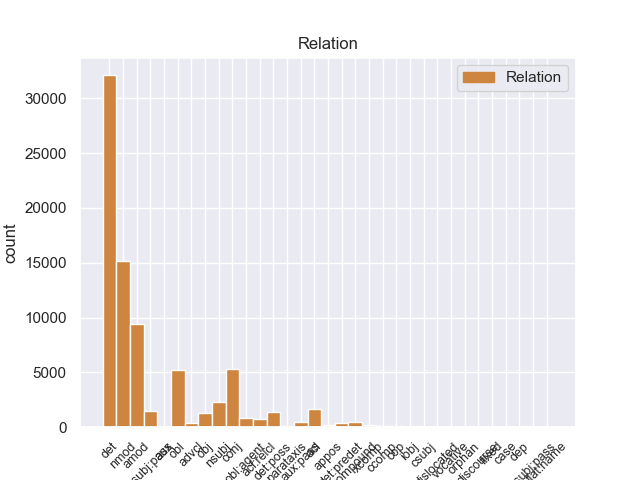
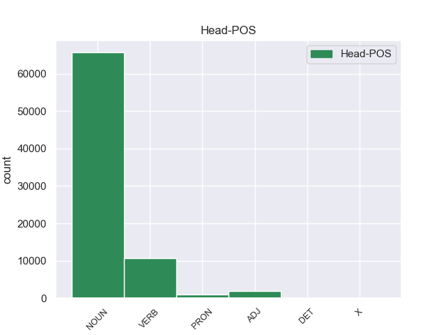
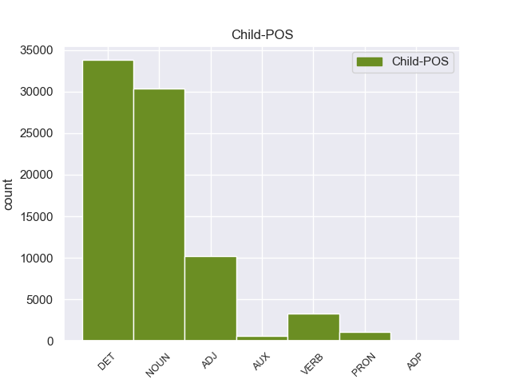

Distribution of features within this leaf



Agreement Rules sorted by frequency.
- When the dependent token is the determiner(det) of the head token, and the head token is NOUN and the dependent token is DET.
1 Mohammad _ _ _ _ 0 _ _ _
2 Khatami _ _ _ _ 0 _ _ _
3 , _ _ _ _ 0 _ _ _
4 il _ _ _ _ 0 _ _ _
5 presidente _ _ _ _ 0 _ _ _
6 di _ _ _ _ 0 _ _ _
7 l’ _ _ _ _ 0 _ _ _
8 Iran _ _ _ _ 0 _ _ _
9 , _ _ _ _ 0 _ _ _
10 si _ _ _ _ 0 _ _ _
11 è _ _ _ _ 0 _ _ _
12 impegnato _ _ _ _ 0 _ _ _
13 a _ _ _ _ 0 _ _ _
14 ricostruire _ _ _ _ 0 _ _ _
15 il _ _ _ _ 0 _ _ _
16 centro _ _ _ _ 0 _ _ _
17 di _ _ _ _ 0 _ _ _
18 la il DET RD Definite=Def|Gender=Fem|Number=Sing|PronType=Art 19 det 19:det _
19 città città NOUN S Gender=Fem 0 _ _ _
20 di _ _ _ _ 0 _ _ _
21 Bam _ _ _ _ 0 _ _ _
22 entro _ _ _ _ 0 _ _ _
23 2 _ _ _ _ 0 _ _ _
24 anni _ _ _ _ 0 _ _ _
25 . _ _ _ _ 0 _ _ _
1 Gli _ _ _ _ 0 _ _ _
2 edifici _ _ _ _ 0 _ _ _
3 di _ _ _ _ 0 _ _ _
4 il _ _ _ _ 0 _ _ _
5 centro _ _ _ _ 0 _ _ _
6 storico _ _ _ _ 0 _ _ _
7 erano _ _ _ _ 0 _ _ _
8 costruiti _ _ _ _ 0 _ _ _
9 con _ _ _ _ 0 _ _ _
10 l’ _ _ _ _ 0 _ _ _
11 argilla argilla NOUN S Gender=Fem|Number=Sing 0 _ _ _
12 rossa rosso ADJ A Gender=Fem|Number=Sing 11 amod 11:amod _
13 di _ _ _ _ 0 _ _ _
14 il _ _ _ _ 0 _ _ _
15 deserto _ _ _ _ 0 _ _ _
16 , _ _ _ _ 0 _ _ _
17 un _ _ _ _ 0 _ _ _
18 materiale _ _ _ _ 0 _ _ _
19 molto _ _ _ _ 0 _ _ _
20 fragile _ _ _ _ 0 _ _ _
21 . _ _ _ _ 0 _ _ _
1 Gli _ _ _ _ 0 _ _ _
2 edifici edificio NOUN S Gender=Masc|Number=Plur 0 _ _ _
3 di _ _ _ _ 0 _ _ _
4 il _ _ _ _ 0 _ _ _
5 centro centro NOUN S Gender=Masc|Number=Sing 2 nmod 2:nmod:di _
6 storico _ _ _ _ 0 _ _ _
7 erano _ _ _ _ 0 _ _ _
8 costruiti _ _ _ _ 0 _ _ _
9 con _ _ _ _ 0 _ _ _
10 l’ _ _ _ _ 0 _ _ _
11 argilla _ _ _ _ 0 _ _ _
12 rossa _ _ _ _ 0 _ _ _
13 di _ _ _ _ 0 _ _ _
14 il _ _ _ _ 0 _ _ _
15 deserto _ _ _ _ 0 _ _ _
16 , _ _ _ _ 0 _ _ _
17 un _ _ _ _ 0 _ _ _
18 materiale _ _ _ _ 0 _ _ _
19 molto _ _ _ _ 0 _ _ _
20 fragile _ _ _ _ 0 _ _ _
21 . _ _ _ _ 0 _ _ _
1 Su _ _ _ _ 0 _ _ _
2 le _ _ _ _ 0 _ _ _
3 barche _ _ _ _ 0 _ _ _
4 i _ _ _ _ 0 _ _ _
5 turisti _ _ _ _ 0 _ _ _
6 possono _ _ _ _ 0 _ _ _
7 ascoltare _ _ _ _ 0 _ _ _
8 la _ _ _ _ 0 _ _ _
9 descrizione descrizione NOUN S Gender=Fem|Number=Sing 0 _ _ _
10 e _ _ _ _ 0 _ _ _
11 la _ _ _ _ 0 _ _ _
12 storia storia NOUN S Gender=Fem|Number=Sing 9 conj 7:obj|9:conj:e _
13 di _ _ _ _ 0 _ _ _
14 i _ _ _ _ 0 _ _ _
15 monumenti _ _ _ _ 0 _ _ _
16 che _ _ _ _ 0 _ _ _
17 si _ _ _ _ 0 _ _ _
18 vedono _ _ _ _ 0 _ _ _
19 da _ _ _ _ 0 _ _ _
20 il _ _ _ _ 0 _ _ _
21 fiume _ _ _ _ 0 _ _ _
22 . _ _ _ _ 0 _ _ _
1 Il _ _ _ _ 0 _ _ _
2 25 _ _ _ _ 0 _ _ _
3 dicembre _ _ _ _ 0 _ _ _
4 2003 _ _ _ _ 0 _ _ _
5 , _ _ _ _ 0 _ _ _
6 in _ _ _ _ 0 _ _ _
7 il _ _ _ _ 0 _ _ _
8 sud sud NOUN S Gender=Masc|Number=Sing 14 obl 14:obl:in _
9 di _ _ _ _ 0 _ _ _
10 l’ _ _ _ _ 0 _ _ _
11 Iran _ _ _ _ 0 _ _ _
12 c’ _ _ _ _ 0 _ _ _
13 è _ _ _ _ 0 _ _ _
14 stato essere VERB V Gender=Masc|Number=Sing|Tense=Past|VerbForm=Part 0 _ _ _
15 un _ _ _ _ 0 _ _ _
16 terremoto _ _ _ _ 0 _ _ _
17 molto _ _ _ _ 0 _ _ _
18 grave _ _ _ _ 0 _ _ _
19 . _ _ _ _ 0 _ _ _
1 Il _ _ _ _ 0 _ _ _
2 riso _ _ _ _ 0 _ _ _
3 integrale _ _ _ _ 0 _ _ _
4 , _ _ _ _ 0 _ _ _
5 cioè _ _ _ _ 0 _ _ _
6 il _ _ _ _ 0 _ _ _
7 riso _ _ _ _ 0 _ _ _
8 con _ _ _ _ 0 _ _ _
9 i _ _ _ _ 0 _ _ _
10 chicchi chicco NOUN S Gender=Masc|Number=Plur 0 _ _ _
11 coperti coprire VERB V Gender=Masc|Number=Plur|Tense=Past|VerbForm=Part 10 acl 10:acl _
12 da _ _ _ _ 0 _ _ _
13 la _ _ _ _ 0 _ _ _
14 buccia _ _ _ _ 0 _ _ _
15 , _ _ _ _ 0 _ _ _
16 contiene _ _ _ _ 0 _ _ _
17 anche _ _ _ _ 0 _ _ _
18 molta _ _ _ _ 0 _ _ _
19 fibra _ _ _ _ 0 _ _ _
20 . _ _ _ _ 0 _ _ _
1 Durante _ _ _ _ 0 _ _ _
2 il _ _ _ _ 0 _ _ _
3 terremoto _ _ _ _ 0 _ _ _
4 in _ _ _ _ 0 _ _ _
5 Iran _ _ _ _ 0 _ _ _
6 , _ _ _ _ 0 _ _ _
7 sono _ _ _ _ 0 _ _ _
8 morte _ _ _ _ 0 _ _ _
9 moltissime _ _ _ _ 0 _ _ _
10 persone _ _ _ _ 0 _ _ _
11 e _ _ _ _ 0 _ _ _
12 il _ _ _ _ 0 _ _ _
13 centro centro NOUN S Gender=Masc|Number=Sing 23 nsubj:pass 23:nsubj:pass _
14 storico _ _ _ _ 0 _ _ _
15 di _ _ _ _ 0 _ _ _
16 la _ _ _ _ 0 _ _ _
17 città _ _ _ _ 0 _ _ _
18 di _ _ _ _ 0 _ _ _
19 Bam _ _ _ _ 0 _ _ _
20 è _ _ _ _ 0 _ _ _
21 stato _ _ _ _ 0 _ _ _
22 completamente _ _ _ _ 0 _ _ _
23 distrutto distruggere VERB V Gender=Masc|Number=Sing|Tense=Past|VerbForm=Part 0 _ _ _
24 . _ _ _ _ 0 _ _ _
1 Per _ _ _ _ 0 _ _ _
2 visitare _ _ _ _ 0 _ _ _
3 le _ _ _ _ 0 _ _ _
4 mostre _ _ _ _ 0 _ _ _
5 possiamo _ _ _ _ 0 _ _ _
6 acquistare _ _ _ _ 0 _ _ _
7 il _ _ _ _ 0 _ _ _
8 biglietto _ _ _ _ 0 _ _ _
9 il _ _ _ _ 0 _ _ _
10 giorno _ _ _ _ 0 _ _ _
11 stesso _ _ _ _ 0 _ _ _
12 di _ _ _ _ 0 _ _ _
13 la _ _ _ _ 0 _ _ _
14 nostra nostro DET AP Gender=Fem|Number=Sing|Poss=Yes|PronType=Prs 15 det:poss 15:det:poss _
15 visita visita NOUN S Gender=Fem|Number=Sing 0 _ _ _
16 in _ _ _ _ 0 _ _ _
17 le _ _ _ _ 0 _ _ _
18 sedi _ _ _ _ 0 _ _ _
19 di _ _ _ _ 0 _ _ _
20 le _ _ _ _ 0 _ _ _
21 varie _ _ _ _ 0 _ _ _
22 mostre _ _ _ _ 0 _ _ _
23 . _ _ _ _ 0 _ _ _
1 Gli _ _ _ _ 0 _ _ _
2 edifici edificio NOUN S Gender=Masc|Number=Plur 8 nsubj 8:nsubj _
3 di _ _ _ _ 0 _ _ _
4 il _ _ _ _ 0 _ _ _
5 centro _ _ _ _ 0 _ _ _
6 storico _ _ _ _ 0 _ _ _
7 erano _ _ _ _ 0 _ _ _
8 costruiti costruire VERB V Gender=Masc|Number=Plur|Tense=Past|VerbForm=Part 0 _ _ _
9 con _ _ _ _ 0 _ _ _
10 l’ _ _ _ _ 0 _ _ _
11 argilla _ _ _ _ 0 _ _ _
12 rossa _ _ _ _ 0 _ _ _
13 di _ _ _ _ 0 _ _ _
14 il _ _ _ _ 0 _ _ _
15 deserto _ _ _ _ 0 _ _ _
16 , _ _ _ _ 0 _ _ _
17 un _ _ _ _ 0 _ _ _
18 materiale _ _ _ _ 0 _ _ _
19 molto _ _ _ _ 0 _ _ _
20 fragile _ _ _ _ 0 _ _ _
21 . _ _ _ _ 0 _ _ _
1 Infatti _ _ _ _ 0 _ _ _
2 alcuni _ _ _ _ 0 _ _ _
3 esperti _ _ _ _ 0 _ _ _
4 hanno _ _ _ _ 0 _ _ _
5 organizzato organizzare VERB V Gender=Masc|Number=Sing|Tense=Past|VerbForm=Part 0 _ _ _
6 un _ _ _ _ 0 _ _ _
7 servizio servizio NOUN S Gender=Masc|Number=Sing 5 obj 5:obj _
8 di _ _ _ _ 0 _ _ _
9 trasporto _ _ _ _ 0 _ _ _
10 pubblico _ _ _ _ 0 _ _ _
11 con _ _ _ _ 0 _ _ _
12 le _ _ _ _ 0 _ _ _
13 barche _ _ _ _ 0 _ _ _
14 . _ _ _ _ 0 _ _ _
1 Durante _ _ _ _ 0 _ _ _
2 questa _ _ _ _ 0 _ _ _
3 riunione _ _ _ _ 0 _ _ _
4 , _ _ _ _ 0 _ _ _
5 i _ _ _ _ 0 _ _ _
6 rappresentanti _ _ _ _ 0 _ _ _
7 di _ _ _ _ 0 _ _ _
8 180 _ _ _ _ 0 _ _ _
9 Paesi _ _ _ _ 0 _ _ _
10 e _ _ _ _ 0 _ _ _
11 400 _ _ _ _ 0 _ _ _
12 ragazzi _ _ _ _ 0 _ _ _
13 e _ _ _ _ 0 _ _ _
14 ragazze _ _ _ _ 0 _ _ _
15 hanno _ _ _ _ 0 _ _ _
16 parlato parlare VERB V Gender=Masc|Number=Sing|Tense=Past|VerbForm=Part 0 _ _ _
17 di _ _ _ _ 0 _ _ _
18 i _ _ _ _ 0 _ _ _
19 problemi _ _ _ _ 0 _ _ _
20 di _ _ _ _ 0 _ _ _
21 i _ _ _ _ 0 _ _ _
22 bambini _ _ _ _ 0 _ _ _
23 e _ _ _ _ 0 _ _ _
24 hanno _ _ _ _ 0 _ _ _
25 cercato cercare VERB V Gender=Masc|Number=Sing|Tense=Past|VerbForm=Part 16 conj 16:conj:e _
26 una _ _ _ _ 0 _ _ _
27 soluzione _ _ _ _ 0 _ _ _
28 . _ _ _ _ 0 _ _ _
1 Durante _ _ _ _ 0 _ _ _
2 il _ _ _ _ 0 _ _ _
3 terremoto _ _ _ _ 0 _ _ _
4 in _ _ _ _ 0 _ _ _
5 Iran _ _ _ _ 0 _ _ _
6 , _ _ _ _ 0 _ _ _
7 sono _ _ _ _ 0 _ _ _
8 morte _ _ _ _ 0 _ _ _
9 moltissime _ _ _ _ 0 _ _ _
10 persone _ _ _ _ 0 _ _ _
11 e _ _ _ _ 0 _ _ _
12 il _ _ _ _ 0 _ _ _
13 centro _ _ _ _ 0 _ _ _
14 storico _ _ _ _ 0 _ _ _
15 di _ _ _ _ 0 _ _ _
16 la _ _ _ _ 0 _ _ _
17 città _ _ _ _ 0 _ _ _
18 di _ _ _ _ 0 _ _ _
19 Bam _ _ _ _ 0 _ _ _
20 è _ _ _ _ 0 _ _ _
21 stato essere AUX VA Gender=Masc|Number=Sing|Tense=Past|VerbForm=Part 23 aux:pass 23:aux:pass _
22 completamente _ _ _ _ 0 _ _ _
23 distrutto distruggere VERB V Gender=Masc|Number=Sing|Tense=Past|VerbForm=Part 0 _ _ _
24 . _ _ _ _ 0 _ _ _
1 I _ _ _ _ 0 _ _ _
2 titoli titolo NOUN S Gender=Masc|Number=Plur 0 _ _ _
3 di _ _ _ _ 0 _ _ _
4 qualche _ _ _ _ 0 _ _ _
5 canzone _ _ _ _ 0 _ _ _
6 che _ _ _ _ 0 _ _ _
7 Luciano _ _ _ _ 0 _ _ _
8 Ligabue _ _ _ _ 0 _ _ _
9 ha _ _ _ _ 0 _ _ _
10 composto comporre VERB V Gender=Masc|Number=Sing|Tense=Past|VerbForm=Part 2 acl:relcl 2:acl:relcl _
11 per _ _ _ _ 0 _ _ _
12 il _ _ _ _ 0 _ _ _
13 film _ _ _ _ 0 _ _ _
14 Radiofreccia _ _ _ _ 0 _ _ _
15 sono _ _ _ _ 0 _ _ _
16 : _ _ _ _ 0 _ _ _
17 Ho _ _ _ _ 0 _ _ _
18 perso _ _ _ _ 0 _ _ _
19 le _ _ _ _ 0 _ _ _
20 parole _ _ _ _ 0 _ _ _
21 , _ _ _ _ 0 _ _ _
22 Metti _ _ _ _ 0 _ _ _
23 in _ _ _ _ 0 _ _ _
24 circolo _ _ _ _ 0 _ _ _
25 il _ _ _ _ 0 _ _ _
26 tuo _ _ _ _ 0 _ _ _
27 amore _ _ _ _ 0 _ _ _
28 . _ _ _ _ 0 _ _ _
1 L’ _ _ _ _ 0 _ _ _
2 energia _ _ _ _ 0 _ _ _
3 elettrica _ _ _ _ 0 _ _ _
4 è _ _ _ _ 0 _ _ _
5 prodotta produrre VERB V Gender=Fem|Number=Sing|Tense=Past|VerbForm=Part 0 _ _ _
6 da _ _ _ _ 0 _ _ _
7 le _ _ _ _ 0 _ _ _
8 centrali centrale NOUN S Gender=Fem|Number=Plur 5 obl:agent 5:obl:agent:da _
9 elettriche _ _ _ _ 0 _ _ _
10 ed _ _ _ _ 0 _ _ _
11 è _ _ _ _ 0 _ _ _
12 distribuita _ _ _ _ 0 _ _ _
13 in _ _ _ _ 0 _ _ _
14 tutt’ _ _ _ _ 0 _ _ _
15 Italia _ _ _ _ 0 _ _ _
16 attraverso _ _ _ _ 0 _ _ _
17 la _ _ _ _ 0 _ _ _
18 rete _ _ _ _ 0 _ _ _
19 elettrica _ _ _ _ 0 _ _ _
20 . _ _ _ _ 0 _ _ _
1 La _ _ _ _ 0 _ _ _
2 Costituzione _ _ _ _ 0 _ _ _
3 italiana _ _ _ _ 0 _ _ _
4 prevede _ _ _ _ 0 _ _ _
5 4 _ _ _ _ 0 _ _ _
6 tipi _ _ _ _ 0 _ _ _
7 di _ _ _ _ 0 _ _ _
8 referendum _ _ _ _ 0 _ _ _
9 : _ _ _ _ 0 _ _ _
10 abrogativo abrogativo ADJ A Gender=Masc|Number=Sing 0 _ _ _
11 , _ _ _ _ 0 _ _ _
12 territoriale _ _ _ _ 0 _ _ _
13 , _ _ _ _ 0 _ _ _
14 consultivo consultivo ADJ A Gender=Masc|Number=Sing 10 conj 6:amod|10:conj:e _
15 e _ _ _ _ 0 _ _ _
16 costituzionale _ _ _ _ 0 _ _ _
17 . _ _ _ _ 0 _ _ _
1 Il _ _ _ _ 0 _ _ _
2 riso riso NOUN S Gender=Masc|Number=Sing 4 nsubj 4:nsubj _
3 è _ _ _ _ 0 _ _ _
4 utile utile ADJ A Gender=Masc|Number=Sing 0 _ _ _
5 per _ _ _ _ 0 _ _ _
6 curare _ _ _ _ 0 _ _ _
7 i _ _ _ _ 0 _ _ _
8 disturbi _ _ _ _ 0 _ _ _
9 di _ _ _ _ 0 _ _ _
10 l' _ _ _ _ 0 _ _ _
11 intestino _ _ _ _ 0 _ _ _
12 , _ _ _ _ 0 _ _ _
13 di _ _ _ _ 0 _ _ _
14 lo _ _ _ _ 0 _ _ _
15 stomaco _ _ _ _ 0 _ _ _
16 e _ _ _ _ 0 _ _ _
17 soprattutto _ _ _ _ 0 _ _ _
18 l' _ _ _ _ 0 _ _ _
19 ulcera _ _ _ _ 0 _ _ _
20 . _ _ _ _ 0 _ _ _
1 Il _ _ _ _ 0 _ _ _
2 riso _ _ _ _ 0 _ _ _
3 è _ _ _ _ 0 _ _ _
4 ricco _ _ _ _ 0 _ _ _
5 di _ _ _ _ 0 _ _ _
6 molti _ _ _ _ 0 _ _ _
7 elementi _ _ _ _ 0 _ _ _
8 nutritivi _ _ _ _ 0 _ _ _
9 , _ _ _ _ 0 _ _ _
10 preziosi prezioso ADJ A Gender=Masc|Number=Plur 0 _ _ _
11 per _ _ _ _ 0 _ _ _
12 il _ _ _ _ 0 _ _ _
13 nostro _ _ _ _ 0 _ _ _
14 organismo organismo NOUN S Gender=Masc|Number=Sing 10 obl 10:obl:per SpaceAfter=No
15 , _ _ _ _ 0 _ _ _
16 come _ _ _ _ 0 _ _ _
17 le _ _ _ _ 0 _ _ _
18 proteine _ _ _ _ 0 _ _ _
19 , _ _ _ _ 0 _ _ _
20 i _ _ _ _ 0 _ _ _
21 carboidrati _ _ _ _ 0 _ _ _
22 , _ _ _ _ 0 _ _ _
23 le _ _ _ _ 0 _ _ _
24 vitamine _ _ _ _ 0 _ _ _
25 e _ _ _ _ 0 _ _ _
26 i _ _ _ _ 0 _ _ _
27 sali _ _ _ _ 0 _ _ _
28 minerali _ _ _ _ 0 _ _ _
29 . _ _ _ _ 0 _ _ _
1 Il _ _ _ _ 0 _ _ _
2 centro _ _ _ _ 0 _ _ _
3 storico _ _ _ _ 0 _ _ _
4 era _ _ _ _ 0 _ _ _
5 la _ _ _ _ 0 _ _ _
6 parte _ _ _ _ 0 _ _ _
7 più _ _ _ _ 0 _ _ _
8 antica _ _ _ _ 0 _ _ _
9 di _ _ _ _ 0 _ _ _
10 Bam _ _ _ _ 0 _ _ _
11 che _ _ _ _ 0 _ _ _
12 era _ _ _ _ 0 _ _ _
13 patrimonio _ _ _ _ 0 _ _ _
14 artistico _ _ _ _ 0 _ _ _
15 di _ _ _ _ 0 _ _ _
16 tutta tutto DET T Gender=Fem|Number=Sing|PronType=Tot 18 det:predet 18:det:predet _
17 l’ _ _ _ _ 0 _ _ _
18 umanità umanità NOUN S Gender=Fem|Number=Sing 0 _ _ _
19 . _ _ _ _ 0 _ _ _
1 I _ _ _ _ 0 _ _ _
2 ricercatori _ _ _ _ 0 _ _ _
3 di _ _ _ _ 0 _ _ _
4 il _ _ _ _ 0 _ _ _
5 Censis _ _ _ _ 0 _ _ _
6 , _ _ _ _ 0 _ _ _
7 Centro _ _ _ _ 0 _ _ _
8 Studi studio NOUN S Gender=Masc|Number=Plur 0 _ _ _
9 Investimenti investimento NOUN S Gender=Masc|Number=Plur 8 compound 8:compound _
10 Sociali _ _ _ _ 0 _ _ _
11 , _ _ _ _ 0 _ _ _
12 hanno _ _ _ _ 0 _ _ _
13 presentato _ _ _ _ 0 _ _ _
14 un _ _ _ _ 0 _ _ _
15 rapporto _ _ _ _ 0 _ _ _
16 su _ _ _ _ 0 _ _ _
17 le _ _ _ _ 0 _ _ _
18 condizioni _ _ _ _ 0 _ _ _
19 di _ _ _ _ 0 _ _ _
20 vita _ _ _ _ 0 _ _ _
21 di _ _ _ _ 0 _ _ _
22 la _ _ _ _ 0 _ _ _
23 popolazione _ _ _ _ 0 _ _ _
24 italiana _ _ _ _ 0 _ _ _
25 in _ _ _ _ 0 _ _ _
26 il _ _ _ _ 0 _ _ _
27 2003 _ _ _ _ 0 _ _ _
28 . _ _ _ _ 0 _ _ _
1 Le _ _ _ _ 0 _ _ _
2 sostanze sostanza NOUN S Gender=Fem|Number=Plur 5 nsubj 5:nsubj _
3 vietate _ _ _ _ 0 _ _ _
4 sono _ _ _ _ 0 _ _ _
5 sostanze sostanza NOUN S Gender=Fem|Number=Plur 0 _ _ _
6 che _ _ _ _ 0 _ _ _
7 modificano _ _ _ _ 0 _ _ _
8 le _ _ _ _ 0 _ _ _
9 capacità _ _ _ _ 0 _ _ _
10 fisiche _ _ _ _ 0 _ _ _
11 di _ _ _ _ 0 _ _ _
12 gli _ _ _ _ 0 _ _ _
13 atleti _ _ _ _ 0 _ _ _
14 e _ _ _ _ 0 _ _ _
15 sono _ _ _ _ 0 _ _ _
16 pericolose _ _ _ _ 0 _ _ _
17 per _ _ _ _ 0 _ _ _
18 la _ _ _ _ 0 _ _ _
19 loro _ _ _ _ 0 _ _ _
20 salute _ _ _ _ 0 _ _ _
21 . _ _ _ _ 0 _ _ _
1 Prima _ _ _ _ 0 _ _ _
2 , _ _ _ _ 0 _ _ _
3 le _ _ _ _ 0 _ _ _
4 squadre _ _ _ _ 0 _ _ _
5 con _ _ _ _ 0 _ _ _
6 più _ _ _ _ 0 _ _ _
7 soldi _ _ _ _ 0 _ _ _
8 costruivano _ _ _ _ 0 _ _ _
9 e _ _ _ _ 0 _ _ _
10 usavano _ _ _ _ 0 _ _ _
11 due _ _ _ _ 0 _ _ _
12 motori _ _ _ _ 0 _ _ _
13 , _ _ _ _ 0 _ _ _
14 uno uno PRON PI Gender=Masc|Number=Sing|PronType=Ind 0 _ _ _
15 per _ _ _ _ 0 _ _ _
16 il _ _ _ _ 0 _ _ _
17 giro giro NOUN S Gender=Masc|Number=Sing 14 nmod 14:nmod:per _
18 di _ _ _ _ 0 _ _ _
19 qualifica _ _ _ _ 0 _ _ _
20 e _ _ _ _ 0 _ _ _
21 uno _ _ _ _ 0 _ _ _
22 per _ _ _ _ 0 _ _ _
23 la _ _ _ _ 0 _ _ _
24 gara _ _ _ _ 0 _ _ _
25 . _ _ _ _ 0 _ _ _
1 Ora _ _ _ _ 0 _ _ _
2 , _ _ _ _ 0 _ _ _
3 le _ _ _ _ 0 _ _ _
4 squadre _ _ _ _ 0 _ _ _
5 automobilistiche _ _ _ _ 0 _ _ _
6 devono _ _ _ _ 0 _ _ _
7 costruire _ _ _ _ 0 _ _ _
8 e _ _ _ _ 0 _ _ _
9 usare _ _ _ _ 0 _ _ _
10 un _ _ _ _ 0 _ _ _
11 solo _ _ _ _ 0 _ _ _
12 motore _ _ _ _ 0 _ _ _
13 , _ _ _ _ 0 _ _ _
14 che _ _ _ _ 0 _ _ _
15 deve _ _ _ _ 0 _ _ _
16 essere _ _ _ _ 0 _ _ _
17 lo lo DET RD Definite=Def|Gender=Masc|Number=Sing|PronType=Art 18 det 18:det _
18 stesso stesso ADJ A Gender=Masc|Number=Sing 0 _ _ _
19 per _ _ _ _ 0 _ _ _
20 il _ _ _ _ 0 _ _ _
21 giro _ _ _ _ 0 _ _ _
22 di _ _ _ _ 0 _ _ _
23 qualifica _ _ _ _ 0 _ _ _
24 e _ _ _ _ 0 _ _ _
25 per _ _ _ _ 0 _ _ _
26 la _ _ _ _ 0 _ _ _
27 gara _ _ _ _ 0 _ _ _
28 . _ _ _ _ 0 _ _ _
1 Prima _ _ _ _ 0 _ _ _
2 di _ _ _ _ 0 _ _ _
3 andare _ _ _ _ 0 _ _ _
4 a _ _ _ _ 0 _ _ _
5 fare _ _ _ _ 0 _ _ _
6 la _ _ _ _ 0 _ _ _
7 spesa _ _ _ _ 0 _ _ _
8 è _ _ _ _ 0 _ _ _
9 utile _ _ _ _ 0 _ _ _
10 scrivere _ _ _ _ 0 _ _ _
11 su _ _ _ _ 0 _ _ _
12 un _ _ _ _ 0 _ _ _
13 foglio _ _ _ _ 0 _ _ _
14 la _ _ _ _ 0 _ _ _
15 lista _ _ _ _ 0 _ _ _
16 di _ _ _ _ 0 _ _ _
17 tutto tutto DET DI Gender=Masc|Number=Sing|PronType=Ind 18 det 18:det _
18 quello quello PRON PD Gender=Masc|Number=Sing|PronType=Dem 0 _ _ _
19 che _ _ _ _ 0 _ _ _
20 dobbiamo _ _ _ _ 0 _ _ _
21 comprare _ _ _ _ 0 _ _ _
22 . _ _ _ _ 0 _ _ _
1 Perciò _ _ _ _ 0 _ _ _
2 , _ _ _ _ 0 _ _ _
3 tutti _ _ _ _ 0 _ _ _
4 i _ _ _ _ 0 _ _ _
5 Paesi paese NOUN S Gender=Masc|Number=Plur 0 _ _ _
6 di _ _ _ _ 0 _ _ _
7 il _ _ _ _ 0 _ _ _
8 mondo _ _ _ _ 0 _ _ _
9 , _ _ _ _ 0 _ _ _
10 specialmente _ _ _ _ 0 _ _ _
11 quelli quello PRON PD Gender=Masc|Number=Plur|PronType=Dem 5 nmod 5:nmod _
12 più _ _ _ _ 0 _ _ _
13 ricchi _ _ _ _ 0 _ _ _
14 , _ _ _ _ 0 _ _ _
15 devono _ _ _ _ 0 _ _ _
16 impegnar _ _ _ _ 0 _ _ _
17 si _ _ _ _ 0 _ _ _
18 di _ _ _ _ 0 _ _ _
19 più _ _ _ _ 0 _ _ _
20 per _ _ _ _ 0 _ _ _
21 migliorare _ _ _ _ 0 _ _ _
22 le _ _ _ _ 0 _ _ _
23 condizioni _ _ _ _ 0 _ _ _
24 di _ _ _ _ 0 _ _ _
25 vita _ _ _ _ 0 _ _ _
26 di _ _ _ _ 0 _ _ _
27 tutti _ _ _ _ 0 _ _ _
28 i _ _ _ _ 0 _ _ _
29 bambini _ _ _ _ 0 _ _ _
30 . _ _ _ _ 0 _ _ _
1 Per _ _ _ _ 0 _ _ _
2 questo _ _ _ _ 0 _ _ _
3 film _ _ _ _ 0 _ _ _
4 ha _ _ _ _ 0 _ _ _
5 vinto vincere VERB V Gender=Masc|Number=Sing|Tense=Past|VerbForm=Part 0 _ _ _
6 un _ _ _ _ 0 _ _ _
7 premio _ _ _ _ 0 _ _ _
8 Denys _ _ _ _ 0 _ _ _
9 Arcand _ _ _ _ 0 _ _ _
10 per _ _ _ _ 0 _ _ _
11 aver _ _ _ _ 0 _ _ _
12 scritto scrivere VERB V Gender=Masc|Number=Sing|Tense=Past|VerbForm=Part 5 advcl 5:advcl:per _
13 la _ _ _ _ 0 _ _ _
14 storia _ _ _ _ 0 _ _ _
15 di _ _ _ _ 0 _ _ _
16 il _ _ _ _ 0 _ _ _
17 film _ _ _ _ 0 _ _ _
18 Les _ _ _ _ 0 _ _ _
19 invasions _ _ _ _ 0 _ _ _
20 barbares _ _ _ _ 0 _ _ _
21 . _ _ _ _ 0 _ _ _
1 Per _ _ _ _ 0 _ _ _
2 esempio _ _ _ _ 0 _ _ _
3 Mina _ _ _ _ 0 _ _ _
4 ha _ _ _ _ 0 _ _ _
5 reso _ _ _ _ 0 _ _ _
6 famosa _ _ _ _ 0 _ _ _
7 la _ _ _ _ 0 _ _ _
8 canzone canzone NOUN S Gender=Fem|Number=Sing 0 _ _ _
9 di _ _ _ _ 0 _ _ _
10 Fabrizio _ _ _ _ 0 _ _ _
11 De _ _ _ _ 0 _ _ _
12 Andrè _ _ _ _ 0 _ _ _
13 La _ _ _ _ 0 _ _ _
14 canzone canzone NOUN S Gender=Fem|Number=Sing 8 appos 8:appos _
15 di _ _ _ _ 0 _ _ _
16 Marinella _ _ _ _ 0 _ _ _
17 . _ _ _ _ 0 _ _ _
1 La _ _ _ _ 0 _ _ _
2 giuria _ _ _ _ 0 _ _ _
3 assegna _ _ _ _ 0 _ _ _
4 anche _ _ _ _ 0 _ _ _
5 altri _ _ _ _ 0 _ _ _
6 premi premio NOUN S Gender=Masc|Number=Plur 0 _ _ _
7 : _ _ _ _ 0 _ _ _
8 a _ _ _ _ 0 _ _ _
9 il _ _ _ _ 0 _ _ _
10 miglior _ _ _ _ 0 _ _ _
11 regista regista NOUN S Gender=Masc|Number=Sing 6 obl 6:obl:a SpaceAfter=No
12 , _ _ _ _ 0 _ _ _
13 a _ _ _ _ 0 _ _ _
14 gli _ _ _ _ 0 _ _ _
15 attori _ _ _ _ 0 _ _ _
16 più _ _ _ _ 0 _ _ _
17 bravi _ _ _ _ 0 _ _ _
18 , _ _ _ _ 0 _ _ _
19 a _ _ _ _ 0 _ _ _
20 la _ _ _ _ 0 _ _ _
21 storia _ _ _ _ 0 _ _ _
22 più _ _ _ _ 0 _ _ _
23 bella _ _ _ _ 0 _ _ _
24 e _ _ _ _ 0 _ _ _
25 alcuni _ _ _ _ 0 _ _ _
26 premi _ _ _ _ 0 _ _ _
27 speciali _ _ _ _ 0 _ _ _
28 . _ _ _ _ 0 _ _ _
1 Poi _ _ _ _ 0 _ _ _
2 le le PRON PC Clitic=Yes|Gender=Fem|Person=3|PronType=Prs 4 obj 4:obj|6:obj _
3 hanno _ _ _ _ 0 _ _ _
4 arrestate arrestare VERB V Gender=Fem|Number=Plur|Tense=Past|VerbForm=Part 0 _ _ _
5 e _ _ _ _ 0 _ _ _
6 rinchiuse _ _ _ _ 0 _ _ _
7 in _ _ _ _ 0 _ _ _
8 i _ _ _ _ 0 _ _ _
9 campi _ _ _ _ 0 _ _ _
10 di _ _ _ _ 0 _ _ _
11 concentramento _ _ _ _ 0 _ _ _
12 . _ _ _ _ 0 _ _ _
1 Benvenuti _ _ _ _ 0 _ _ _
2 quindi _ _ _ _ 0 _ _ _
3 in _ _ _ _ 0 _ _ _
4 l' _ _ _ _ 0 _ _ _
5 economia _ _ _ _ 0 _ _ _
6 virtuale _ _ _ _ 0 _ _ _
7 di _ _ _ _ 0 _ _ _
8 le _ _ _ _ 0 _ _ _
9 fabbriche _ _ _ _ 0 _ _ _
10 che _ _ _ _ 0 _ _ _
11 sfruttano _ _ _ _ 0 _ _ _
12 i _ _ _ _ 0 _ _ _
13 lavoratori _ _ _ _ 0 _ _ _
14 , _ _ _ _ 0 _ _ _
15 a _ _ _ _ 0 _ _ _
16 l' _ _ _ _ 0 _ _ _
17 interno _ _ _ _ 0 _ _ _
18 di _ _ _ _ 0 _ _ _
19 la _ _ _ _ 0 _ _ _
20 quale _ _ _ _ 0 _ _ _
21 molti molto PRON PI Gender=Masc|Number=Plur|PronType=Ind 25 nsubj:pass 25:nsubj:pass _
22 di _ _ _ _ 0 _ _ _
23 noi _ _ _ _ 0 _ _ _
24 sono _ _ _ _ 0 _ _ _
25 inchiodati inchiodare VERB V Gender=Masc|Number=Plur|Tense=Past|VerbForm=Part 0 _ _ _
26 a _ _ _ _ 0 _ _ _
27 le _ _ _ _ 0 _ _ _
28 scrivanie _ _ _ _ 0 _ _ _
29 e _ _ _ _ 0 _ _ _
30 a _ _ _ _ 0 _ _ _
31 gli _ _ _ _ 0 _ _ _
32 schermi _ _ _ _ 0 _ _ _
33 ; _ _ _ _ 0 _ _ _
1 Da _ _ _ _ 0 _ _ _
2 la _ _ _ _ 0 _ _ _
3 metà _ _ _ _ 0 _ _ _
4 di _ _ _ _ 0 _ _ _
5 gli _ _ _ _ 0 _ _ _
6 anni _ _ _ _ 0 _ _ _
7 Sessanta _ _ _ _ 0 _ _ _
8 Paolo _ _ _ _ 0 _ _ _
9 Conte _ _ _ _ 0 _ _ _
10 scrive _ _ _ _ 0 _ _ _
11 e _ _ _ _ 0 _ _ _
12 canta _ _ _ _ 0 _ _ _
13 canzoni _ _ _ _ 0 _ _ _
14 diventate diventare VERB V Gender=Fem|Number=Plur|Tense=Past|VerbForm=Part 0 _ _ _
15 famose famoso ADJ A Gender=Fem|Number=Plur 14 xcomp 14:xcomp _
16 in _ _ _ _ 0 _ _ _
17 tutto _ _ _ _ 0 _ _ _
18 il _ _ _ _ 0 _ _ _
19 mondo _ _ _ _ 0 _ _ _
20 . _ _ _ _ 0 _ _ _
1 Il _ _ _ _ 0 _ _ _
2 23 _ _ _ _ 0 _ _ _
3 settembre _ _ _ _ 0 _ _ _
4 2005 _ _ _ _ 0 _ _ _
5 , _ _ _ _ 0 _ _ _
6 il _ _ _ _ 0 _ _ _
7 Presidente _ _ _ _ 0 _ _ _
8 di _ _ _ _ 0 _ _ _
9 la _ _ _ _ 0 _ _ _
10 Repubblica _ _ _ _ 0 _ _ _
11 , _ _ _ _ 0 _ _ _
12 Carlo _ _ _ _ 0 _ _ _
13 Azeglio _ _ _ _ 0 _ _ _
14 Ciampi _ _ _ _ 0 _ _ _
15 , _ _ _ _ 0 _ _ _
16 ha _ _ _ _ 0 _ _ _
17 nominato nominare VERB V Gender=Masc|Number=Sing|Tense=Past|VerbForm=Part 0 _ _ _
18 Giorgio _ _ _ _ 0 _ _ _
19 Napolitano _ _ _ _ 0 _ _ _
20 senatore senatore NOUN S Gender=Masc|Number=Sing 17 xcomp 17:xcomp _
21 a _ _ _ _ 0 _ _ _
22 vita _ _ _ _ 0 _ _ _
23 . _ _ _ _ 0 _ _ _
1 Per _ _ _ _ 0 _ _ _
2 esempio _ _ _ _ 0 _ _ _
3 , _ _ _ _ 0 _ _ _
4 per _ _ _ _ 0 _ _ _
5 i _ _ _ _ 0 _ _ _
6 bambini _ _ _ _ 0 _ _ _
7 piccoli _ _ _ _ 0 _ _ _
8 i _ _ _ _ 0 _ _ _
9 giocattoli giocattolo NOUN S Gender=Masc|Number=Plur 12 nsubj 12:nsubj _
10 sicuri _ _ _ _ 0 _ _ _
11 sono _ _ _ _ 0 _ _ _
12 quelli quello PRON PD Gender=Masc|Number=Plur|PronType=Dem 0 _ _ _
13 che _ _ _ _ 0 _ _ _
14 non _ _ _ _ 0 _ _ _
15 hanno _ _ _ _ 0 _ _ _
16 parti _ _ _ _ 0 _ _ _
17 troppo _ _ _ _ 0 _ _ _
18 piccole _ _ _ _ 0 _ _ _
19 . _ _ _ _ 0 _ _ _
1 Il _ _ _ _ 0 _ _ _
2 titolo _ _ _ _ 0 _ _ _
3 di _ _ _ _ 0 _ _ _
4 la _ _ _ _ 0 _ _ _
5 canzone _ _ _ _ 0 _ _ _
6 che _ _ _ _ 0 _ _ _
7 Luciano _ _ _ _ 0 _ _ _
8 Ligabue _ _ _ _ 0 _ _ _
9 ha _ _ _ _ 0 _ _ _
10 composto _ _ _ _ 0 _ _ _
11 per _ _ _ _ 0 _ _ _
12 il _ _ _ _ 0 _ _ _
13 film _ _ _ _ 0 _ _ _
14 Da _ _ _ _ 0 _ _ _
15 zero _ _ _ _ 0 _ _ _
16 a _ _ _ _ 0 _ _ _
17 dieci _ _ _ _ 0 _ _ _
18 è _ _ _ _ 0 _ _ _
19 : _ _ _ _ 0 _ _ _
20 Questa questa PRON PD Gender=Fem|Number=Sing|PronType=Dem 24 nsubj 24:nsubj _
21 è _ _ _ _ 0 _ _ _
22 la _ _ _ _ 0 _ _ _
23 mia _ _ _ _ 0 _ _ _
24 vita vita NOUN S Gender=Fem|Number=Sing 0 _ _ _
25 . _ _ _ _ 0 _ _ _
1 Perciò _ _ _ _ 0 _ _ _
2 , _ _ _ _ 0 _ _ _
3 tutti _ _ _ _ 0 _ _ _
4 i _ _ _ _ 0 _ _ _
5 Paesi _ _ _ _ 0 _ _ _
6 di _ _ _ _ 0 _ _ _
7 il _ _ _ _ 0 _ _ _
8 mondo _ _ _ _ 0 _ _ _
9 , _ _ _ _ 0 _ _ _
10 specialmente _ _ _ _ 0 _ _ _
11 quelli quello PRON PD Gender=Masc|Number=Plur|PronType=Dem 0 _ _ _
12 più _ _ _ _ 0 _ _ _
13 ricchi ricco ADJ A Gender=Masc|Number=Plur 11 amod 11:amod SpaceAfter=No
14 , _ _ _ _ 0 _ _ _
15 devono _ _ _ _ 0 _ _ _
16 impegnar _ _ _ _ 0 _ _ _
17 si _ _ _ _ 0 _ _ _
18 di _ _ _ _ 0 _ _ _
19 più _ _ _ _ 0 _ _ _
20 per _ _ _ _ 0 _ _ _
21 migliorare _ _ _ _ 0 _ _ _
22 le _ _ _ _ 0 _ _ _
23 condizioni _ _ _ _ 0 _ _ _
24 di _ _ _ _ 0 _ _ _
25 vita _ _ _ _ 0 _ _ _
26 di _ _ _ _ 0 _ _ _
27 tutti _ _ _ _ 0 _ _ _
28 i _ _ _ _ 0 _ _ _
29 bambini _ _ _ _ 0 _ _ _
30 . _ _ _ _ 0 _ _ _
1 Da _ _ _ _ 0 _ _ _
2 quest’ _ _ _ _ 0 _ _ _
3 anno _ _ _ _ 0 _ _ _
4 , _ _ _ _ 0 _ _ _
5 in _ _ _ _ 0 _ _ _
6 il _ _ _ _ 0 _ _ _
7 primo _ _ _ _ 0 _ _ _
8 ciclo _ _ _ _ 0 _ _ _
9 , _ _ _ _ 0 _ _ _
10 i _ _ _ _ 0 _ _ _
11 bambini _ _ _ _ 0 _ _ _
12 e _ _ _ _ 0 _ _ _
13 le _ _ _ _ 0 _ _ _
14 bambine _ _ _ _ 0 _ _ _
15 che _ _ _ _ 0 _ _ _
16 hanno _ _ _ _ 0 _ _ _
17 cinque _ _ _ _ 0 _ _ _
18 anni anno NOUN S Gender=Masc|Number=Plur 0 _ _ _
19 e _ _ _ _ 0 _ _ _
20 mezzo mezzo PRON PI Gender=Masc|Number=Sing 18 conj 16:obj|18:conj:e _
21 possono _ _ _ _ 0 _ _ _
22 frequentare _ _ _ _ 0 _ _ _
23 la _ _ _ _ 0 _ _ _
24 prima _ _ _ _ 0 _ _ _
25 classe _ _ _ _ 0 _ _ _
26 di _ _ _ _ 0 _ _ _
27 la _ _ _ _ 0 _ _ _
28 scuola _ _ _ _ 0 _ _ _
29 primaria _ _ _ _ 0 _ _ _
30 . _ _ _ _ 0 _ _ _
1 Ciò ciò PRON PD Gender=Masc|Number=Sing|PronType=Dem 7 nsubj 7:nsubj SpaceAfter=No
2 , _ _ _ _ 0 _ _ _
3 di _ _ _ _ 0 _ _ _
4 conseguenza _ _ _ _ 0 _ _ _
5 , _ _ _ _ 0 _ _ _
6 ha _ _ _ _ 0 _ _ _
7 rafforzato rafforzare VERB V Gender=Masc|Number=Sing|Tense=Past|VerbForm=Part 0 _ _ _
8 l' _ _ _ _ 0 _ _ _
9 influenza _ _ _ _ 0 _ _ _
10 di _ _ _ _ 0 _ _ _
11 i _ _ _ _ 0 _ _ _
12 partiti _ _ _ _ 0 _ _ _
13 estremisti _ _ _ _ 0 _ _ _
14 e _ _ _ _ 0 _ _ _
15 creato _ _ _ _ 0 _ _ _
16 le _ _ _ _ 0 _ _ _
17 premesse _ _ _ _ 0 _ _ _
18 di _ _ _ _ 0 _ _ _
19 una _ _ _ _ 0 _ _ _
20 tragedia _ _ _ _ 0 _ _ _
21 di _ _ _ _ 0 _ _ _
22 la _ _ _ _ 0 _ _ _
23 sanità _ _ _ _ 0 _ _ _
24 pubblica _ _ _ _ 0 _ _ _
25 . _ _ _ _ 0 _ _ _
1 Ogni _ _ _ _ 0 _ _ _
2 sera _ _ _ _ 0 _ _ _
3 , _ _ _ _ 0 _ _ _
4 uno _ _ _ _ 0 _ _ _
5 scrittore _ _ _ _ 0 _ _ _
6 famoso _ _ _ _ 0 _ _ _
7 legge _ _ _ _ 0 _ _ _
8 alcuni _ _ _ _ 0 _ _ _
9 suoi _ _ _ _ 0 _ _ _
10 testi _ _ _ _ 0 _ _ _
11 inediti _ _ _ _ 0 _ _ _
12 , _ _ _ _ 0 _ _ _
13 cioè _ _ _ _ 0 _ _ _
14 testi _ _ _ _ 0 _ _ _
15 scritti scrivere VERB V Gender=Masc|Number=Plur|Tense=Past|VerbForm=Part 0 _ _ _
16 da _ _ _ _ 0 _ _ _
17 lui lui PRON PE Gender=Masc|Number=Sing|Person=3|PronType=Prs 15 obl 15:obl:da SpaceAfter=No
18 , _ _ _ _ 0 _ _ _
19 ma _ _ _ _ 0 _ _ _
20 ancora _ _ _ _ 0 _ _ _
21 non _ _ _ _ 0 _ _ _
22 pubblicati _ _ _ _ 0 _ _ _
23 . _ _ _ _ 0 _ _ _
1 È _ _ _ _ 0 _ _ _
2 stato essere AUX V Gender=Masc|Number=Sing|Tense=Past|VerbForm=Part 3 cop 3:cop _
3 segretario segretario NOUN S Gender=Masc|Number=Sing 0 _ _ _
4 di _ _ _ _ 0 _ _ _
5 il _ _ _ _ 0 _ _ _
6 partito _ _ _ _ 0 _ _ _
7 di _ _ _ _ 0 _ _ _
8 la _ _ _ _ 0 _ _ _
9 Rifondazione _ _ _ _ 0 _ _ _
10 Comunista _ _ _ _ 0 _ _ _
11 e _ _ _ _ 0 _ _ _
12 deputato _ _ _ _ 0 _ _ _
13 di _ _ _ _ 0 _ _ _
14 il _ _ _ _ 0 _ _ _
15 Parlamento _ _ _ _ 0 _ _ _
16 italiano _ _ _ _ 0 _ _ _
17 ed _ _ _ _ 0 _ _ _
18 europeo _ _ _ _ 0 _ _ _
19 . _ _ _ _ 0 _ _ _
1 Da _ _ _ _ 0 _ _ _
2 allora _ _ _ _ 0 _ _ _
3 , _ _ _ _ 0 _ _ _
4 colei colei PRON PD Gender=Fem|Number=Sing|PronType=Dem 0 _ _ _
5 che _ _ _ _ 0 _ _ _
6 gli _ _ _ _ 0 _ _ _
7 è _ _ _ _ 0 _ _ _
8 succeduta succedere VERB V Gender=Fem|Number=Sing|Tense=Past|VerbForm=Part 4 acl:relcl 4:acl:relcl SpaceAfter=No
9 , _ _ _ _ 0 _ _ _
10 Christine _ _ _ _ 0 _ _ _
11 Lagarde _ _ _ _ 0 _ _ _
12 , _ _ _ _ 0 _ _ _
13 ha _ _ _ _ 0 _ _ _
14 contribuito _ _ _ _ 0 _ _ _
15 a _ _ _ _ 0 _ _ _
16 ripristinare _ _ _ _ 0 _ _ _
17 la _ _ _ _ 0 _ _ _
18 reputazione _ _ _ _ 0 _ _ _
19 di _ _ _ _ 0 _ _ _
20 il _ _ _ _ 0 _ _ _
21 fondo _ _ _ _ 0 _ _ _
22 - _ _ _ _ 0 _ _ _
23 e _ _ _ _ 0 _ _ _
24 a _ _ _ _ 0 _ _ _
25 riportare _ _ _ _ 0 _ _ _
26 la _ _ _ _ 0 _ _ _
27 copertura _ _ _ _ 0 _ _ _
28 giornalistica _ _ _ _ 0 _ _ _
29 di _ _ _ _ 0 _ _ _
30 i _ _ _ _ 0 _ _ _
31 suoi _ _ _ _ 0 _ _ _
32 programmi _ _ _ _ 0 _ _ _
33 ed _ _ _ _ 0 _ _ _
34 attività _ _ _ _ 0 _ _ _
35 in _ _ _ _ 0 _ _ _
36 le _ _ _ _ 0 _ _ _
37 aride _ _ _ _ 0 _ _ _
38 e _ _ _ _ 0 _ _ _
39 monotone _ _ _ _ 0 _ _ _
40 sezioni _ _ _ _ 0 _ _ _
41 commerciali _ _ _ _ 0 _ _ _
42 . _ _ _ _ 0 _ _ _
1 In _ _ _ _ 0 _ _ _
2 tutto _ _ _ _ 0 _ _ _
3 il _ _ _ _ 0 _ _ _
4 continente _ _ _ _ 0 _ _ _
5 , _ _ _ _ 0 _ _ _
6 le _ _ _ _ 0 _ _ _
7 aziende _ _ _ _ 0 _ _ _
8 agricole _ _ _ _ 0 _ _ _
9 gestite _ _ _ _ 0 _ _ _
10 da _ _ _ _ 0 _ _ _
11 donne _ _ _ _ 0 _ _ _
12 tendono _ _ _ _ 0 _ _ _
13 a _ _ _ _ 0 _ _ _
14 produrre _ _ _ _ 0 _ _ _
15 meno _ _ _ _ 0 _ _ _
16 per _ _ _ _ 0 _ _ _
17 ettaro _ _ _ _ 0 _ _ _
18 di _ _ _ _ 0 _ _ _
19 terreno _ _ _ _ 0 _ _ _
20 di _ _ _ _ 0 _ _ _
21 quelle quello PRON PD Gender=Fem|Number=Plur|PronType=Dem 0 _ _ _
22 gestite gestire VERB V Gender=Fem|Number=Plur|Tense=Past|VerbForm=Part 21 acl 21:acl _
23 da _ _ _ _ 0 _ _ _
24 gli _ _ _ _ 0 _ _ _
25 uomini _ _ _ _ 0 _ _ _
26 . _ _ _ _ 0 _ _ _
1 Le _ _ _ _ 0 _ _ _
2 canzoni _ _ _ _ 0 _ _ _
3 di _ _ _ _ 0 _ _ _
4 il _ _ _ _ 0 _ _ _
5 nuovo _ _ _ _ 0 _ _ _
6 disco _ _ _ _ 0 _ _ _
7 di _ _ _ _ 0 _ _ _
8 Mina _ _ _ _ 0 _ _ _
9 , _ _ _ _ 0 _ _ _
10 Bula _ _ _ _ 0 _ _ _
11 Bula _ _ _ _ 0 _ _ _
12 sono _ _ _ _ 0 _ _ _
13 tutte tutto PRON PI Gender=Fem|Number=Plur|PronType=Ind 14 obl 14:obl _
14 nuove nuovo ADJ A Gender=Fem|Number=Plur 0 _ _ _
15 . _ _ _ _ 0 _ _ _
1 Paolo _ _ _ _ 0 _ _ _
2 si _ _ _ _ 0 _ _ _
3 muove _ _ _ _ 0 _ _ _
4 con _ _ _ _ 0 _ _ _
5 difficoltà _ _ _ _ 0 _ _ _
6 , _ _ _ _ 0 _ _ _
7 ma _ _ _ _ 0 _ _ _
8 è _ _ _ _ 0 _ _ _
9 sempre _ _ _ _ 0 _ _ _
10 allegro allegro ADJ A Gender=Masc|Number=Sing 0 _ _ _
11 e _ _ _ _ 0 _ _ _
12 di _ _ _ _ 0 _ _ _
13 buon _ _ _ _ 0 _ _ _
14 umore umore NOUN S Gender=Masc|Number=Sing 10 conj 10:conj:e SpaceAfter=No
15 . _ _ _ _ 0 _ _ _
1 CapaRezza _ _ _ _ 0 _ _ _
2 ha _ _ _ _ 0 _ _ _
3 detto dire VERB V Gender=Masc|Number=Sing|Tense=Past|VerbForm=Part 0 _ _ _
4 di _ _ _ _ 0 _ _ _
5 aver _ _ _ _ 0 _ _ _
6 trasgredito trasgredire VERB V Gender=Masc|Number=Sing|Tense=Past|VerbForm=Part 3 ccomp 3:ccomp _
7 volutamente _ _ _ _ 0 _ _ _
8 la _ _ _ _ 0 _ _ _
9 regola _ _ _ _ 0 _ _ _
10 di _ _ _ _ 0 _ _ _
11 la _ _ _ _ 0 _ _ _
12 grammatica _ _ _ _ 0 _ _ _
13 latina _ _ _ _ 0 _ _ _
14 . _ _ _ _ 0 _ _ _
1 È _ _ _ _ 0 _ _ _
2 laureato laureato ADJ A Gender=Masc|Number=Sing 0 _ _ _
3 in _ _ _ _ 0 _ _ _
4 legge _ _ _ _ 0 _ _ _
5 , _ _ _ _ 0 _ _ _
6 ma _ _ _ _ 0 _ _ _
7 ha _ _ _ _ 0 _ _ _
8 scelto scegliere VERB V Gender=Masc|Number=Sing|Tense=Past|VerbForm=Part 2 conj 2:conj:ma _
9 di _ _ _ _ 0 _ _ _
10 fare _ _ _ _ 0 _ _ _
11 il _ _ _ _ 0 _ _ _
12 musicista _ _ _ _ 0 _ _ _
13 . _ _ _ _ 0 _ _ _
1 Il _ _ _ _ 0 _ _ _
2 titolo titolo NOUN S Gender=Masc|Number=Sing 0 _ _ _
3 di _ _ _ _ 0 _ _ _
4 la _ _ _ _ 0 _ _ _
5 canzone _ _ _ _ 0 _ _ _
6 che _ _ _ _ 0 _ _ _
7 Luciano _ _ _ _ 0 _ _ _
8 Ligabue _ _ _ _ 0 _ _ _
9 ha _ _ _ _ 0 _ _ _
10 composto comporre VERB V Gender=Masc|Number=Sing|Tense=Past|VerbForm=Part 2 advcl 2:advcl:che _
11 per _ _ _ _ 0 _ _ _
12 il _ _ _ _ 0 _ _ _
13 film _ _ _ _ 0 _ _ _
14 Da _ _ _ _ 0 _ _ _
15 zero _ _ _ _ 0 _ _ _
16 a _ _ _ _ 0 _ _ _
17 dieci _ _ _ _ 0 _ _ _
18 è _ _ _ _ 0 _ _ _
19 : _ _ _ _ 0 _ _ _
20 Questa _ _ _ _ 0 _ _ _
21 è _ _ _ _ 0 _ _ _
22 la _ _ _ _ 0 _ _ _
23 mia _ _ _ _ 0 _ _ _
24 vita _ _ _ _ 0 _ _ _
25 . _ _ _ _ 0 _ _ _
1 Metto _ _ _ _ 0 _ _ _
2 le _ _ _ _ 0 _ _ _
3 fette _ _ _ _ 0 _ _ _
4 una uno PRON PI Gender=Fem|Number=Sing|PronType=Ind 0 _ _ _
5 accanto _ _ _ _ 0 _ _ _
6 a _ _ _ _ 0 _ _ _
7 l' _ _ _ _ 0 _ _ _
8 altra altro PRON PI Gender=Fem|Number=Sing|PronType=Ind 4 nmod 4:nmod:accanto_a _
9 in _ _ _ _ 0 _ _ _
10 un _ _ _ _ 0 _ _ _
11 piatto _ _ _ _ 0 _ _ _
12 da _ _ _ _ 0 _ _ _
13 forno _ _ _ _ 0 _ _ _
14 e _ _ _ _ 0 _ _ _
15 le _ _ _ _ 0 _ _ _
16 condisco _ _ _ _ 0 _ _ _
17 con _ _ _ _ 0 _ _ _
18 un _ _ _ _ 0 _ _ _
19 filo _ _ _ _ 0 _ _ _
20 d' _ _ _ _ 0 _ _ _
21 olio _ _ _ _ 0 _ _ _
22 . _ _ _ _ 0 _ _ _
1 A _ _ _ _ 0 _ _ _
2 tal _ _ _ _ 0 _ _ _
3 fine _ _ _ _ 0 _ _ _
4 , _ _ _ _ 0 _ _ _
5 ha _ _ _ _ 0 _ _ _
6 proposto _ _ _ _ 0 _ _ _
7 di _ _ _ _ 0 _ _ _
8 modificare _ _ _ _ 0 _ _ _
9 il _ _ _ _ 0 _ _ _
10 trattato _ _ _ _ 0 _ _ _
11 di _ _ _ _ 0 _ _ _
12 l' _ _ _ _ 0 _ _ _
13 unione _ _ _ _ 0 _ _ _
14 per _ _ _ _ 0 _ _ _
15 istituire _ _ _ _ 0 _ _ _
16 un _ _ _ _ 0 _ _ _
17 " _ _ _ _ 0 _ _ _
18 commissario _ _ _ _ 0 _ _ _
19 economico _ _ _ _ 0 _ _ _
20 " _ _ _ _ 0 _ _ _
21 europeo _ _ _ _ 0 _ _ _
22 che _ _ _ _ 0 _ _ _
23 abbia _ _ _ _ 0 _ _ _
24 la _ _ _ _ 0 _ _ _
25 facoltà _ _ _ _ 0 _ _ _
26 di _ _ _ _ 0 _ _ _
27 spendere _ _ _ _ 0 _ _ _
28 fondi _ _ _ _ 0 _ _ _
29 europei europeo ADJ A Gender=Masc|Number=Sing 0 _ _ _
30 condivisi condividere VERB V Gender=Masc|Number=Plur|Tense=Past|VerbForm=Part 29 advcl 29:advcl _
31 e _ _ _ _ 0 _ _ _
32 bocciare _ _ _ _ 0 _ _ _
33 le _ _ _ _ 0 _ _ _
34 strategie _ _ _ _ 0 _ _ _
35 fiscali _ _ _ _ 0 _ _ _
36 di _ _ _ _ 0 _ _ _
37 i _ _ _ _ 0 _ _ _
38 paesi _ _ _ _ 0 _ _ _
39 membri _ _ _ _ 0 _ _ _
40 qualora _ _ _ _ 0 _ _ _
41 non _ _ _ _ 0 _ _ _
42 siano _ _ _ _ 0 _ _ _
43 conformi _ _ _ _ 0 _ _ _
44 a _ _ _ _ 0 _ _ _
45 la _ _ _ _ 0 _ _ _
46 normativa _ _ _ _ 0 _ _ _
47 prevista _ _ _ _ 0 _ _ _
48 . _ _ _ _ 0 _ _ _
1 ciò _ _ _ _ 0 _ _ _
2 gli gli PRON PC Clitic=Yes|Gender=Masc|Number=Sing|Person=3|PronType=Prs 4 iobj 4:iobj _
3 ha _ _ _ _ 0 _ _ _
4 conferito conferire VERB V Gender=Masc|Number=Sing|Tense=Past|VerbForm=Part 0 _ _ _
5 la _ _ _ _ 0 _ _ _
6 reputazione _ _ _ _ 0 _ _ _
7 di _ _ _ _ 0 _ _ _
8 precursore _ _ _ _ 0 _ _ _
9 naturalista _ _ _ _ 0 _ _ _
10 . _ _ _ _ 0 _ _ _
1 Però _ _ _ _ 0 _ _ _
2 gli _ _ _ _ 0 _ _ _
3 accordi _ _ _ _ 0 _ _ _
4 non _ _ _ _ 0 _ _ _
5 sono _ _ _ _ 0 _ _ _
6 mai _ _ _ _ 0 _ _ _
7 durati durare VERB V Gender=Masc|Number=Plur|Tense=Past|VerbForm=Part 0 _ _ _
8 a _ _ _ _ 0 _ _ _
9 lungo lungo ADJ A Gender=Masc|Number=Sing 7 obl 7:obl:a _
10 perché _ _ _ _ 0 _ _ _
11 molte _ _ _ _ 0 _ _ _
12 persone _ _ _ _ 0 _ _ _
13 israeliane _ _ _ _ 0 _ _ _
14 e _ _ _ _ 0 _ _ _
15 molte _ _ _ _ 0 _ _ _
16 persone _ _ _ _ 0 _ _ _
17 palestinesi _ _ _ _ 0 _ _ _
18 sono _ _ _ _ 0 _ _ _
19 contrarie _ _ _ _ 0 _ _ _
20 a _ _ _ _ 0 _ _ _
21 la _ _ _ _ 0 _ _ _
22 pace _ _ _ _ 0 _ _ _
23 tra _ _ _ _ 0 _ _ _
24 israeliani _ _ _ _ 0 _ _ _
25 e _ _ _ _ 0 _ _ _
26 palestinesi _ _ _ _ 0 _ _ _
27 . _ _ _ _ 0 _ _ _
1 I _ _ _ _ 0 _ _ _
2 lavoratori lavoratore NOUN S Gender=Masc|Number=Plur 0 _ _ _
3 in _ _ _ _ 0 _ _ _
4 nero nero ADJ A Gender=Masc|Number=Sing 2 nmod 2:nmod:in _
5 non _ _ _ _ 0 _ _ _
6 hanno _ _ _ _ 0 _ _ _
7 gli _ _ _ _ 0 _ _ _
8 stessi _ _ _ _ 0 _ _ _
9 diritti _ _ _ _ 0 _ _ _
10 di _ _ _ _ 0 _ _ _
11 i _ _ _ _ 0 _ _ _
12 lavoratori _ _ _ _ 0 _ _ _
13 regolari _ _ _ _ 0 _ _ _
14 . _ _ _ _ 0 _ _ _
1 Le _ _ _ _ 0 _ _ _
2 canzoni _ _ _ _ 0 _ _ _
3 di _ _ _ _ 0 _ _ _
4 il _ _ _ _ 0 _ _ _
5 nuovo _ _ _ _ 0 _ _ _
6 disco _ _ _ _ 0 _ _ _
7 di _ _ _ _ 0 _ _ _
8 Bruce _ _ _ _ 0 _ _ _
9 Springsteen _ _ _ _ 0 _ _ _
10 sono _ _ _ _ 0 _ _ _
11 tutte _ _ _ _ 0 _ _ _
12 molto _ _ _ _ 0 _ _ _
13 belle _ _ _ _ 0 _ _ _
14 : _ _ _ _ 0 _ _ _
15 alcune _ _ _ _ 0 _ _ _
16 sono _ _ _ _ 0 _ _ _
17 un _ _ _ _ 0 _ _ _
18 po' _ _ _ _ 0 _ _ _
19 tristi _ _ _ _ 0 _ _ _
20 , _ _ _ _ 0 _ _ _
21 altre altro PRON PI Gender=Fem|Number=Plur|PronType=Ind 24 nsubj 24:nsubj _
22 sono _ _ _ _ 0 _ _ _
23 più _ _ _ _ 0 _ _ _
24 allegre allegro ADJ A Gender=Fem|Number=Plur 0 _ _ _
25 . _ _ _ _ 0 _ _ _
1 La _ _ _ _ 0 _ _ _
2 maggior _ _ _ _ 0 _ _ _
3 parte _ _ _ _ 0 _ _ _
4 di _ _ _ _ 0 _ _ _
5 gli _ _ _ _ 0 _ _ _
6 abitanti _ _ _ _ 0 _ _ _
7 di _ _ _ _ 0 _ _ _
8 il _ _ _ _ 0 _ _ _
9 Guatemala _ _ _ _ 0 _ _ _
10 sono _ _ _ _ 0 _ _ _
11 contadini contadino NOUN S Gender=Masc|Number=Plur 0 _ _ _
12 e _ _ _ _ 0 _ _ _
13 sono _ _ _ _ 0 _ _ _
14 poverissimi povero ADJ A Degree=Abs|Gender=Masc|Number=Plur 11 conj 11:conj:e SpaceAfter=No
15 . _ _ _ _ 0 _ _ _
1 I _ _ _ _ 0 _ _ _
2 ciclisti _ _ _ _ 0 _ _ _
3 sono _ _ _ _ 0 _ _ _
4 partiti partito NOUN S Gender=Masc|Number=Plur|Tense=Past|VerbForm=Part 0 _ _ _
5 l’ _ _ _ _ 0 _ _ _
6 8 _ _ _ _ 0 _ _ _
7 maggio _ _ _ _ 0 _ _ _
8 da _ _ _ _ 0 _ _ _
9 Genova _ _ _ _ 0 _ _ _
10 e _ _ _ _ 0 _ _ _
11 sono _ _ _ _ 0 _ _ _
12 arrivati arrivare VERB V Gender=Masc|Number=Plur|Tense=Past|VerbForm=Part 4 conj 4:conj:e _
13 il _ _ _ _ 0 _ _ _
14 30 _ _ _ _ 0 _ _ _
15 maggio _ _ _ _ 0 _ _ _
16 a _ _ _ _ 0 _ _ _
17 Milano _ _ _ _ 0 _ _ _
18 . _ _ _ _ 0 _ _ _
1 Moltissimi _ _ _ _ 0 _ _ _
2 abitanti _ _ _ _ 0 _ _ _
3 di _ _ _ _ 0 _ _ _
4 Haiti _ _ _ _ 0 _ _ _
5 hanno _ _ _ _ 0 _ _ _
6 accusato accusare VERB V Gender=Masc|Number=Sing|Tense=Past|VerbForm=Part 0 _ _ _
7 Aristide _ _ _ _ 0 _ _ _
8 di _ _ _ _ 0 _ _ _
9 aver _ _ _ _ 0 _ _ _
10 imbrogliato imbrogliare VERB V Gender=Masc|Number=Sing|Tense=Past|VerbForm=Part 6 xcomp 6:xcomp _
11 per _ _ _ _ 0 _ _ _
12 vincere _ _ _ _ 0 _ _ _
13 le _ _ _ _ 0 _ _ _
14 elezioni _ _ _ _ 0 _ _ _
15 e _ _ _ _ 0 _ _ _
16 di _ _ _ _ 0 _ _ _
17 aver _ _ _ _ 0 _ _ _
18 fatto _ _ _ _ 0 _ _ _
19 diventare _ _ _ _ 0 _ _ _
20 Haiti _ _ _ _ 0 _ _ _
21 sempre _ _ _ _ 0 _ _ _
22 più _ _ _ _ 0 _ _ _
23 povera _ _ _ _ 0 _ _ _
24 . _ _ _ _ 0 _ _ _
1 Ora _ _ _ _ 0 _ _ _
2 , _ _ _ _ 0 _ _ _
3 le _ _ _ _ 0 _ _ _
4 squadre _ _ _ _ 0 _ _ _
5 automobilistiche _ _ _ _ 0 _ _ _
6 devono _ _ _ _ 0 _ _ _
7 costruire _ _ _ _ 0 _ _ _
8 e _ _ _ _ 0 _ _ _
9 usare _ _ _ _ 0 _ _ _
10 un _ _ _ _ 0 _ _ _
11 solo _ _ _ _ 0 _ _ _
12 motore motore NOUN S Gender=Masc|Number=Sing 0 _ _ _
13 , _ _ _ _ 0 _ _ _
14 che _ _ _ _ 0 _ _ _
15 deve _ _ _ _ 0 _ _ _
16 essere _ _ _ _ 0 _ _ _
17 lo _ _ _ _ 0 _ _ _
18 stesso stesso ADJ A Gender=Masc|Number=Sing 12 acl:relcl 12:acl:relcl _
19 per _ _ _ _ 0 _ _ _
20 il _ _ _ _ 0 _ _ _
21 giro _ _ _ _ 0 _ _ _
22 di _ _ _ _ 0 _ _ _
23 qualifica _ _ _ _ 0 _ _ _
24 e _ _ _ _ 0 _ _ _
25 per _ _ _ _ 0 _ _ _
26 la _ _ _ _ 0 _ _ _
27 gara _ _ _ _ 0 _ _ _
28 . _ _ _ _ 0 _ _ _
1 La _ _ _ _ 0 _ _ _
2 durata _ _ _ _ 0 _ _ _
3 di _ _ _ _ 0 _ _ _
4 il _ _ _ _ 0 _ _ _
5 blackout _ _ _ _ 0 _ _ _
6 è _ _ _ _ 0 _ _ _
7 stata essere AUX V Gender=Fem|Number=Sing|Tense=Past|VerbForm=Part 8 cop 8:cop _
8 diversa diverso ADJ A Gender=Fem|Number=Sing 0 _ _ _
9 in _ _ _ _ 0 _ _ _
10 le _ _ _ _ 0 _ _ _
11 varie _ _ _ _ 0 _ _ _
12 regioni _ _ _ _ 0 _ _ _
13 italiane _ _ _ _ 0 _ _ _
14 : _ _ _ _ 0 _ _ _
1 Prima _ _ _ _ 0 _ _ _
2 , _ _ _ _ 0 _ _ _
3 le _ _ _ _ 0 _ _ _
4 squadre _ _ _ _ 0 _ _ _
5 con _ _ _ _ 0 _ _ _
6 più _ _ _ _ 0 _ _ _
7 soldi _ _ _ _ 0 _ _ _
8 costruivano _ _ _ _ 0 _ _ _
9 e _ _ _ _ 0 _ _ _
10 usavano _ _ _ _ 0 _ _ _
11 due _ _ _ _ 0 _ _ _
12 motori _ _ _ _ 0 _ _ _
13 , _ _ _ _ 0 _ _ _
14 uno uno PRON PI Gender=Masc|Number=Sing|PronType=Ind 0 _ _ _
15 per _ _ _ _ 0 _ _ _
16 il _ _ _ _ 0 _ _ _
17 giro _ _ _ _ 0 _ _ _
18 di _ _ _ _ 0 _ _ _
19 qualifica _ _ _ _ 0 _ _ _
20 e _ _ _ _ 0 _ _ _
21 uno uno PRON PI Gender=Masc|Number=Sing|PronType=Ind 14 conj 12:appos|14:conj:e _
22 per _ _ _ _ 0 _ _ _
23 la _ _ _ _ 0 _ _ _
24 gara _ _ _ _ 0 _ _ _
25 . _ _ _ _ 0 _ _ _
1 Wablieft _ _ _ _ 0 _ _ _
2 è _ _ _ _ 0 _ _ _
3 scritto _ _ _ _ 0 _ _ _
4 in _ _ _ _ 0 _ _ _
5 lingua lingua NOUN S Gender=Fem|Number=Sing 0 _ _ _
6 fiamminga _ _ _ _ 0 _ _ _
7 , _ _ _ _ 0 _ _ _
8 che _ _ _ _ 0 _ _ _
9 è _ _ _ _ 0 _ _ _
10 una _ _ _ _ 0 _ _ _
11 lingua lingua NOUN S Gender=Fem|Number=Sing 5 acl:relcl 5:acl:relcl _
12 parlata _ _ _ _ 0 _ _ _
13 in _ _ _ _ 0 _ _ _
14 Belgio _ _ _ _ 0 _ _ _
15 . _ _ _ _ 0 _ _ _
1 Quello _ _ _ _ 0 _ _ _
2 che _ _ _ _ 0 _ _ _
3 sto _ _ _ _ 0 _ _ _
4 imparando _ _ _ _ 0 _ _ _
5 adesso _ _ _ _ 0 _ _ _
6 è _ _ _ _ 0 _ _ _
7 che _ _ _ _ 0 _ _ _
8 , _ _ _ _ 0 _ _ _
9 se _ _ _ _ 0 _ _ _
10 l' _ _ _ _ 0 _ _ _
11 Africa _ _ _ _ 0 _ _ _
12 spera _ _ _ _ 0 _ _ _
13 di _ _ _ _ 0 _ _ _
14 innescare _ _ _ _ 0 _ _ _
15 una _ _ _ _ 0 _ _ _
16 trasformazione _ _ _ _ 0 _ _ _
17 agricola _ _ _ _ 0 _ _ _
18 , _ _ _ _ 0 _ _ _
19 i _ _ _ _ 0 _ _ _
20 paesi _ _ _ _ 0 _ _ _
21 di _ _ _ _ 0 _ _ _
22 il _ _ _ _ 0 _ _ _
23 continente _ _ _ _ 0 _ _ _
24 dovranno _ _ _ _ 0 _ _ _
25 necessariamente _ _ _ _ 0 _ _ _
26 rimuovere _ _ _ _ 0 _ _ _
27 innanzitutto _ _ _ _ 0 _ _ _
28 uno uno PRON PI Gender=Masc|Number=Sing|PronType=Ind 0 _ _ _
29 di _ _ _ _ 0 _ _ _
30 i _ _ _ _ 0 _ _ _
31 principali _ _ _ _ 0 _ _ _
32 ostacoli _ _ _ _ 0 _ _ _
33 che _ _ _ _ 0 _ _ _
34 impedisce _ _ _ _ 0 _ _ _
35 a _ _ _ _ 0 _ _ _
36 il _ _ _ _ 0 _ _ _
37 settore _ _ _ _ 0 _ _ _
38 di _ _ _ _ 0 _ _ _
39 progredire _ _ _ _ 0 _ _ _
40 , _ _ _ _ 0 _ _ _
41 ovvero _ _ _ _ 0 _ _ _
42 un _ _ _ _ 0 _ _ _
43 enorme _ _ _ _ 0 _ _ _
44 divario divario NOUN S Gender=Masc|Number=Sing 28 conj 26:obj|28:conj:ovvero _
45 di _ _ _ _ 0 _ _ _
46 genere _ _ _ _ 0 _ _ _
47 . _ _ _ _ 0 _ _ _
1 Ma _ _ _ _ 0 _ _ _
2 , _ _ _ _ 0 _ _ _
3 se _ _ _ _ 0 _ _ _
4 da _ _ _ _ 0 _ _ _
5 un _ _ _ _ 0 _ _ _
6 lato _ _ _ _ 0 _ _ _
7 la _ _ _ _ 0 _ _ _
8 tecnica _ _ _ _ 0 _ _ _
9 Sit _ _ _ _ 0 _ _ _
10 continua _ _ _ _ 0 _ _ _
11 a _ _ _ _ 0 _ _ _
12 non _ _ _ _ 0 _ _ _
13 essere _ _ _ _ 0 _ _ _
14 regolamentata _ _ _ _ 0 _ _ _
15 da _ _ _ _ 0 _ _ _
16 alcuna _ _ _ _ 0 _ _ _
17 normativa _ _ _ _ 0 _ _ _
18 in _ _ _ _ 0 _ _ _
19 gran _ _ _ _ 0 _ _ _
20 parte _ _ _ _ 0 _ _ _
21 di _ _ _ _ 0 _ _ _
22 i _ _ _ _ 0 _ _ _
23 paesi _ _ _ _ 0 _ _ _
24 , _ _ _ _ 0 _ _ _
25 da _ _ _ _ 0 _ _ _
26 l' _ _ _ _ 0 _ _ _
27 altro _ _ _ _ 0 _ _ _
28 le _ _ _ _ 0 _ _ _
29 revisioni _ _ _ _ 0 _ _ _
30 normative _ _ _ _ 0 _ _ _
31 su _ _ _ _ 0 _ _ _
32 gli _ _ _ _ 0 _ _ _
33 organismi _ _ _ _ 0 _ _ _
34 viventi _ _ _ _ 0 _ _ _
35 geneticamente _ _ _ _ 0 _ _ _
36 modificati _ _ _ _ 0 _ _ _
37 tendono _ _ _ _ 0 _ _ _
38 ad _ _ _ _ 0 _ _ _
39 essere _ _ _ _ 0 _ _ _
40 ritardate ritardare VERB V Gender=Fem|Number=Plur|Tense=Past|VerbForm=Part 0 _ _ _
41 ed _ _ _ _ 0 _ _ _
42 eccessive eccessivo ADJ A Gender=Fem|Number=Plur 40 conj 37:xcomp|40:conj:e _
43 in _ _ _ _ 0 _ _ _
44 tutto _ _ _ _ 0 _ _ _
45 il _ _ _ _ 0 _ _ _
46 mondo _ _ _ _ 0 _ _ _
47 , _ _ _ _ 0 _ _ _
48 mentre _ _ _ _ 0 _ _ _
49 la _ _ _ _ 0 _ _ _
50 politica _ _ _ _ 0 _ _ _
51 rallenta _ _ _ _ 0 _ _ _
52 , _ _ _ _ 0 _ _ _
53 e _ _ _ _ 0 _ _ _
54 arriva _ _ _ _ 0 _ _ _
55 a _ _ _ _ 0 _ _ _
56 volte _ _ _ _ 0 _ _ _
57 persino _ _ _ _ 0 _ _ _
58 ad _ _ _ _ 0 _ _ _
59 ostacolare _ _ _ _ 0 _ _ _
60 , _ _ _ _ 0 _ _ _
61 il _ _ _ _ 0 _ _ _
62 processo _ _ _ _ 0 _ _ _
63 di _ _ _ _ 0 _ _ _
64 approvazione _ _ _ _ 0 _ _ _
65 di _ _ _ _ 0 _ _ _
66 le _ _ _ _ 0 _ _ _
67 normative _ _ _ _ 0 _ _ _
68 . _ _ _ _ 0 _ _ _
1 Alcuni _ _ _ _ 0 _ _ _
2 commentatori _ _ _ _ 0 _ _ _
3 hanno _ _ _ _ 0 _ _ _
4 visto vedere VERB V Gender=Masc|Number=Sing|Tense=Past|VerbForm=Part 0 _ _ _
5 questo _ _ _ _ 0 _ _ _
6 cambiamento _ _ _ _ 0 _ _ _
7 di _ _ _ _ 0 _ _ _
8 tono _ _ _ _ 0 _ _ _
9 come _ _ _ _ 0 _ _ _
10 una _ _ _ _ 0 _ _ _
11 prova _ _ _ _ 0 _ _ _
12 di _ _ _ _ 0 _ _ _
13 una _ _ _ _ 0 _ _ _
14 visione _ _ _ _ 0 _ _ _
15 di _ _ _ _ 0 _ _ _
16 la _ _ _ _ 0 _ _ _
17 vita _ _ _ _ 0 _ _ _
18 più _ _ _ _ 0 _ _ _
19 serena _ _ _ _ 0 _ _ _
20 da _ _ _ _ 0 _ _ _
21 parte _ _ _ _ 0 _ _ _
22 di _ _ _ _ 0 _ _ _
23 Shakespeare _ _ _ _ 0 _ _ _
24 , _ _ _ _ 0 _ _ _
25 ma _ _ _ _ 0 _ _ _
26 potrebbe _ _ _ _ 0 _ _ _
27 anche _ _ _ _ 0 _ _ _
28 solo _ _ _ _ 0 _ _ _
29 essere _ _ _ _ 0 _ _ _
30 un _ _ _ _ 0 _ _ _
31 mero _ _ _ _ 0 _ _ _
32 riflesso riflesso NOUN S Gender=Masc|Number=Sing 4 conj 4:conj:ma _
33 di _ _ _ _ 0 _ _ _
34 la _ _ _ _ 0 _ _ _
35 moda _ _ _ _ 0 _ _ _
36 teatrale _ _ _ _ 0 _ _ _
37 di _ _ _ _ 0 _ _ _
38 l' _ _ _ _ 0 _ _ _
39 epoca _ _ _ _ 0 _ _ _
40 . _ _ _ _ 0 _ _ _
1 A _ _ _ _ 0 _ _ _
2 tal _ _ _ _ 0 _ _ _
3 fine _ _ _ _ 0 _ _ _
4 , _ _ _ _ 0 _ _ _
5 ha _ _ _ _ 0 _ _ _
6 proposto _ _ _ _ 0 _ _ _
7 di _ _ _ _ 0 _ _ _
8 modificare _ _ _ _ 0 _ _ _
9 il _ _ _ _ 0 _ _ _
10 trattato _ _ _ _ 0 _ _ _
11 di _ _ _ _ 0 _ _ _
12 l' _ _ _ _ 0 _ _ _
13 unione _ _ _ _ 0 _ _ _
14 per _ _ _ _ 0 _ _ _
15 istituire _ _ _ _ 0 _ _ _
16 un _ _ _ _ 0 _ _ _
17 " _ _ _ _ 0 _ _ _
18 commissario _ _ _ _ 0 _ _ _
19 economico _ _ _ _ 0 _ _ _
20 " _ _ _ _ 0 _ _ _
21 europeo _ _ _ _ 0 _ _ _
22 che _ _ _ _ 0 _ _ _
23 abbia _ _ _ _ 0 _ _ _
24 la _ _ _ _ 0 _ _ _
25 facoltà _ _ _ _ 0 _ _ _
26 di _ _ _ _ 0 _ _ _
27 spendere _ _ _ _ 0 _ _ _
28 fondi fondo ADJ A Gender=Masc|Number=Plur 0 _ _ _
29 europei europeo ADJ A Gender=Masc|Number=Sing 28 amod 28:amod _
30 condivisi _ _ _ _ 0 _ _ _
31 e _ _ _ _ 0 _ _ _
32 bocciare _ _ _ _ 0 _ _ _
33 le _ _ _ _ 0 _ _ _
34 strategie _ _ _ _ 0 _ _ _
35 fiscali _ _ _ _ 0 _ _ _
36 di _ _ _ _ 0 _ _ _
37 i _ _ _ _ 0 _ _ _
38 paesi _ _ _ _ 0 _ _ _
39 membri _ _ _ _ 0 _ _ _
40 qualora _ _ _ _ 0 _ _ _
41 non _ _ _ _ 0 _ _ _
42 siano _ _ _ _ 0 _ _ _
43 conformi _ _ _ _ 0 _ _ _
44 a _ _ _ _ 0 _ _ _
45 la _ _ _ _ 0 _ _ _
46 normativa _ _ _ _ 0 _ _ _
47 prevista _ _ _ _ 0 _ _ _
48 . _ _ _ _ 0 _ _ _
1 Li _ _ _ _ 0 _ _ _
2 abbiamo _ _ _ _ 0 _ _ _
3 trovati trovare VERB V Gender=Masc|Number=Plur|Tense=Past|VerbForm=Part 0 _ _ _
4 molto _ _ _ _ 0 _ _ _
5 provati _ _ _ _ 0 _ _ _
6 , _ _ _ _ 0 _ _ _
7 hanno _ _ _ _ 0 _ _ _
8 parlato parlare VERB V Gender=Masc|Number=Sing|Tense=Past|VerbForm=Part 3 parataxis 3:parataxis _
9 veramente _ _ _ _ 0 _ _ _
10 poco _ _ _ _ 0 _ _ _
11 . _ _ _ _ 0 _ _ _
1 I _ _ _ _ 0 _ _ _
2 rappresentanti _ _ _ _ 0 _ _ _
3 di _ _ _ _ 0 _ _ _
4 la _ _ _ _ 0 _ _ _
5 maggioranza _ _ _ _ 0 _ _ _
6 hanno _ _ _ _ 0 _ _ _
7 eletto eleggere VERB V Gender=Masc|Number=Sing|Tense=Past|VerbForm=Part 0 _ _ _
8 Giorgio _ _ _ _ 0 _ _ _
9 Napolitano _ _ _ _ 0 _ _ _
10 Presidente _ _ _ _ 0 _ _ _
11 di _ _ _ _ 0 _ _ _
12 la _ _ _ _ 0 _ _ _
13 Repubblica _ _ _ _ 0 _ _ _
14 perché _ _ _ _ 0 _ _ _
15 è _ _ _ _ 0 _ _ _
16 un _ _ _ _ 0 _ _ _
17 uomo uomo NOUN S Gender=Masc|Number=Sing 7 advcl 7:advcl:perché _
18 ricco _ _ _ _ 0 _ _ _
19 di _ _ _ _ 0 _ _ _
20 esperienza _ _ _ _ 0 _ _ _
21 e _ _ _ _ 0 _ _ _
22 di _ _ _ _ 0 _ _ _
23 equilibrio _ _ _ _ 0 _ _ _
24 . _ _ _ _ 0 _ _ _
1 Sopravvivono _ _ _ _ 0 _ _ _
2 pochi _ _ _ _ 0 _ _ _
3 documenti _ _ _ _ 0 _ _ _
4 su _ _ _ _ 0 _ _ _
5 la _ _ _ _ 0 _ _ _
6 vita _ _ _ _ 0 _ _ _
7 privata _ _ _ _ 0 _ _ _
8 di _ _ _ _ 0 _ _ _
9 Shakespeare _ _ _ _ 0 _ _ _
10 e _ _ _ _ 0 _ _ _
11 c' _ _ _ _ 0 _ _ _
12 è _ _ _ _ 0 _ _ _
13 stata _ _ _ _ 0 _ _ _
14 una _ _ _ _ 0 _ _ _
15 considerevole _ _ _ _ 0 _ _ _
16 speculazione _ _ _ _ 0 _ _ _
17 su _ _ _ _ 0 _ _ _
18 argomenti _ _ _ _ 0 _ _ _
19 quali _ _ _ _ 0 _ _ _
20 il _ _ _ _ 0 _ _ _
21 suo _ _ _ _ 0 _ _ _
22 aspetto _ _ _ _ 0 _ _ _
23 fisico _ _ _ _ 0 _ _ _
24 , _ _ _ _ 0 _ _ _
25 la _ _ _ _ 0 _ _ _
26 sua _ _ _ _ 0 _ _ _
27 sessualità _ _ _ _ 0 _ _ _
28 , _ _ _ _ 0 _ _ _
29 il _ _ _ _ 0 _ _ _
30 suo _ _ _ _ 0 _ _ _
31 credo _ _ _ _ 0 _ _ _
32 religioso _ _ _ _ 0 _ _ _
33 e _ _ _ _ 0 _ _ _
34 se _ _ _ _ 0 _ _ _
35 i _ _ _ _ 0 _ _ _
36 lavori _ _ _ _ 0 _ _ _
37 a _ _ _ _ 0 _ _ _
38 lui _ _ _ _ 0 _ _ _
39 attribuiti _ _ _ _ 0 _ _ _
40 fossero _ _ _ _ 0 _ _ _
41 scritti scrivere VERB V Gender=Masc|Number=Plur|Tense=Past|VerbForm=Part 0 _ _ _
42 da _ _ _ _ 0 _ _ _
43 altri altro PRON PI Gender=Masc|Number=Plur|PronType=Ind 41 obl:agent 41:obl:agent:da SpaceAfter=No
44 . _ _ _ _ 0 _ _ _
1 Ha _ _ _ _ 0 _ _ _
2 scritto _ _ _ _ 0 _ _ _
3 molti _ _ _ _ 0 _ _ _
4 libri libro NOUN S Gender=Masc|Number=Plur 0 _ _ _
5 per _ _ _ _ 0 _ _ _
6 ragazzi _ _ _ _ 0 _ _ _
7 : _ _ _ _ 0 _ _ _
8 i _ _ _ _ 0 _ _ _
9 Racconti Racconti NOUN S Gender=Masc|Number=Plur 4 parataxis 4:parataxis _
10 di _ _ _ _ 0 _ _ _
11 le _ _ _ _ 0 _ _ _
12 fate _ _ _ _ 0 _ _ _
13 di _ _ _ _ 0 _ _ _
14 il _ _ _ _ 0 _ _ _
15 1875 _ _ _ _ 0 _ _ _
16 , _ _ _ _ 0 _ _ _
17 Il _ _ _ _ 0 _ _ _
18 viaggio _ _ _ _ 0 _ _ _
19 per _ _ _ _ 0 _ _ _
20 l' _ _ _ _ 0 _ _ _
21 Italia _ _ _ _ 0 _ _ _
22 di _ _ _ _ 0 _ _ _
23 Giannettino _ _ _ _ 0 _ _ _
24 di _ _ _ _ 0 _ _ _
25 il _ _ _ _ 0 _ _ _
26 1876 _ _ _ _ 0 _ _ _
27 e _ _ _ _ 0 _ _ _
28 Minuzzolo _ _ _ _ 0 _ _ _
29 di _ _ _ _ 0 _ _ _
30 il _ _ _ _ 0 _ _ _
31 1878 _ _ _ _ 0 _ _ _
32 . _ _ _ _ 0 _ _ _
1 “ _ _ _ _ 0 _ _ _
2 I _ _ _ _ 0 _ _ _
3 bambini _ _ _ _ 0 _ _ _
4 erano _ _ _ _ 0 _ _ _
5 a _ _ _ _ 0 _ _ _
6 dodici _ _ _ _ 0 _ _ _
7 chilometri chilometro NOUN S Gender=Masc|Number=Plur 0 _ _ _
8 da _ _ _ _ 0 _ _ _
9 il _ _ _ _ 0 _ _ _
10 punto _ _ _ _ 0 _ _ _
11 in _ _ _ _ 0 _ _ _
12 cui _ _ _ _ 0 _ _ _
13 avevano _ _ _ _ 0 _ _ _
14 iniziato _ _ _ _ 0 _ _ _
15 la _ _ _ _ 0 _ _ _
16 passeggiata _ _ _ _ 0 _ _ _
17 in _ _ _ _ 0 _ _ _
18 i _ _ _ _ 0 _ _ _
19 boschi _ _ _ _ 0 _ _ _
20 e _ _ _ _ 0 _ _ _
21 da _ _ _ _ 0 _ _ _
22 dove _ _ _ _ 0 _ _ _
23 abbiamo _ _ _ _ 0 _ _ _
24 poi _ _ _ _ 0 _ _ _
25 ritrovato _ _ _ _ 0 _ _ _
26 la _ _ _ _ 0 _ _ _
27 mamma _ _ _ _ 0 _ _ _
28 ” _ _ _ _ 0 _ _ _
29 ha _ _ _ _ 0 _ _ _
30 spiegato spiegare VERB V Gender=Masc|Number=Sing|Tense=Past|VerbForm=Part 7 parataxis 7:parataxis _
31 il _ _ _ _ 0 _ _ _
32 capitano _ _ _ _ 0 _ _ _
33 di _ _ _ _ 0 _ _ _
34 i _ _ _ _ 0 _ _ _
35 carabinieri _ _ _ _ 0 _ _ _
36 di _ _ _ _ 0 _ _ _
37 la _ _ _ _ 0 _ _ _
38 Compagnia _ _ _ _ 0 _ _ _
39 di _ _ _ _ 0 _ _ _
40 Subiaco _ _ _ _ 0 _ _ _
41 , _ _ _ _ 0 _ _ _
42 Alessio _ _ _ _ 0 _ _ _
43 Falzone _ _ _ _ 0 _ _ _
44 . _ _ _ _ 0 _ _ _
1 Un _ _ _ _ 0 _ _ _
2 secondo _ _ _ _ 0 _ _ _
3 gruppo _ _ _ _ 0 _ _ _
4 di _ _ _ _ 0 _ _ _
5 problemi _ _ _ _ 0 _ _ _
6 riguarda _ _ _ _ 0 _ _ _
7 la _ _ _ _ 0 _ _ _
8 necessità _ _ _ _ 0 _ _ _
9 di _ _ _ _ 0 _ _ _
10 garantire _ _ _ _ 0 _ _ _
11 che _ _ _ _ 0 _ _ _
12 il _ _ _ _ 0 _ _ _
13 sistema _ _ _ _ 0 _ _ _
14 economico _ _ _ _ 0 _ _ _
15 venga _ _ _ _ 0 _ _ _
16 percepito percepire VERB V Gender=Masc|Number=Sing|Tense=Past|VerbForm=Part 0 _ _ _
17 come _ _ _ _ 0 _ _ _
18 fondamentalmente _ _ _ _ 0 _ _ _
19 equo equo ADJ A Gender=Masc|Number=Sing 16 advcl 16:advcl:come SpaceAfter=No
20 , _ _ _ _ 0 _ _ _
21 che _ _ _ _ 0 _ _ _
22 rappresenta _ _ _ _ 0 _ _ _
23 la _ _ _ _ 0 _ _ _
24 chiave _ _ _ _ 0 _ _ _
25 di _ _ _ _ 0 _ _ _
26 la _ _ _ _ 0 _ _ _
27 sua _ _ _ _ 0 _ _ _
28 sostenibilità _ _ _ _ 0 _ _ _
29 politica _ _ _ _ 0 _ _ _
30 . _ _ _ _ 0 _ _ _
1 L’ _ _ _ _ 0 _ _ _
2 Onu _ _ _ _ 0 _ _ _
3 , _ _ _ _ 0 _ _ _
4 Organizzazione _ _ _ _ 0 _ _ _
5 di _ _ _ _ 0 _ _ _
6 le _ _ _ _ 0 _ _ _
7 Nazioni _ _ _ _ 0 _ _ _
8 Unite _ _ _ _ 0 _ _ _
9 , _ _ _ _ 0 _ _ _
10 ha _ _ _ _ 0 _ _ _
11 deciso decidere VERB V Gender=Masc|Number=Sing|Tense=Past|VerbForm=Part 0 _ _ _
12 che _ _ _ _ 0 _ _ _
13 il _ _ _ _ 0 _ _ _
14 2004 _ _ _ _ 0 _ _ _
15 è _ _ _ _ 0 _ _ _
16 l’ _ _ _ _ 0 _ _ _
17 anno anno NOUN S Gender=Masc|Number=Sing 11 ccomp 11:ccomp _
18 internazionale _ _ _ _ 0 _ _ _
19 di _ _ _ _ 0 _ _ _
20 il _ _ _ _ 0 _ _ _
21 riso _ _ _ _ 0 _ _ _
1 Perciò _ _ _ _ 0 _ _ _
2 raccomandiamo _ _ _ _ 0 _ _ _
3 - _ _ _ _ 0 _ _ _
4 e _ _ _ _ 0 _ _ _
5 ho _ _ _ _ 0 _ _ _
6 l' _ _ _ _ 0 _ _ _
7 impressione impressione NOUN S Gender=Fem|Number=Sing 0 _ _ _
8 che _ _ _ _ 0 _ _ _
9 anche _ _ _ _ 0 _ _ _
10 la _ _ _ _ 0 _ _ _
11 commissione _ _ _ _ 0 _ _ _
12 sia _ _ _ _ 0 _ _ _
13 disposta disposto ADJ A Gender=Fem|Number=Sing 7 advcl 7:advcl:che _
14 ad _ _ _ _ 0 _ _ _
15 accogliere _ _ _ _ 0 _ _ _
16 questa _ _ _ _ 0 _ _ _
17 idea _ _ _ _ 0 _ _ _
18 - _ _ _ _ 0 _ _ _
19 di _ _ _ _ 0 _ _ _
20 discutere _ _ _ _ 0 _ _ _
21 in _ _ _ _ 0 _ _ _
22 febbraio _ _ _ _ 0 _ _ _
23 il _ _ _ _ 0 _ _ _
24 programma _ _ _ _ 0 _ _ _
25 a _ _ _ _ 0 _ _ _
26 lungo _ _ _ _ 0 _ _ _
27 termine _ _ _ _ 0 _ _ _
28 di _ _ _ _ 0 _ _ _
29 la _ _ _ _ 0 _ _ _
30 commissione _ _ _ _ 0 _ _ _
31 che _ _ _ _ 0 _ _ _
32 si _ _ _ _ 0 _ _ _
33 estende _ _ _ _ 0 _ _ _
34 fino _ _ _ _ 0 _ _ _
35 a _ _ _ _ 0 _ _ _
36 il _ _ _ _ 0 _ _ _
37 2005 _ _ _ _ 0 _ _ _
38 - _ _ _ _ 0 _ _ _
39 sperando _ _ _ _ 0 _ _ _
40 che _ _ _ _ 0 _ _ _
41 a _ _ _ _ 0 _ _ _
42 quel _ _ _ _ 0 _ _ _
43 punto _ _ _ _ 0 _ _ _
44 la _ _ _ _ 0 _ _ _
45 commissione _ _ _ _ 0 _ _ _
46 abbia _ _ _ _ 0 _ _ _
47 concordato _ _ _ _ 0 _ _ _
48 un _ _ _ _ 0 _ _ _
49 programma _ _ _ _ 0 _ _ _
50 che _ _ _ _ 0 _ _ _
51 ci _ _ _ _ 0 _ _ _
52 sottoporrà _ _ _ _ 0 _ _ _
53 - _ _ _ _ 0 _ _ _
54 e _ _ _ _ 0 _ _ _
55 , _ _ _ _ 0 _ _ _
56 sempre _ _ _ _ 0 _ _ _
57 in _ _ _ _ 0 _ _ _
58 febbraio _ _ _ _ 0 _ _ _
59 , _ _ _ _ 0 _ _ _
60 anche _ _ _ _ 0 _ _ _
61 il _ _ _ _ 0 _ _ _
62 programma _ _ _ _ 0 _ _ _
63 legislativo _ _ _ _ 0 _ _ _
64 di _ _ _ _ 0 _ _ _
65 la _ _ _ _ 0 _ _ _
66 commissione _ _ _ _ 0 _ _ _
67 per _ _ _ _ 0 _ _ _
68 l' _ _ _ _ 0 _ _ _
69 anno _ _ _ _ 0 _ _ _
70 2000 _ _ _ _ 0 _ _ _
71 . _ _ _ _ 0 _ _ _
1 La _ _ _ _ 0 _ _ _
2 febbre _ _ _ _ 0 _ _ _
3 dengue _ _ _ _ 0 _ _ _
4 è _ _ _ _ 0 _ _ _
5 una uno PRON PI Gender=Fem|Number=Sing|PronType=Ind 0 _ _ _
6 di _ _ _ _ 0 _ _ _
7 le _ _ _ _ 0 _ _ _
8 principali _ _ _ _ 0 _ _ _
9 cause _ _ _ _ 0 _ _ _
10 di _ _ _ _ 0 _ _ _
11 malattia _ _ _ _ 0 _ _ _
12 e _ _ _ _ 0 _ _ _
13 morte _ _ _ _ 0 _ _ _
14 in _ _ _ _ 0 _ _ _
15 le _ _ _ _ 0 _ _ _
16 aree area NOUN S Gender=Fem|Number=Plur 5 obl 5:obl:in _
17 tropicali _ _ _ _ 0 _ _ _
18 e _ _ _ _ 0 _ _ _
19 subtropicali _ _ _ _ 0 _ _ _
20 e _ _ _ _ 0 _ _ _
21 sono _ _ _ _ 0 _ _ _
22 circa _ _ _ _ 0 _ _ _
23 100 _ _ _ _ 0 _ _ _
24 milioni _ _ _ _ 0 _ _ _
25 le _ _ _ _ 0 _ _ _
26 persone _ _ _ _ 0 _ _ _
27 che _ _ _ _ 0 _ _ _
28 vengono _ _ _ _ 0 _ _ _
29 infettate _ _ _ _ 0 _ _ _
30 ogni _ _ _ _ 0 _ _ _
31 anno _ _ _ _ 0 _ _ _
32 . _ _ _ _ 0 _ _ _
1 La _ _ _ _ 0 _ _ _
2 ringrazio _ _ _ _ 0 _ _ _
3 inoltre _ _ _ _ 0 _ _ _
4 per _ _ _ _ 0 _ _ _
5 la _ _ _ _ 0 _ _ _
6 disponibilità _ _ _ _ 0 _ _ _
7 a _ _ _ _ 0 _ _ _
8 il _ _ _ _ 0 _ _ _
9 dialogo _ _ _ _ 0 _ _ _
10 che _ _ _ _ 0 _ _ _
11 ha _ _ _ _ 0 _ _ _
12 dimostrato _ _ _ _ 0 _ _ _
13 in _ _ _ _ 0 _ _ _
14 i _ _ _ _ 0 _ _ _
15 confronti _ _ _ _ 0 _ _ _
16 di _ _ _ _ 0 _ _ _
17 gli _ _ _ _ 0 _ _ _
18 altri _ _ _ _ 0 _ _ _
19 gruppi _ _ _ _ 0 _ _ _
20 politici _ _ _ _ 0 _ _ _
21 , _ _ _ _ 0 _ _ _
22 quando _ _ _ _ 0 _ _ _
23 si _ _ _ _ 0 _ _ _
24 è _ _ _ _ 0 _ _ _
25 trattato _ _ _ _ 0 _ _ _
26 di _ _ _ _ 0 _ _ _
27 trovare _ _ _ _ 0 _ _ _
28 formulazioni _ _ _ _ 0 _ _ _
29 di _ _ _ _ 0 _ _ _
30 compromesso _ _ _ _ 0 _ _ _
31 di _ _ _ _ 0 _ _ _
32 fronte _ _ _ _ 0 _ _ _
33 a _ _ _ _ 0 _ _ _
34 la _ _ _ _ 0 _ _ _
35 valanga _ _ _ _ 0 _ _ _
36 di _ _ _ _ 0 _ _ _
37 emendamenti _ _ _ _ 0 _ _ _
38 , _ _ _ _ 0 _ _ _
39 forse _ _ _ _ 0 _ _ _
40 più _ _ _ _ 0 _ _ _
41 numerosi _ _ _ _ 0 _ _ _
42 di _ _ _ _ 0 _ _ _
43 il il DET RD Definite=Def|Gender=Masc|Number=Sing|PronType=Art 44 det 44:det _
44 previsto prevedere VERB V Gender=Masc|Number=Sing|Tense=Past|VerbForm=Part 0 _ _ _
45 , _ _ _ _ 0 _ _ _
46 ma _ _ _ _ 0 _ _ _
47 che _ _ _ _ 0 _ _ _
48 in _ _ _ _ 0 _ _ _
49 realtà _ _ _ _ 0 _ _ _
50 segnalano _ _ _ _ 0 _ _ _
51 la _ _ _ _ 0 _ _ _
52 rilevanza _ _ _ _ 0 _ _ _
53 di _ _ _ _ 0 _ _ _
54 la _ _ _ _ 0 _ _ _
55 relazione _ _ _ _ 0 _ _ _
56 in _ _ _ _ 0 _ _ _
57 discussione _ _ _ _ 0 _ _ _
58 . _ _ _ _ 0 _ _ _
1 Spetta _ _ _ _ 0 _ _ _
2 ora _ _ _ _ 0 _ _ _
3 a _ _ _ _ 0 _ _ _
4 le _ _ _ _ 0 _ _ _
5 agenzie _ _ _ _ 0 _ _ _
6 governative _ _ _ _ 0 _ _ _
7 facilitar _ _ _ _ 0 _ _ _
8 ne _ _ _ _ 0 _ _ _
9 lo lo PRON PC Clitic=Yes|Gender=Masc|Number=Sing|Person=3|PronType=Prs 0 _ _ _
10 sviluppo sviluppo NOUN S Gender=Masc|Number=Sing 9 advcl 9:advcl SpaceAfter=No
11 . _ _ _ _ 0 _ _ _
1 In _ _ _ _ 0 _ _ _
2 gli _ _ _ _ 0 _ _ _
3 ultimi _ _ _ _ 0 _ _ _
4 decenni _ _ _ _ 0 _ _ _
5 , _ _ _ _ 0 _ _ _
6 uno uno PRON PI Gender=Masc|Number=Sing|PronType=Ind 0 _ _ _
7 di _ _ _ _ 0 _ _ _
8 i _ _ _ _ 0 _ _ _
9 principali _ _ _ _ 0 _ _ _
10 obiettivi _ _ _ _ 0 _ _ _
11 è _ _ _ _ 0 _ _ _
12 stato essere AUX V Gender=Masc|Number=Sing|Tense=Past|VerbForm=Part 6 cop 6:cop _
13 quello _ _ _ _ 0 _ _ _
14 di _ _ _ _ 0 _ _ _
15 spostare _ _ _ _ 0 _ _ _
16 la _ _ _ _ 0 _ _ _
17 rappresentanza _ _ _ _ 0 _ _ _
18 in _ _ _ _ 0 _ _ _
19 seno _ _ _ _ 0 _ _ _
20 a _ _ _ _ 0 _ _ _
21 il _ _ _ _ 0 _ _ _
22 Fmi _ _ _ _ 0 _ _ _
23 piuttosto _ _ _ _ 0 _ _ _
24 lontano _ _ _ _ 0 _ _ _
25 da _ _ _ _ 0 _ _ _
26 l' _ _ _ _ 0 _ _ _
27 Europa _ _ _ _ 0 _ _ _
28 , _ _ _ _ 0 _ _ _
29 verso _ _ _ _ 0 _ _ _
30 i _ _ _ _ 0 _ _ _
31 mercati _ _ _ _ 0 _ _ _
32 emergenti _ _ _ _ 0 _ _ _
33 di _ _ _ _ 0 _ _ _
34 il _ _ _ _ 0 _ _ _
35 mondo _ _ _ _ 0 _ _ _
36 . _ _ _ _ 0 _ _ _
1 Questa _ _ _ _ 0 _ _ _
2 non _ _ _ _ 0 _ _ _
3 è _ _ _ _ 0 _ _ _
4 la _ _ _ _ 0 _ _ _
5 prima _ _ _ _ 0 _ _ _
6 volta volta NOUN S Gender=Fem|Number=Sing 0 _ _ _
7 che _ _ _ _ 0 _ _ _
8 i _ _ _ _ 0 _ _ _
9 paesi _ _ _ _ 0 _ _ _
10 in _ _ _ _ 0 _ _ _
11 via _ _ _ _ 0 _ _ _
12 di _ _ _ _ 0 _ _ _
13 sviluppo _ _ _ _ 0 _ _ _
14 sono _ _ _ _ 0 _ _ _
15 vittime vittima NOUN S Gender=Fem|Number=Plur 6 advcl 6:advcl:che _
16 di _ _ _ _ 0 _ _ _
17 i _ _ _ _ 0 _ _ _
18 repentini _ _ _ _ 0 _ _ _
19 sbalzi _ _ _ _ 0 _ _ _
20 d' _ _ _ _ 0 _ _ _
21 umore _ _ _ _ 0 _ _ _
22 di _ _ _ _ 0 _ _ _
23 i _ _ _ _ 0 _ _ _
24 mercati _ _ _ _ 0 _ _ _
25 finanziari _ _ _ _ 0 _ _ _
26 globali _ _ _ _ 0 _ _ _
27 . _ _ _ _ 0 _ _ _
1 Alcuni _ _ _ _ 0 _ _ _
2 inquinanti inquinante NOUN S Gender=Masc|Number=Plur 5 dislocated 5:dislocated _
3 li _ _ _ _ 0 _ _ _
4 abbiamo _ _ _ _ 0 _ _ _
5 creati creare VERB V Gender=Masc|Number=Plur|Tense=Past|VerbForm=Part 0 _ _ _
6 noi _ _ _ _ 0 _ _ _
7 , _ _ _ _ 0 _ _ _
8 molecole _ _ _ _ 0 _ _ _
9 come _ _ _ _ 0 _ _ _
10 i _ _ _ _ 0 _ _ _
11 PCB _ _ _ _ 0 _ _ _
12 , _ _ _ _ 0 _ _ _
13 che _ _ _ _ 0 _ _ _
14 il _ _ _ _ 0 _ _ _
15 nostro _ _ _ _ 0 _ _ _
16 organismo _ _ _ _ 0 _ _ _
17 non _ _ _ _ 0 _ _ _
18 riesce _ _ _ _ 0 _ _ _
19 a _ _ _ _ 0 _ _ _
20 scindere _ _ _ _ 0 _ _ _
21 , _ _ _ _ 0 _ _ _
22 e _ _ _ _ 0 _ _ _
23 che _ _ _ _ 0 _ _ _
24 finiscono _ _ _ _ 0 _ _ _
25 a _ _ _ _ 0 _ _ _
26 la _ _ _ _ 0 _ _ _
27 base _ _ _ _ 0 _ _ _
28 di _ _ _ _ 0 _ _ _
29 quella _ _ _ _ 0 _ _ _
30 piramide _ _ _ _ 0 _ _ _
31 , _ _ _ _ 0 _ _ _
32 e _ _ _ _ 0 _ _ _
33 risalgono _ _ _ _ 0 _ _ _
34 , _ _ _ _ 0 _ _ _
35 e _ _ _ _ 0 _ _ _
36 in _ _ _ _ 0 _ _ _
37 quel _ _ _ _ 0 _ _ _
38 modo _ _ _ _ 0 _ _ _
39 vengono _ _ _ _ 0 _ _ _
40 passati _ _ _ _ 0 _ _ _
41 verso _ _ _ _ 0 _ _ _
42 l' _ _ _ _ 0 _ _ _
43 alto _ _ _ _ 0 _ _ _
44 , _ _ _ _ 0 _ _ _
45 a _ _ _ _ 0 _ _ _
46 i _ _ _ _ 0 _ _ _
47 predatori _ _ _ _ 0 _ _ _
48 fino _ _ _ _ 0 _ _ _
49 a _ _ _ _ 0 _ _ _
50 i _ _ _ _ 0 _ _ _
51 predatori _ _ _ _ 0 _ _ _
52 in _ _ _ _ 0 _ _ _
53 cima _ _ _ _ 0 _ _ _
54 a _ _ _ _ 0 _ _ _
55 la _ _ _ _ 0 _ _ _
56 piramide _ _ _ _ 0 _ _ _
57 . _ _ _ _ 0 _ _ _
1 In _ _ _ _ 0 _ _ _
2 gli _ _ _ _ 0 _ _ _
3 ultimi _ _ _ _ 0 _ _ _
4 decenni _ _ _ _ 0 _ _ _
5 , _ _ _ _ 0 _ _ _
6 uno uno PRON PI Gender=Masc|Number=Sing|PronType=Ind 0 _ _ _
7 di _ _ _ _ 0 _ _ _
8 i _ _ _ _ 0 _ _ _
9 principali _ _ _ _ 0 _ _ _
10 obiettivi _ _ _ _ 0 _ _ _
11 è _ _ _ _ 0 _ _ _
12 stato _ _ _ _ 0 _ _ _
13 quello quello PRON PD Gender=Masc|Number=Sing|PronType=Dem 6 nsubj 6:nsubj _
14 di _ _ _ _ 0 _ _ _
15 spostare _ _ _ _ 0 _ _ _
16 la _ _ _ _ 0 _ _ _
17 rappresentanza _ _ _ _ 0 _ _ _
18 in _ _ _ _ 0 _ _ _
19 seno _ _ _ _ 0 _ _ _
20 a _ _ _ _ 0 _ _ _
21 il _ _ _ _ 0 _ _ _
22 Fmi _ _ _ _ 0 _ _ _
23 piuttosto _ _ _ _ 0 _ _ _
24 lontano _ _ _ _ 0 _ _ _
25 da _ _ _ _ 0 _ _ _
26 l' _ _ _ _ 0 _ _ _
27 Europa _ _ _ _ 0 _ _ _
28 , _ _ _ _ 0 _ _ _
29 verso _ _ _ _ 0 _ _ _
30 i _ _ _ _ 0 _ _ _
31 mercati _ _ _ _ 0 _ _ _
32 emergenti _ _ _ _ 0 _ _ _
33 di _ _ _ _ 0 _ _ _
34 il _ _ _ _ 0 _ _ _
35 mondo _ _ _ _ 0 _ _ _
36 . _ _ _ _ 0 _ _ _
1 Ringrazio _ _ _ _ 0 _ _ _
2 innanzi _ _ _ _ 0 _ _ _
3 tutto _ _ _ _ 0 _ _ _
4 il _ _ _ _ 0 _ _ _
5 relatore _ _ _ _ 0 _ _ _
6 per _ _ _ _ 0 _ _ _
7 il _ _ _ _ 0 _ _ _
8 suo _ _ _ _ 0 _ _ _
9 lavoro _ _ _ _ 0 _ _ _
10 estremamente _ _ _ _ 0 _ _ _
11 preciso _ _ _ _ 0 _ _ _
12 e _ _ _ _ 0 _ _ _
13 tecnico _ _ _ _ 0 _ _ _
14 su _ _ _ _ 0 _ _ _
15 il _ _ _ _ 0 _ _ _
16 fascicolo _ _ _ _ 0 _ _ _
17 in _ _ _ _ 0 _ _ _
18 parola _ _ _ _ 0 _ _ _
19 , _ _ _ _ 0 _ _ _
20 e _ _ _ _ 0 _ _ _
21 in _ _ _ _ 0 _ _ _
22 secondo _ _ _ _ 0 _ _ _
23 luogo _ _ _ _ 0 _ _ _
24 la _ _ _ _ 0 _ _ _
25 commissione commissione NOUN S Gender=Fem|Number=Sing 0 _ _ _
26 per _ _ _ _ 0 _ _ _
27 la _ _ _ _ 0 _ _ _
28 proposta proposta NOUN S Gender=Fem|Number=Sing 25 orphan 25:orphan _
29 presentata _ _ _ _ 0 _ _ _
30 . _ _ _ _ 0 _ _ _
1 In _ _ _ _ 0 _ _ _
2 l’ _ _ _ _ 0 _ _ _
3 Assemblea _ _ _ _ 0 _ _ _
4 Costituente _ _ _ _ 0 _ _ _
5 sono _ _ _ _ 0 _ _ _
6 state _ _ _ _ 0 _ _ _
7 elette eleggere VERB V Gender=Fem|Number=Plur|Tense=Past|VerbForm=Part 0 _ _ _
8 556 _ _ _ _ 0 _ _ _
9 persone _ _ _ _ 0 _ _ _
10 : _ _ _ _ 0 _ _ _
11 21 _ _ _ _ 0 _ _ _
12 di _ _ _ _ 0 _ _ _
13 queste _ _ _ _ 0 _ _ _
14 persone _ _ _ _ 0 _ _ _
15 erano _ _ _ _ 0 _ _ _
16 donne donna NOUN S Gender=Fem|Number=Plur 7 parataxis 7:parataxis SpaceAfter=No
17 . _ _ _ _ 0 _ _ _
1 Effettivamente _ _ _ _ 0 _ _ _
2 , _ _ _ _ 0 _ _ _
3 dopo _ _ _ _ 0 _ _ _
4 aver _ _ _ _ 0 _ _ _
5 visto _ _ _ _ 0 _ _ _
6 le _ _ _ _ 0 _ _ _
7 suddette _ _ _ _ 0 _ _ _
8 prove _ _ _ _ 0 _ _ _
9 , _ _ _ _ 0 _ _ _
10 un _ _ _ _ 0 _ _ _
11 ex _ _ _ _ 0 _ _ _
12 primo _ _ _ _ 0 _ _ _
13 ministro _ _ _ _ 0 _ _ _
14 pakistano _ _ _ _ 0 _ _ _
15 ha _ _ _ _ 0 _ _ _
16 confessato confessare VERB V Gender=Masc|Number=Sing|Tense=Past|VerbForm=Part 0 _ _ _
17 che _ _ _ _ 0 _ _ _
18 sarebbe _ _ _ _ 0 _ _ _
19 stato _ _ _ _ 0 _ _ _
20 più _ _ _ _ 0 _ _ _
21 attivo attivo ADJ A Gender=Masc|Number=Sing 16 ccomp 16:ccomp _
22 in _ _ _ _ 0 _ _ _
23 questo _ _ _ _ 0 _ _ _
24 settore _ _ _ _ 0 _ _ _
25 mentre _ _ _ _ 0 _ _ _
26 era _ _ _ _ 0 _ _ _
27 in _ _ _ _ 0 _ _ _
28 carica _ _ _ _ 0 _ _ _
29 se _ _ _ _ 0 _ _ _
30 avesse _ _ _ _ 0 _ _ _
31 saputo _ _ _ _ 0 _ _ _
32 quello _ _ _ _ 0 _ _ _
33 che _ _ _ _ 0 _ _ _
34 sa _ _ _ _ 0 _ _ _
35 adesso _ _ _ _ 0 _ _ _
36 . _ _ _ _ 0 _ _ _
1 La _ _ _ _ 0 _ _ _
2 confusione _ _ _ _ 0 _ _ _
3 non _ _ _ _ 0 _ _ _
4 opera _ _ _ _ 0 _ _ _
5 in _ _ _ _ 0 _ _ _
6 pregiudizio _ _ _ _ 0 _ _ _
7 di _ _ _ _ 0 _ _ _
8 i _ _ _ _ 0 _ _ _
9 terzi terzo ADJ NO Gender=Masc|Number=Plur|NumType=Ord 0 _ _ _
10 che _ _ _ _ 0 _ _ _
11 hanno _ _ _ _ 0 _ _ _
12 acquistato acquistare VERB V Gender=Masc|Number=Sing|Tense=Past|VerbForm=Part 9 acl:relcl 9:acl:relcl _
13 diritti _ _ _ _ 0 _ _ _
14 di _ _ _ _ 0 _ _ _
15 usufrutto _ _ _ _ 0 _ _ _
16 o _ _ _ _ 0 _ _ _
17 di _ _ _ _ 0 _ _ _
18 pegno _ _ _ _ 0 _ _ _
19 su _ _ _ _ 0 _ _ _
20 il _ _ _ _ 0 _ _ _
21 credito _ _ _ _ 0 _ _ _
22 . _ _ _ _ 0 _ _ _
1 Prima _ _ _ _ 0 _ _ _
2 , _ _ _ _ 0 _ _ _
3 le _ _ _ _ 0 _ _ _
4 squadre _ _ _ _ 0 _ _ _
5 con _ _ _ _ 0 _ _ _
6 più _ _ _ _ 0 _ _ _
7 soldi _ _ _ _ 0 _ _ _
8 costruivano _ _ _ _ 0 _ _ _
9 e _ _ _ _ 0 _ _ _
10 usavano _ _ _ _ 0 _ _ _
11 due _ _ _ _ 0 _ _ _
12 motori motore NOUN S Gender=Masc|Number=Plur 0 _ _ _
13 , _ _ _ _ 0 _ _ _
14 uno uno PRON PI Gender=Masc|Number=Sing|PronType=Ind 12 appos 12:appos _
15 per _ _ _ _ 0 _ _ _
16 il _ _ _ _ 0 _ _ _
17 giro _ _ _ _ 0 _ _ _
18 di _ _ _ _ 0 _ _ _
19 qualifica _ _ _ _ 0 _ _ _
20 e _ _ _ _ 0 _ _ _
21 uno _ _ _ _ 0 _ _ _
22 per _ _ _ _ 0 _ _ _
23 la _ _ _ _ 0 _ _ _
24 gara _ _ _ _ 0 _ _ _
25 . _ _ _ _ 0 _ _ _
1 Controlliamo _ _ _ _ 0 _ _ _
2 sempre _ _ _ _ 0 _ _ _
3 la _ _ _ _ 0 _ _ _
4 data _ _ _ _ 0 _ _ _
5 di _ _ _ _ 0 _ _ _
6 scadenza _ _ _ _ 0 _ _ _
7 di _ _ _ _ 0 _ _ _
8 gli _ _ _ _ 0 _ _ _
9 alimenti _ _ _ _ 0 _ _ _
10 , _ _ _ _ 0 _ _ _
11 soprattutto _ _ _ _ 0 _ _ _
12 di _ _ _ _ 0 _ _ _
13 quelli quello PRON PD Gender=Masc|Number=Plur|PronType=Dem 0 _ _ _
14 che _ _ _ _ 0 _ _ _
15 si _ _ _ _ 0 _ _ _
16 rovinano _ _ _ _ 0 _ _ _
17 in _ _ _ _ 0 _ _ _
18 poco _ _ _ _ 0 _ _ _
19 tempo _ _ _ _ 0 _ _ _
20 , _ _ _ _ 0 _ _ _
21 per _ _ _ _ 0 _ _ _
22 esempio _ _ _ _ 0 _ _ _
23 il _ _ _ _ 0 _ _ _
24 latte latte NOUN S Gender=Masc|Number=Sing 13 appos 13:appos _
25 e _ _ _ _ 0 _ _ _
26 i _ _ _ _ 0 _ _ _
27 formaggi _ _ _ _ 0 _ _ _
28 freschi _ _ _ _ 0 _ _ _
29 . _ _ _ _ 0 _ _ _
1 In _ _ _ _ 0 _ _ _
2 gli _ _ _ _ 0 _ _ _
3 anni _ _ _ _ 0 _ _ _
4 Ottanta _ _ _ _ 0 _ _ _
5 è _ _ _ _ 0 _ _ _
6 diventato diventare VERB V Gender=Masc|Number=Sing|Tense=Past|VerbForm=Part 0 _ _ _
7 uno uno PRON PI Gender=Masc|Number=Sing|PronType=Ind 6 xcomp 6:xcomp _
8 di _ _ _ _ 0 _ _ _
9 i _ _ _ _ 0 _ _ _
10 generi _ _ _ _ 0 _ _ _
11 di _ _ _ _ 0 _ _ _
12 musica _ _ _ _ 0 _ _ _
13 preferita _ _ _ _ 0 _ _ _
14 da _ _ _ _ 0 _ _ _
15 i _ _ _ _ 0 _ _ _
16 giovani _ _ _ _ 0 _ _ _
17 . _ _ _ _ 0 _ _ _
1 La _ _ _ _ 0 _ _ _
2 Comédie _ _ _ _ 0 _ _ _
3 Humaine _ _ _ _ 0 _ _ _
4 rimaneva _ _ _ _ 0 _ _ _
5 inconclusa _ _ _ _ 0 _ _ _
6 a _ _ _ _ 0 _ _ _
7 il _ _ _ _ 0 _ _ _
8 momento _ _ _ _ 0 _ _ _
9 di _ _ _ _ 0 _ _ _
10 la _ _ _ _ 0 _ _ _
11 sua suo DET AP Gender=Fem|Number=Sing|Poss=Yes|PronType=Prs 12 det:poss 12:det:poss _
12 morte morto ADJ A Gender=Fem|Number=Plur 0 _ _ _
13 - _ _ _ _ 0 _ _ _
14 Balzac _ _ _ _ 0 _ _ _
15 aveva _ _ _ _ 0 _ _ _
16 intenzione _ _ _ _ 0 _ _ _
17 di _ _ _ _ 0 _ _ _
18 includer _ _ _ _ 0 _ _ _
19 vi _ _ _ _ 0 _ _ _
20 numerosi _ _ _ _ 0 _ _ _
21 altri _ _ _ _ 0 _ _ _
22 libri _ _ _ _ 0 _ _ _
23 , _ _ _ _ 0 _ _ _
24 molti _ _ _ _ 0 _ _ _
25 di _ _ _ _ 0 _ _ _
26 i _ _ _ _ 0 _ _ _
27 quali _ _ _ _ 0 _ _ _
28 non _ _ _ _ 0 _ _ _
29 iniziò _ _ _ _ 0 _ _ _
30 neppure _ _ _ _ 0 _ _ _
31 a _ _ _ _ 0 _ _ _
32 scrivere _ _ _ _ 0 _ _ _
33 . _ _ _ _ 0 _ _ _
1 Stanford _ _ _ _ 0 _ _ _
2 - _ _ _ _ 0 _ _ _
3 ogni _ _ _ _ 0 _ _ _
4 anno _ _ _ _ 0 _ _ _
5 le _ _ _ _ 0 _ _ _
6 malattie _ _ _ _ 0 _ _ _
7 provocate _ _ _ _ 0 _ _ _
8 da _ _ _ _ 0 _ _ _
9 le _ _ _ _ 0 _ _ _
10 zanzare _ _ _ _ 0 _ _ _
11 uccidono _ _ _ _ 0 _ _ _
12 milioni _ _ _ _ 0 _ _ _
13 di _ _ _ _ 0 _ _ _
14 persone _ _ _ _ 0 _ _ _
15 e _ _ _ _ 0 _ _ _
16 sono _ _ _ _ 0 _ _ _
17 causa causa NOUN S Gender=Fem|Number=Sing 0 _ _ _
18 di _ _ _ _ 0 _ _ _
19 sofferenza _ _ _ _ 0 _ _ _
20 per _ _ _ _ 0 _ _ _
21 molte molto PRON PI Gender=Fem|Number=Plur|PronType=Ind 17 obl 17:obl:per _
22 altre _ _ _ _ 0 _ _ _
23 . _ _ _ _ 0 _ _ _
1 Chi _ _ _ _ 0 _ _ _
2 era _ _ _ _ 0 _ _ _
3 uno uno PRON PI Gender=Masc|Number=Sing|PronType=Ind 0 _ _ _
4 di _ _ _ _ 0 _ _ _
5 gli _ _ _ _ 0 _ _ _
6 dei _ _ _ _ 0 _ _ _
7 egizi egizio ADJ A Gender=Masc|Number=Plur 3 nmod 3:nmod:di SpaceAfter=No
8 ? _ _ _ _ 0 _ _ _
1 Signor signore NOUN S Gender=Masc|Number=Sing 9 vocative 9:vocative _
2 presidente _ _ _ _ 0 _ _ _
3 , _ _ _ _ 0 _ _ _
4 è _ _ _ _ 0 _ _ _
5 per _ _ _ _ 0 _ _ _
6 me _ _ _ _ 0 _ _ _
7 un _ _ _ _ 0 _ _ _
8 particolare _ _ _ _ 0 _ _ _
9 piacere piacere NOUN S Gender=Masc|Number=Sing 0 _ _ _
10 poter _ _ _ _ 0 _ _ _
11 tenere _ _ _ _ 0 _ _ _
12 il _ _ _ _ 0 _ _ _
13 mio _ _ _ _ 0 _ _ _
14 primo _ _ _ _ 0 _ _ _
15 intervento _ _ _ _ 0 _ _ _
16 a _ _ _ _ 0 _ _ _
17 il _ _ _ _ 0 _ _ _
18 parlamento _ _ _ _ 0 _ _ _
19 europeo _ _ _ _ 0 _ _ _
20 su _ _ _ _ 0 _ _ _
21 il _ _ _ _ 0 _ _ _
22 tema _ _ _ _ 0 _ _ _
23 considerato _ _ _ _ 0 _ _ _
24 il _ _ _ _ 0 _ _ _
25 più _ _ _ _ 0 _ _ _
26 importante _ _ _ _ 0 _ _ _
27 in _ _ _ _ 0 _ _ _
28 la _ _ _ _ 0 _ _ _
29 regione _ _ _ _ 0 _ _ _
30 di _ _ _ _ 0 _ _ _
31 il _ _ _ _ 0 _ _ _
32 Regno _ _ _ _ 0 _ _ _
33 Unito _ _ _ _ 0 _ _ _
34 che _ _ _ _ 0 _ _ _
35 io _ _ _ _ 0 _ _ _
36 rappresento _ _ _ _ 0 _ _ _
37 in _ _ _ _ 0 _ _ _
38 questo _ _ _ _ 0 _ _ _
39 parlamento _ _ _ _ 0 _ _ _
40 , _ _ _ _ 0 _ _ _
41 il _ _ _ _ 0 _ _ _
42 Galles _ _ _ _ 0 _ _ _
43 . _ _ _ _ 0 _ _ _
1 Ma _ _ _ _ 0 _ _ _
2 quanto _ _ _ _ 0 _ _ _
3 ci _ _ _ _ 0 _ _ _
4 metteranno _ _ _ _ 0 _ _ _
5 i _ _ _ _ 0 _ _ _
6 governi _ _ _ _ 0 _ _ _
7 ad _ _ _ _ 0 _ _ _
8 agire _ _ _ _ 0 _ _ _
9 resta resta NOUN S Gender=Fem|Number=Sing 0 _ _ _
10 una _ _ _ _ 0 _ _ _
11 questione questione NOUN S Gender=Fem|Number=Sing 9 acl 9:acl _
12 di _ _ _ _ 0 _ _ _
13 il _ _ _ _ 0 _ _ _
14 tutto _ _ _ _ 0 _ _ _
15 aperta _ _ _ _ 0 _ _ _
16 . _ _ _ _ 0 _ _ _
1 Ma _ _ _ _ 0 _ _ _
2 , _ _ _ _ 0 _ _ _
3 se _ _ _ _ 0 _ _ _
4 il _ _ _ _ 0 _ _ _
5 pensiero _ _ _ _ 0 _ _ _
6 di _ _ _ _ 0 _ _ _
7 Marx _ _ _ _ 0 _ _ _
8 secondo _ _ _ _ 0 _ _ _
9 cui _ _ _ _ 0 _ _ _
10 il _ _ _ _ 0 _ _ _
11 capitale _ _ _ _ 0 _ _ _
12 e _ _ _ _ 0 _ _ _
13 la _ _ _ _ 0 _ _ _
14 forza _ _ _ _ 0 _ _ _
15 lavoro _ _ _ _ 0 _ _ _
16 sarebbero _ _ _ _ 0 _ _ _
17 stati _ _ _ _ 0 _ _ _
18 elementi _ _ _ _ 0 _ _ _
19 sostitutivi _ _ _ _ 0 _ _ _
20 e _ _ _ _ 0 _ _ _
21 non _ _ _ _ 0 _ _ _
22 complementari _ _ _ _ 0 _ _ _
23 era _ _ _ _ 0 _ _ _
24 sicuramente _ _ _ _ 0 _ _ _
25 errato errato ADJ A Gender=Masc|Number=Sing 44 advcl 44:advcl:se _
26 a _ _ _ _ 0 _ _ _
27 i _ _ _ _ 0 _ _ _
28 suoi _ _ _ _ 0 _ _ _
29 tempi _ _ _ _ 0 _ _ _
30 e _ _ _ _ 0 _ _ _
31 in _ _ _ _ 0 _ _ _
32 il _ _ _ _ 0 _ _ _
33 corso _ _ _ _ 0 _ _ _
34 di _ _ _ _ 0 _ _ _
35 il _ _ _ _ 0 _ _ _
36 secolo _ _ _ _ 0 _ _ _
37 successivo _ _ _ _ 0 _ _ _
38 , _ _ _ _ 0 _ _ _
39 oggi _ _ _ _ 0 _ _ _
40 potrebbe _ _ _ _ 0 _ _ _
41 non _ _ _ _ 0 _ _ _
42 essere _ _ _ _ 0 _ _ _
43 più _ _ _ _ 0 _ _ _
44 sbagliato sbagliato ADJ A Gender=Masc|Number=Sing 0 _ _ _
45 . _ _ _ _ 0 _ _ _
1 e _ _ _ _ 0 _ _ _
2 cosa _ _ _ _ 0 _ _ _
3 peggiore _ _ _ _ 0 _ _ _
4 , _ _ _ _ 0 _ _ _
5 accettare _ _ _ _ 0 _ _ _
6 le _ _ _ _ 0 _ _ _
7 condizioni _ _ _ _ 0 _ _ _
8 di _ _ _ _ 0 _ _ _
9 la _ _ _ _ 0 _ _ _
10 Russia _ _ _ _ 0 _ _ _
11 avvallerebbe _ _ _ _ 0 _ _ _
12 l' _ _ _ _ 0 _ _ _
13 idea _ _ _ _ 0 _ _ _
14 che _ _ _ _ 0 _ _ _
15 i _ _ _ _ 0 _ _ _
16 paesi _ _ _ _ 0 _ _ _
17 potenti _ _ _ _ 0 _ _ _
18 possono _ _ _ _ 0 _ _ _
19 costringere _ _ _ _ 0 _ _ _
20 i _ _ _ _ 0 _ _ _
21 paesi paese NOUN S Gender=Masc|Number=Plur 0 _ _ _
22 che _ _ _ _ 0 _ _ _
23 lo lo PRON PC Clitic=Yes|Gender=Masc|Number=Sing|Person=3|PronType=Prs 21 acl:relcl 21:acl:relcl _
24 sono _ _ _ _ 0 _ _ _
25 meno _ _ _ _ 0 _ _ _
26 a _ _ _ _ 0 _ _ _
27 stare _ _ _ _ 0 _ _ _
28 a _ _ _ _ 0 _ _ _
29 i _ _ _ _ 0 _ _ _
30 loro _ _ _ _ 0 _ _ _
31 ordini _ _ _ _ 0 _ _ _
32 , _ _ _ _ 0 _ _ _
33 fino _ _ _ _ 0 _ _ _
34 a _ _ _ _ 0 _ _ _
35 far _ _ _ _ 0 _ _ _
36 li _ _ _ _ 0 _ _ _
37 rinunciare _ _ _ _ 0 _ _ _
38 a _ _ _ _ 0 _ _ _
39 la _ _ _ _ 0 _ _ _
40 loro _ _ _ _ 0 _ _ _
41 indipendenza _ _ _ _ 0 _ _ _
42 . _ _ _ _ 0 _ _ _
1 Da _ _ _ _ 0 _ _ _
2 giovane _ _ _ _ 0 _ _ _
3 ha _ _ _ _ 0 _ _ _
4 fatto fare VERB V Gender=Masc|Number=Sing|Tense=Past|VerbForm=Part 0 _ _ _
5 l’ _ _ _ _ 0 _ _ _
6 operaio operaio ADJ A Gender=Masc|Number=Sing 4 obj 4:obj _
7 e _ _ _ _ 0 _ _ _
8 in _ _ _ _ 0 _ _ _
9 il _ _ _ _ 0 _ _ _
10 1975 _ _ _ _ 0 _ _ _
11 è _ _ _ _ 0 _ _ _
12 diventato _ _ _ _ 0 _ _ _
13 il _ _ _ _ 0 _ _ _
14 capo _ _ _ _ 0 _ _ _
15 di _ _ _ _ 0 _ _ _
16 il _ _ _ _ 0 _ _ _
17 sindacato _ _ _ _ 0 _ _ _
18 di _ _ _ _ 0 _ _ _
19 gli _ _ _ _ 0 _ _ _
20 operai _ _ _ _ 0 _ _ _
21 brasiliani _ _ _ _ 0 _ _ _
22 . _ _ _ _ 0 _ _ _
1 Robb _ _ _ _ 0 _ _ _
2 dice _ _ _ _ 0 _ _ _
3 che _ _ _ _ 0 _ _ _
4 è _ _ _ _ 0 _ _ _
5 " _ _ _ _ 0 _ _ _
6 come _ _ _ _ 0 _ _ _
7 un _ _ _ _ 0 _ _ _
8 romanzo _ _ _ _ 0 _ _ _
9 sperimentale _ _ _ _ 0 _ _ _
10 in _ _ _ _ 0 _ _ _
11 cui _ _ _ _ 0 _ _ _
12 la _ _ _ _ 0 _ _ _
13 protagonista _ _ _ _ 0 _ _ _
14 femminile _ _ _ _ 0 _ _ _
15 prova _ _ _ _ 0 _ _ _
16 sempre _ _ _ _ 0 _ _ _
17 a _ _ _ _ 0 _ _ _
18 spinger _ _ _ _ 0 _ _ _
19 si _ _ _ _ 0 _ _ _
20 verso _ _ _ _ 0 _ _ _
21 realtà _ _ _ _ 0 _ _ _
22 estranee _ _ _ _ 0 _ _ _
23 mentre _ _ _ _ 0 _ _ _
24 l' _ _ _ _ 0 _ _ _
25 eroe eroe NOUN S Gender=Masc|Number=Sing 27 nsubj:pass 27:nsubj:pass _
26 è _ _ _ _ 0 _ _ _
27 determinato determinato ADJ A Gender=Masc|Number=Sing 0 _ _ _
28 a _ _ _ _ 0 _ _ _
29 tener _ _ _ _ 0 _ _ _
30 la _ _ _ _ 0 _ _ _
31 legata _ _ _ _ 0 _ _ _
32 , _ _ _ _ 0 _ _ _
33 a _ _ _ _ 0 _ _ _
34 costo _ _ _ _ 0 _ _ _
35 di _ _ _ _ 0 _ _ _
36 usare _ _ _ _ 0 _ _ _
37 qualunque _ _ _ _ 0 _ _ _
38 trucco _ _ _ _ 0 _ _ _
39 " _ _ _ _ 0 _ _ _
40 . _ _ _ _ 0 _ _ _
1 Shakespeare _ _ _ _ 0 _ _ _
2 ha _ _ _ _ 0 _ _ _
3 anche _ _ _ _ 0 _ _ _
4 ispirato _ _ _ _ 0 _ _ _
5 molti _ _ _ _ 0 _ _ _
6 pittori _ _ _ _ 0 _ _ _
7 , _ _ _ _ 0 _ _ _
8 inclusi includere VERB V Gender=Masc|Number=Plur|Tense=Past|VerbForm=Part 0 _ _ _
9 i _ _ _ _ 0 _ _ _
10 romantici romantico ADJ A Gender=Masc|Number=Plur 8 nsubj:pass 8:nsubj:pass _
11 e _ _ _ _ 0 _ _ _
12 i _ _ _ _ 0 _ _ _
13 Preraffaelliti _ _ _ _ 0 _ _ _
14 . _ _ _ _ 0 _ _ _
1 Ora _ _ _ _ 0 _ _ _
2 , _ _ _ _ 0 _ _ _
3 signor signore NOUN S Gender=Masc|Number=Sing 8 vocative 8:vocative _
4 commissario _ _ _ _ 0 _ _ _
5 , _ _ _ _ 0 _ _ _
6 è _ _ _ _ 0 _ _ _
7 finalmente _ _ _ _ 0 _ _ _
8 giunto giungere VERB V Gender=Masc|Number=Sing|Tense=Past|VerbForm=Part 0 _ _ _
9 il _ _ _ _ 0 _ _ _
10 momento _ _ _ _ 0 _ _ _
11 di _ _ _ _ 0 _ _ _
12 applicare _ _ _ _ 0 _ _ _
13 i _ _ _ _ 0 _ _ _
14 programmi _ _ _ _ 0 _ _ _
15 : _ _ _ _ 0 _ _ _
1 " _ _ _ _ 0 _ _ _
2 Per _ _ _ _ 0 _ _ _
3 quanto quanto PRON PR Gender=Masc|Number=Sing|PronType=Rel 9 obl 9:obl:per _
4 grande _ _ _ _ 0 _ _ _
5 sia _ _ _ _ 0 _ _ _
6 Balzac _ _ _ _ 0 _ _ _
7 , _ _ _ _ 0 _ _ _
8 è _ _ _ _ 0 _ _ _
9 tutto tutto PRON PI Gender=Masc|Number=Sing|PronType=Ind 0 _ _ _
10 in _ _ _ _ 0 _ _ _
11 un _ _ _ _ 0 _ _ _
12 pezzo _ _ _ _ 0 _ _ _
13 e _ _ _ _ 0 _ _ _
14 sta _ _ _ _ 0 _ _ _
15 tutto _ _ _ _ 0 _ _ _
16 insieme _ _ _ _ 0 _ _ _
17 . _ _ _ _ 0 _ _ _
1 Non _ _ _ _ 0 _ _ _
2 c' _ _ _ _ 0 _ _ _
3 è _ _ _ _ 0 _ _ _
4 nulla nulla PRON PI Gender=Masc|Number=Sing|PronType=Ind 0 _ _ _
5 di _ _ _ _ 0 _ _ _
6 simulato simulare VERB V Gender=Masc|Number=Sing|Tense=Past|VerbForm=Part 4 advcl 4:advcl:di SpaceAfter=No
7 , _ _ _ _ 0 _ _ _
8 però _ _ _ _ 0 _ _ _
9 , _ _ _ _ 0 _ _ _
10 in _ _ _ _ 0 _ _ _
11 gli _ _ _ _ 0 _ _ _
12 sforzi _ _ _ _ 0 _ _ _
13 profusi _ _ _ _ 0 _ _ _
14 da _ _ _ _ 0 _ _ _
15 noi _ _ _ _ 0 _ _ _
16 ucraini _ _ _ _ 0 _ _ _
17 per _ _ _ _ 0 _ _ _
18 difendere _ _ _ _ 0 _ _ _
19 il _ _ _ _ 0 _ _ _
20 nostro _ _ _ _ 0 _ _ _
21 paese _ _ _ _ 0 _ _ _
22 e _ _ _ _ 0 _ _ _
23 la _ _ _ _ 0 _ _ _
24 nostra _ _ _ _ 0 _ _ _
25 democrazia _ _ _ _ 0 _ _ _
26 . _ _ _ _ 0 _ _ _
1 Il _ _ _ _ 0 _ _ _
2 pubblico _ _ _ _ 0 _ _ _
3 ministero _ _ _ _ 0 _ _ _
4 o _ _ _ _ 0 _ _ _
5 il _ _ _ _ 0 _ _ _
6 gip _ _ _ _ 0 _ _ _
7 ha _ _ _ _ 0 _ _ _
8 l' _ _ _ _ 0 _ _ _
9 obbligo _ _ _ _ 0 _ _ _
10 di _ _ _ _ 0 _ _ _
11 spedire _ _ _ _ 0 _ _ _
12 l' _ _ _ _ 0 _ _ _
13 informazione _ _ _ _ 0 _ _ _
14 o _ _ _ _ 0 _ _ _
15 avviso _ _ _ _ 0 _ _ _
16 di _ _ _ _ 0 _ _ _
17 garanzia _ _ _ _ 0 _ _ _
18 ( _ _ _ _ 0 _ _ _
19 la _ _ _ _ 0 _ _ _
20 comunicazione _ _ _ _ 0 _ _ _
21 giudiziaria _ _ _ _ 0 _ _ _
22 si _ _ _ _ 0 _ _ _
23 chiamerà _ _ _ _ 0 _ _ _
24 così _ _ _ _ 0 _ _ _
25 ) _ _ _ _ 0 _ _ _
26 soltanto _ _ _ _ 0 _ _ _
27 quando _ _ _ _ 0 _ _ _
28 compie _ _ _ _ 0 _ _ _
29 un _ _ _ _ 0 _ _ _
30 atto _ _ _ _ 0 _ _ _
31 che _ _ _ _ 0 _ _ _
32 richieda _ _ _ _ 0 _ _ _
33 la _ _ _ _ 0 _ _ _
34 partecipazione _ _ _ _ 0 _ _ _
35 di _ _ _ _ 0 _ _ _
36 il _ _ _ _ 0 _ _ _
37 difensore difensore NOUN S Gender=Masc|Number=Sing 0 _ _ _
38 di _ _ _ _ 0 _ _ _
39 l' _ _ _ _ 0 _ _ _
40 indiziato indiziare VERB V Gender=Masc|Number=Sing|Tense=Past|VerbForm=Part 37 nmod 37:nmod:di SpaceAfter=No
41 , _ _ _ _ 0 _ _ _
42 per _ _ _ _ 0 _ _ _
43 esempio _ _ _ _ 0 _ _ _
44 il _ _ _ _ 0 _ _ _
45 suo _ _ _ _ 0 _ _ _
46 interrogatorio _ _ _ _ 0 _ _ _
47 . _ _ _ _ 0 _ _ _
1 E' _ _ _ _ 0 _ _ _
2 vero vero ADJ A Gender=Masc|Number=Sing 0 _ _ _
3 che _ _ _ _ 0 _ _ _
4 il _ _ _ _ 0 _ _ _
5 parlamento _ _ _ _ 0 _ _ _
6 europeo _ _ _ _ 0 _ _ _
7 non _ _ _ _ 0 _ _ _
8 ha _ _ _ _ 0 _ _ _
9 avuto avere VERB V Gender=Masc|Number=Sing|Tense=Past|VerbForm=Part 2 ccomp 2:ccomp _
10 l' _ _ _ _ 0 _ _ _
11 occasione _ _ _ _ 0 _ _ _
12 - _ _ _ _ 0 _ _ _
13 o _ _ _ _ 0 _ _ _
14 non _ _ _ _ 0 _ _ _
15 gli _ _ _ _ 0 _ _ _
16 è _ _ _ _ 0 _ _ _
17 stata _ _ _ _ 0 _ _ _
18 concessa _ _ _ _ 0 _ _ _
19 , _ _ _ _ 0 _ _ _
20 perché _ _ _ _ 0 _ _ _
21 era _ _ _ _ 0 _ _ _
22 la _ _ _ _ 0 _ _ _
23 fine _ _ _ _ 0 _ _ _
24 di _ _ _ _ 0 _ _ _
25 la _ _ _ _ 0 _ _ _
26 legislatura _ _ _ _ 0 _ _ _
27 - _ _ _ _ 0 _ _ _
28 di _ _ _ _ 0 _ _ _
29 discutere _ _ _ _ 0 _ _ _
30 di _ _ _ _ 0 _ _ _
31 le _ _ _ _ 0 _ _ _
32 linee _ _ _ _ 0 _ _ _
33 direttrici _ _ _ _ 0 _ _ _
34 . _ _ _ _ 0 _ _ _
1 I _ _ _ _ 0 _ _ _
2 suoi _ _ _ _ 0 _ _ _
3 personaggi _ _ _ _ 0 _ _ _
4 diventano _ _ _ _ 0 _ _ _
5 più _ _ _ _ 0 _ _ _
6 complessi _ _ _ _ 0 _ _ _
7 e _ _ _ _ 0 _ _ _
8 teneri _ _ _ _ 0 _ _ _
9 man mano NOUN S Gender=Fem|Number=Sing 0 _ _ _
10 mano mano NOUN S Gender=Fem|Number=Sing 9 fixed 9:fixed _
11 che _ _ _ _ 0 _ _ _
12 passa _ _ _ _ 0 _ _ _
13 abilmente _ _ _ _ 0 _ _ _
14 da _ _ _ _ 0 _ _ _
15 le _ _ _ _ 0 _ _ _
16 scene _ _ _ _ 0 _ _ _
17 comiche _ _ _ _ 0 _ _ _
18 a _ _ _ _ 0 _ _ _
19 quelle _ _ _ _ 0 _ _ _
20 serie _ _ _ _ 0 _ _ _
21 , _ _ _ _ 0 _ _ _
22 da _ _ _ _ 0 _ _ _
23 la _ _ _ _ 0 _ _ _
24 prosa _ _ _ _ 0 _ _ _
25 a _ _ _ _ 0 _ _ _
26 la _ _ _ _ 0 _ _ _
27 poesia _ _ _ _ 0 _ _ _
28 , _ _ _ _ 0 _ _ _
29 e _ _ _ _ 0 _ _ _
30 raggiunge _ _ _ _ 0 _ _ _
31 la _ _ _ _ 0 _ _ _
32 varietà _ _ _ _ 0 _ _ _
33 narrativa _ _ _ _ 0 _ _ _
34 di _ _ _ _ 0 _ _ _
35 il _ _ _ _ 0 _ _ _
36 suo _ _ _ _ 0 _ _ _
37 più _ _ _ _ 0 _ _ _
38 maturo _ _ _ _ 0 _ _ _
39 lavoro _ _ _ _ 0 _ _ _
40 . _ _ _ _ 0 _ _ _
1 Fatte fare VERB V Gender=Fem|Number=Plur|Tense=Past|VerbForm=Part 0 _ _ _
2 salve salvo ADJ A Gender=Fem|Number=Plur 1 amod 1:amod _
3 le _ _ _ _ 0 _ _ _
4 disposizioni _ _ _ _ 0 _ _ _
5 nazionali _ _ _ _ 0 _ _ _
6 in _ _ _ _ 0 _ _ _
7 materia _ _ _ _ 0 _ _ _
8 di _ _ _ _ 0 _ _ _
9 diritto _ _ _ _ 0 _ _ _
10 di _ _ _ _ 0 _ _ _
11 rivalsa _ _ _ _ 0 _ _ _
12 , _ _ _ _ 0 _ _ _
13 la _ _ _ _ 0 _ _ _
14 responsabilità _ _ _ _ 0 _ _ _
15 di _ _ _ _ 0 _ _ _
16 il _ _ _ _ 0 _ _ _
17 produttore _ _ _ _ 0 _ _ _
18 non _ _ _ _ 0 _ _ _
19 risulta _ _ _ _ 0 _ _ _
20 diminuita _ _ _ _ 0 _ _ _
21 quando _ _ _ _ 0 _ _ _
22 il _ _ _ _ 0 _ _ _
23 danno _ _ _ _ 0 _ _ _
24 è _ _ _ _ 0 _ _ _
25 provocato _ _ _ _ 0 _ _ _
26 congiuntamente _ _ _ _ 0 _ _ _
27 da _ _ _ _ 0 _ _ _
28 un _ _ _ _ 0 _ _ _
29 difetto _ _ _ _ 0 _ _ _
30 di _ _ _ _ 0 _ _ _
31 il _ _ _ _ 0 _ _ _
32 prodotto _ _ _ _ 0 _ _ _
33 e _ _ _ _ 0 _ _ _
34 da _ _ _ _ 0 _ _ _
35 l' _ _ _ _ 0 _ _ _
36 intervento _ _ _ _ 0 _ _ _
37 di _ _ _ _ 0 _ _ _
38 un _ _ _ _ 0 _ _ _
39 terzo _ _ _ _ 0 _ _ _
40 . _ _ _ _ 0 _ _ _
1 Ciò ciò PRON PD Gender=Masc|Number=Sing|PronType=Dem 0 _ _ _
2 che _ _ _ _ 0 _ _ _
3 è _ _ _ _ 0 _ _ _
4 meno _ _ _ _ 0 _ _ _
5 chiaro chiaro ADJ A Gender=Masc|Number=Sing 1 acl:relcl 1:acl:relcl _
6 è _ _ _ _ 0 _ _ _
7 come _ _ _ _ 0 _ _ _
8 il _ _ _ _ 0 _ _ _
9 governo _ _ _ _ 0 _ _ _
10 intenda _ _ _ _ 0 _ _ _
11 creare _ _ _ _ 0 _ _ _
12 nuovi _ _ _ _ 0 _ _ _
13 posti _ _ _ _ 0 _ _ _
14 di _ _ _ _ 0 _ _ _
15 lavoro _ _ _ _ 0 _ _ _
16 per _ _ _ _ 0 _ _ _
17 le _ _ _ _ 0 _ _ _
18 donne _ _ _ _ 0 _ _ _
19 . _ _ _ _ 0 _ _ _
1 Queste _ _ _ _ 0 _ _ _
2 gare _ _ _ _ 0 _ _ _
3 sono _ _ _ _ 0 _ _ _
4 : _ _ _ _ 0 _ _ _
5 lo _ _ _ _ 0 _ _ _
6 slalom _ _ _ _ 0 _ _ _
7 speciale _ _ _ _ 0 _ _ _
8 , _ _ _ _ 0 _ _ _
9 lo lo PRON PC Clitic=Yes|Gender=Masc|Number=Sing|Person=3|PronType=Prs 10 obj 10:obj _
10 slalom slalom NOUN S Gender=Masc 0 _ _ _
11 gigante _ _ _ _ 0 _ _ _
12 , _ _ _ _ 0 _ _ _
13 il _ _ _ _ 0 _ _ _
14 super _ _ _ _ 0 _ _ _
15 gigante _ _ _ _ 0 _ _ _
16 , _ _ _ _ 0 _ _ _
17 la _ _ _ _ 0 _ _ _
18 discesa _ _ _ _ 0 _ _ _
19 libera _ _ _ _ 0 _ _ _
20 e _ _ _ _ 0 _ _ _
21 la _ _ _ _ 0 _ _ _
22 combinata _ _ _ _ 0 _ _ _
23 . _ _ _ _ 0 _ _ _
1 Tra _ _ _ _ 0 _ _ _
2 le _ _ _ _ 0 _ _ _
3 prime _ _ _ _ 0 _ _ _
4 tecniche _ _ _ _ 0 _ _ _
5 impiegate _ _ _ _ 0 _ _ _
6 storicamente _ _ _ _ 0 _ _ _
7 , _ _ _ _ 0 _ _ _
8 vi _ _ _ _ 0 _ _ _
9 fu _ _ _ _ 0 _ _ _
10 l' _ _ _ _ 0 _ _ _
11 emissione emissione NOUN S Gender=Fem|Number=Sing 0 _ _ _
12 di _ _ _ _ 0 _ _ _
13 « _ _ _ _ 0 _ _ _
14 false _ _ _ _ 0 _ _ _
15 eco _ _ _ _ 0 _ _ _
16 » _ _ _ _ 0 _ _ _
17 da _ _ _ _ 0 _ _ _
18 parte parte NOUN S Gender=Fem|Number=Sing 11 obl:agent 11:obl:agent:da _
19 di _ _ _ _ 0 _ _ _
20 il _ _ _ _ 0 _ _ _
21 veicolo _ _ _ _ 0 _ _ _
22 attaccante _ _ _ _ 0 _ _ _
23 , _ _ _ _ 0 _ _ _
24 cioè _ _ _ _ 0 _ _ _
25 l' _ _ _ _ 0 _ _ _
26 emissione _ _ _ _ 0 _ _ _
27 di _ _ _ _ 0 _ _ _
28 impulsi _ _ _ _ 0 _ _ _
29 radio _ _ _ _ 0 _ _ _
30 di _ _ _ _ 0 _ _ _
31 la _ _ _ _ 0 _ _ _
32 stessa _ _ _ _ 0 _ _ _
33 frequenza _ _ _ _ 0 _ _ _
34 e _ _ _ _ 0 _ _ _
35 fase _ _ _ _ 0 _ _ _
36 ma _ _ _ _ 0 _ _ _
37 anticipati _ _ _ _ 0 _ _ _
38 , _ _ _ _ 0 _ _ _
39 in _ _ _ _ 0 _ _ _
40 modo _ _ _ _ 0 _ _ _
41 da _ _ _ _ 0 _ _ _
42 far _ _ _ _ 0 _ _ _
43 sembrare _ _ _ _ 0 _ _ _
44 il _ _ _ _ 0 _ _ _
45 veicolo _ _ _ _ 0 _ _ _
46 più _ _ _ _ 0 _ _ _
47 grande _ _ _ _ 0 _ _ _
48 e _ _ _ _ 0 _ _ _
49 vicino _ _ _ _ 0 _ _ _
50 di _ _ _ _ 0 _ _ _
51 quanto _ _ _ _ 0 _ _ _
52 non _ _ _ _ 0 _ _ _
53 fosse _ _ _ _ 0 _ _ _
54 ; _ _ _ _ 0 _ _ _
1 In _ _ _ _ 0 _ _ _
2 12 _ _ _ _ 0 _ _ _
3 mesi _ _ _ _ 0 _ _ _
4 , _ _ _ _ 0 _ _ _
5 gli _ _ _ _ 0 _ _ _
6 utili utile NOUN S Gender=Masc|Number=Plur 28 nsubj:pass 28:nsubj:pass _
7 ricavati _ _ _ _ 0 _ _ _
8 da _ _ _ _ 0 _ _ _
9 CM _ _ _ _ 0 _ _ _
10 Photographic _ _ _ _ 0 _ _ _
11 a _ _ _ _ 0 _ _ _
12 partire _ _ _ _ 0 _ _ _
13 da _ _ _ _ 0 _ _ _
14 un _ _ _ _ 0 _ _ _
15 investimento _ _ _ _ 0 _ _ _
16 iniziale _ _ _ _ 0 _ _ _
17 di _ _ _ _ 0 _ _ _
18 circa _ _ _ _ 0 _ _ _
19 500 _ _ _ _ 0 _ _ _
20 euro _ _ _ _ 0 _ _ _
21 su _ _ _ _ 0 _ _ _
22 Facebook _ _ _ _ 0 _ _ _
23 sono _ _ _ _ 0 _ _ _
24 stati _ _ _ _ 0 _ _ _
25 di _ _ _ _ 0 _ _ _
26 quasi _ _ _ _ 0 _ _ _
27 33.000 _ _ _ _ 0 _ _ _
28 euro euro NOUN S Gender=Masc 0 _ _ _
29 . _ _ _ _ 0 _ _ _
1 ma _ _ _ _ 0 _ _ _
2 il _ _ _ _ 0 _ _ _
3 passo _ _ _ _ 0 _ _ _
4 di _ _ _ _ 0 _ _ _
5 il _ _ _ _ 0 _ _ _
6 cambiamento _ _ _ _ 0 _ _ _
7 in _ _ _ _ 0 _ _ _
8 gli _ _ _ _ 0 _ _ _
9 ultimi _ _ _ _ 0 _ _ _
10 decenni _ _ _ _ 0 _ _ _
11 ha _ _ _ _ 0 _ _ _
12 causato _ _ _ _ 0 _ _ _
13 tremende _ _ _ _ 0 _ _ _
14 pressioni _ _ _ _ 0 _ _ _
15 , _ _ _ _ 0 _ _ _
16 riflesse _ _ _ _ 0 _ _ _
17 in _ _ _ _ 0 _ _ _
18 le _ _ _ _ 0 _ _ _
19 enormi _ _ _ _ 0 _ _ _
20 disparità _ _ _ _ 0 _ _ _
21 di _ _ _ _ 0 _ _ _
22 reddito _ _ _ _ 0 _ _ _
23 a _ _ _ _ 0 _ _ _
24 l' _ _ _ _ 0 _ _ _
25 interno _ _ _ _ 0 _ _ _
26 di _ _ _ _ 0 _ _ _
27 i _ _ _ _ 0 _ _ _
28 paesi _ _ _ _ 0 _ _ _
29 , _ _ _ _ 0 _ _ _
30 con _ _ _ _ 0 _ _ _
31 divari _ _ _ _ 0 _ _ _
32 quasi _ _ _ _ 0 _ _ _
33 da _ _ _ _ 0 _ _ _
34 record _ _ _ _ 0 _ _ _
35 tra _ _ _ _ 0 _ _ _
36 i _ _ _ _ 0 _ _ _
37 più _ _ _ _ 0 _ _ _
38 ricchi _ _ _ _ 0 _ _ _
39 e _ _ _ _ 0 _ _ _
40 tutti tutto DET T Gender=Masc|Number=Plur|PronType=Tot 42 det:predet 42:det:predet _
41 gli _ _ _ _ 0 _ _ _
42 altri altro PRON PI Gender=Masc|Number=Plur|PronType=Ind 0 _ _ _
43 . _ _ _ _ 0 _ _ _
1 Alcune _ _ _ _ 0 _ _ _
2 attribuzioni _ _ _ _ 0 _ _ _
3 , _ _ _ _ 0 _ _ _
4 come _ _ _ _ 0 _ _ _
5 Tito _ _ _ _ 0 _ _ _
6 Andronico _ _ _ _ 0 _ _ _
7 e _ _ _ _ 0 _ _ _
8 i _ _ _ _ 0 _ _ _
9 primi _ _ _ _ 0 _ _ _
10 drammi _ _ _ _ 0 _ _ _
11 storici _ _ _ _ 0 _ _ _
12 , _ _ _ _ 0 _ _ _
13 restano _ _ _ _ 0 _ _ _
14 controverse _ _ _ _ 0 _ _ _
15 , _ _ _ _ 0 _ _ _
16 mentre _ _ _ _ 0 _ _ _
17 i _ _ _ _ 0 _ _ _
18 due _ _ _ _ 0 _ _ _
19 nobili _ _ _ _ 0 _ _ _
20 congiunti _ _ _ _ 0 _ _ _
21 e _ _ _ _ 0 _ _ _
22 l' _ _ _ _ 0 _ _ _
23 opera _ _ _ _ 0 _ _ _
24 andata andare AUX VA Gender=Fem|Number=Sing|Tense=Past|VerbForm=Part 25 aux 25:aux _
25 perduta perdere VERB V Gender=Fem|Number=Sing|Tense=Past|VerbForm=Part 0 _ _ _
26 Cardenio _ _ _ _ 0 _ _ _
27 hanno _ _ _ _ 0 _ _ _
28 una _ _ _ _ 0 _ _ _
29 ben _ _ _ _ 0 _ _ _
30 attestata _ _ _ _ 0 _ _ _
31 documentazione _ _ _ _ 0 _ _ _
32 contemporanea _ _ _ _ 0 _ _ _
33 . _ _ _ _ 0 _ _ _
1 In _ _ _ _ 0 _ _ _
2 il _ _ _ _ 0 _ _ _
3 distretto _ _ _ _ 0 _ _ _
4 di _ _ _ _ 0 _ _ _
5 Berat _ _ _ _ 0 _ _ _
6 sono _ _ _ _ 0 _ _ _
7 state _ _ _ _ 0 _ _ _
8 arrestate arrestare VERB V Gender=Fem|Number=Plur|Tense=Past|VerbForm=Part 0 _ _ _
9 150 _ _ _ _ 0 _ _ _
10 persone _ _ _ _ 0 _ _ _
11 , _ _ _ _ 0 _ _ _
12 altre altro PRON PI Gender=Fem|Number=Plur|PronType=Ind 8 conj 8:conj _
13 70 _ _ _ _ 0 _ _ _
14 in _ _ _ _ 0 _ _ _
15 la _ _ _ _ 0 _ _ _
16 regione _ _ _ _ 0 _ _ _
17 di _ _ _ _ 0 _ _ _
18 Valona _ _ _ _ 0 _ _ _
19 , _ _ _ _ 0 _ _ _
20 il _ _ _ _ 0 _ _ _
21 ' _ _ _ _ 0 _ _ _
22 vivaio _ _ _ _ 0 _ _ _
23 ' _ _ _ _ 0 _ _ _
24 in _ _ _ _ 0 _ _ _
25 cui _ _ _ _ 0 _ _ _
26 avevano _ _ _ _ 0 _ _ _
27 prosperato _ _ _ _ 0 _ _ _
28 alcuni _ _ _ _ 0 _ _ _
29 di _ _ _ _ 0 _ _ _
30 i _ _ _ _ 0 _ _ _
31 più _ _ _ _ 0 _ _ _
32 noti _ _ _ _ 0 _ _ _
33 finanzieri _ _ _ _ 0 _ _ _
34 d' _ _ _ _ 0 _ _ _
35 assalto _ _ _ _ 0 _ _ _
36 albanesi _ _ _ _ 0 _ _ _
37 . _ _ _ _ 0 _ _ _
1 ma _ _ _ _ 0 _ _ _
2 il _ _ _ _ 0 _ _ _
3 passo _ _ _ _ 0 _ _ _
4 di _ _ _ _ 0 _ _ _
5 il _ _ _ _ 0 _ _ _
6 cambiamento _ _ _ _ 0 _ _ _
7 in _ _ _ _ 0 _ _ _
8 gli _ _ _ _ 0 _ _ _
9 ultimi _ _ _ _ 0 _ _ _
10 decenni _ _ _ _ 0 _ _ _
11 ha _ _ _ _ 0 _ _ _
12 causato _ _ _ _ 0 _ _ _
13 tremende _ _ _ _ 0 _ _ _
14 pressioni _ _ _ _ 0 _ _ _
15 , _ _ _ _ 0 _ _ _
16 riflesse _ _ _ _ 0 _ _ _
17 in _ _ _ _ 0 _ _ _
18 le _ _ _ _ 0 _ _ _
19 enormi _ _ _ _ 0 _ _ _
20 disparità _ _ _ _ 0 _ _ _
21 di _ _ _ _ 0 _ _ _
22 reddito _ _ _ _ 0 _ _ _
23 a _ _ _ _ 0 _ _ _
24 l' _ _ _ _ 0 _ _ _
25 interno _ _ _ _ 0 _ _ _
26 di _ _ _ _ 0 _ _ _
27 i _ _ _ _ 0 _ _ _
28 paesi _ _ _ _ 0 _ _ _
29 , _ _ _ _ 0 _ _ _
30 con _ _ _ _ 0 _ _ _
31 divari _ _ _ _ 0 _ _ _
32 quasi _ _ _ _ 0 _ _ _
33 da _ _ _ _ 0 _ _ _
34 record _ _ _ _ 0 _ _ _
35 tra _ _ _ _ 0 _ _ _
36 i _ _ _ _ 0 _ _ _
37 più _ _ _ _ 0 _ _ _
38 ricchi ricco ADJ A Gender=Masc|Number=Plur 0 _ _ _
39 e _ _ _ _ 0 _ _ _
40 tutti _ _ _ _ 0 _ _ _
41 gli _ _ _ _ 0 _ _ _
42 altri altro PRON PI Gender=Masc|Number=Plur|PronType=Ind 38 conj 31:nmod:tra|38:conj:e SpaceAfter=No
43 . _ _ _ _ 0 _ _ _
1 In _ _ _ _ 0 _ _ _
2 il _ _ _ _ 0 _ _ _
3 distretto _ _ _ _ 0 _ _ _
4 di _ _ _ _ 0 _ _ _
5 Berat _ _ _ _ 0 _ _ _
6 sono _ _ _ _ 0 _ _ _
7 state _ _ _ _ 0 _ _ _
8 arrestate _ _ _ _ 0 _ _ _
9 150 _ _ _ _ 0 _ _ _
10 persone _ _ _ _ 0 _ _ _
11 , _ _ _ _ 0 _ _ _
12 altre altro PRON PI Gender=Fem|Number=Plur|PronType=Ind 0 _ _ _
13 70 _ _ _ _ 0 _ _ _
14 in _ _ _ _ 0 _ _ _
15 la _ _ _ _ 0 _ _ _
16 regione regione NOUN S Gender=Fem|Number=Sing 12 orphan 12:orphan _
17 di _ _ _ _ 0 _ _ _
18 Valona _ _ _ _ 0 _ _ _
19 , _ _ _ _ 0 _ _ _
20 il _ _ _ _ 0 _ _ _
21 ' _ _ _ _ 0 _ _ _
22 vivaio _ _ _ _ 0 _ _ _
23 ' _ _ _ _ 0 _ _ _
24 in _ _ _ _ 0 _ _ _
25 cui _ _ _ _ 0 _ _ _
26 avevano _ _ _ _ 0 _ _ _
27 prosperato _ _ _ _ 0 _ _ _
28 alcuni _ _ _ _ 0 _ _ _
29 di _ _ _ _ 0 _ _ _
30 i _ _ _ _ 0 _ _ _
31 più _ _ _ _ 0 _ _ _
32 noti _ _ _ _ 0 _ _ _
33 finanzieri _ _ _ _ 0 _ _ _
34 d' _ _ _ _ 0 _ _ _
35 assalto _ _ _ _ 0 _ _ _
36 albanesi _ _ _ _ 0 _ _ _
37 . _ _ _ _ 0 _ _ _
1 Si _ _ _ _ 0 _ _ _
2 tratta _ _ _ _ 0 _ _ _
3 di _ _ _ _ 0 _ _ _
4 un _ _ _ _ 0 _ _ _
5 impegno _ _ _ _ 0 _ _ _
6 importante _ _ _ _ 0 _ _ _
7 in _ _ _ _ 0 _ _ _
8 quanto _ _ _ _ 0 _ _ _
9 la _ _ _ _ 0 _ _ _
10 commissione _ _ _ _ 0 _ _ _
11 è _ _ _ _ 0 _ _ _
12 un _ _ _ _ 0 _ _ _
13 organo _ _ _ _ 0 _ _ _
14 che _ _ _ _ 0 _ _ _
15 detiene _ _ _ _ 0 _ _ _
16 il _ _ _ _ 0 _ _ _
17 monopolio _ _ _ _ 0 _ _ _
18 di _ _ _ _ 0 _ _ _
19 iniziativa _ _ _ _ 0 _ _ _
20 , _ _ _ _ 0 _ _ _
21 conformemente _ _ _ _ 0 _ _ _
22 a _ _ _ _ 0 _ _ _
23 i _ _ _ _ 0 _ _ _
24 trattati _ _ _ _ 0 _ _ _
25 , _ _ _ _ 0 _ _ _
26 e _ _ _ _ 0 _ _ _
27 di _ _ _ _ 0 _ _ _
28 conseguenza _ _ _ _ 0 _ _ _
29 delinea _ _ _ _ 0 _ _ _
30 i _ _ _ _ 0 _ _ _
31 tratti _ _ _ _ 0 _ _ _
32 essenziali _ _ _ _ 0 _ _ _
33 di _ _ _ _ 0 _ _ _
34 quella quello PRON PD Gender=Fem|Number=Sing|PronType=Dem 0 _ _ _
35 che _ _ _ _ 0 _ _ _
36 sarà _ _ _ _ 0 _ _ _
37 l' _ _ _ _ 0 _ _ _
38 attività attività NOUN S Gender=Fem 34 acl:relcl 34:acl:relcl _
39 politica _ _ _ _ 0 _ _ _
40 e _ _ _ _ 0 _ _ _
41 legislativa _ _ _ _ 0 _ _ _
42 di _ _ _ _ 0 _ _ _
43 questo _ _ _ _ 0 _ _ _
44 parlamento _ _ _ _ 0 _ _ _
45 in _ _ _ _ 0 _ _ _
46 i _ _ _ _ 0 _ _ _
47 prossimi _ _ _ _ 0 _ _ _
48 cinque _ _ _ _ 0 _ _ _
49 anni _ _ _ _ 0 _ _ _
50 . _ _ _ _ 0 _ _ _
1 E _ _ _ _ 0 _ _ _
2 , _ _ _ _ 0 _ _ _
3 se _ _ _ _ 0 _ _ _
4 è _ _ _ _ 0 _ _ _
5 vero _ _ _ _ 0 _ _ _
6 che _ _ _ _ 0 _ _ _
7 si _ _ _ _ 0 _ _ _
8 esagera _ _ _ _ 0 _ _ _
9 con _ _ _ _ 0 _ _ _
10 il _ _ _ _ 0 _ _ _
11 calcio _ _ _ _ 0 _ _ _
12 in _ _ _ _ 0 _ _ _
13 televisione _ _ _ _ 0 _ _ _
14 , _ _ _ _ 0 _ _ _
15 è _ _ _ _ 0 _ _ _
16 altrettanto _ _ _ _ 0 _ _ _
17 vero vero ADJ A Gender=Masc|Number=Sing 0 _ _ _
18 che _ _ _ _ 0 _ _ _
19 tale _ _ _ _ 0 _ _ _
20 rimprovero _ _ _ _ 0 _ _ _
21 non _ _ _ _ 0 _ _ _
22 può _ _ _ _ 0 _ _ _
23 essere _ _ _ _ 0 _ _ _
24 mosso muovere VERB V Gender=Masc|Number=Sing|Tense=Past|VerbForm=Part 17 csubj 17:csubj _
25 a _ _ _ _ 0 _ _ _
26 la _ _ _ _ 0 _ _ _
27 Juventus _ _ _ _ 0 _ _ _
28 visto _ _ _ _ 0 _ _ _
29 che _ _ _ _ 0 _ _ _
30 Lippi _ _ _ _ 0 _ _ _
31 , _ _ _ _ 0 _ _ _
32 pur _ _ _ _ 0 _ _ _
33 dovendo _ _ _ _ 0 _ _ _
34 cedere _ _ _ _ 0 _ _ _
35 qualcosa _ _ _ _ 0 _ _ _
36 a _ _ _ _ 0 _ _ _
37 il _ _ _ _ 0 _ _ _
38 bilancio _ _ _ _ 0 _ _ _
39 di _ _ _ _ 0 _ _ _
40 il _ _ _ _ 0 _ _ _
41 club _ _ _ _ 0 _ _ _
42 , _ _ _ _ 0 _ _ _
43 non _ _ _ _ 0 _ _ _
44 eccede _ _ _ _ 0 _ _ _
45 mai _ _ _ _ 0 _ _ _
46 : _ _ _ _ 0 _ _ _
1 Come _ _ _ _ 0 _ _ _
2 ha _ _ _ _ 0 _ _ _
3 ripreso _ _ _ _ 0 _ _ _
4 lo _ _ _ _ 0 _ _ _
5 spagnolo _ _ _ _ 0 _ _ _
6 Massana _ _ _ _ 0 _ _ _
7 e _ _ _ _ 0 _ _ _
8 il _ _ _ _ 0 _ _ _
9 messicano _ _ _ _ 0 _ _ _
10 Garcia _ _ _ _ 0 _ _ _
11 , _ _ _ _ 0 _ _ _
12 km _ _ _ _ 0 _ _ _
13 17,5 _ _ _ _ 0 _ _ _
14 di _ _ _ _ 0 _ _ _
15 la _ _ _ _ 0 _ _ _
16 gara _ _ _ _ 0 _ _ _
17 di _ _ _ _ 0 _ _ _
18 ieri _ _ _ _ 0 _ _ _
19 , _ _ _ _ 0 _ _ _
20 con _ _ _ _ 0 _ _ _
21 quella _ _ _ _ 0 _ _ _
22 cocciutaggine _ _ _ _ 0 _ _ _
23 di _ _ _ _ 0 _ _ _
24 chi _ _ _ _ 0 _ _ _
25 ha _ _ _ _ 0 _ _ _
26 marciato _ _ _ _ 0 _ _ _
27 in _ _ _ _ 0 _ _ _
28 salita _ _ _ _ 0 _ _ _
29 , _ _ _ _ 0 _ _ _
30 di _ _ _ _ 0 _ _ _
31 chi _ _ _ _ 0 _ _ _
32 non _ _ _ _ 0 _ _ _
33 ha _ _ _ _ 0 _ _ _
34 mai _ _ _ _ 0 _ _ _
35 ricevuto _ _ _ _ 0 _ _ _
36 regali _ _ _ _ 0 _ _ _
37 , _ _ _ _ 0 _ _ _
38 di _ _ _ _ 0 _ _ _
39 chi _ _ _ _ 0 _ _ _
40 difende _ _ _ _ 0 _ _ _
41 il _ _ _ _ 0 _ _ _
42 suo _ _ _ _ 0 _ _ _
43 quartiere _ _ _ _ 0 _ _ _
44 " _ _ _ _ 0 _ _ _
45 che _ _ _ _ 0 _ _ _
46 è _ _ _ _ 0 _ _ _
47 bello _ _ _ _ 0 _ _ _
48 , _ _ _ _ 0 _ _ _
49 mi _ _ _ _ 0 _ _ _
50 vuole _ _ _ _ 0 _ _ _
51 bene _ _ _ _ 0 _ _ _
52 , _ _ _ _ 0 _ _ _
53 mi _ _ _ _ 0 _ _ _
54 aspetterà _ _ _ _ 0 _ _ _
55 con _ _ _ _ 0 _ _ _
56 la _ _ _ _ 0 _ _ _
57 banda _ _ _ _ 0 _ _ _
58 e _ _ _ _ 0 _ _ _
59 non _ _ _ _ 0 _ _ _
60 è _ _ _ _ 0 _ _ _
61 vero vero ADJ A Gender=Masc|Number=Sing 0 _ _ _
62 che _ _ _ _ 0 _ _ _
63 sia _ _ _ _ 0 _ _ _
64 malfamato malfamato ADJ A Gender=Masc|Number=Sing 61 csubj 61:csubj _
65 e _ _ _ _ 0 _ _ _
66 pericoloso _ _ _ _ 0 _ _ _
67 " _ _ _ _ 0 _ _ _
68 . _ _ _ _ 0 _ _ _
1 se _ _ _ _ 0 _ _ _
2 il _ _ _ _ 0 _ _ _
3 proprietario _ _ _ _ 0 _ _ _
4 di _ _ _ _ 0 _ _ _
5 il _ _ _ _ 0 _ _ _
6 fondo _ _ _ _ 0 _ _ _
7 fosse _ _ _ _ 0 _ _ _
8 proprietario proprietario NOUN S Gender=Masc|Number=Sing 13 advcl 13:advcl:se _
9 di _ _ _ _ 0 _ _ _
10 l' _ _ _ _ 0 _ _ _
11 acqua _ _ _ _ 0 _ _ _
12 sarebbe _ _ _ _ 0 _ _ _
13 superfluo superfluo ADJ A Gender=Masc|Number=Sing 0 _ _ _
14 specificare _ _ _ _ 0 _ _ _
15 che _ _ _ _ 0 _ _ _
16 ne _ _ _ _ 0 _ _ _
17 ha _ _ _ _ 0 _ _ _
18 il _ _ _ _ 0 _ _ _
19 diritto _ _ _ _ 0 _ _ _
20 di _ _ _ _ 0 _ _ _
21 uso _ _ _ _ 0 _ _ _
22 in _ _ _ _ 0 _ _ _
23 quanto _ _ _ _ 0 _ _ _
24 tale _ _ _ _ 0 _ _ _
25 facoltà _ _ _ _ 0 _ _ _
26 è _ _ _ _ 0 _ _ _
27 già _ _ _ _ 0 _ _ _
28 compresa _ _ _ _ 0 _ _ _
29 in _ _ _ _ 0 _ _ _
30 il _ _ _ _ 0 _ _ _
31 contenuto _ _ _ _ 0 _ _ _
32 di _ _ _ _ 0 _ _ _
33 il _ _ _ _ 0 _ _ _
34 diritto _ _ _ _ 0 _ _ _
35 di _ _ _ _ 0 _ _ _
36 proprietà _ _ _ _ 0 _ _ _
37 [ _ _ _ _ 0 _ _ _
38 v. _ _ _ _ 0 _ _ _
39 832 _ _ _ _ 0 _ _ _
40 ] _ _ _ _ 0 _ _ _
41 . _ _ _ _ 0 _ _ _
1 E' _ _ _ _ 0 _ _ _
2 esclusa _ _ _ _ 0 _ _ _
3 ogni _ _ _ _ 0 _ _ _
4 garanzia _ _ _ _ 0 _ _ _
5 di _ _ _ _ 0 _ _ _
6 lo _ _ _ _ 0 _ _ _
7 Stato _ _ _ _ 0 _ _ _
8 su _ _ _ _ 0 _ _ _
9 i _ _ _ _ 0 _ _ _
10 prestiti _ _ _ _ 0 _ _ _
11 da _ _ _ _ 0 _ _ _
12 gli _ _ _ _ 0 _ _ _
13 stessi stesso ADJ A Gender=Masc|Number=Plur 14 obl:agent 14:obl:agent:da _
14 contratti contrarre VERB V Gender=Masc|Number=Plur|Tense=Past|VerbForm=Part 0 _ _ _
15 . _ _ _ _ 0 _ _ _
1 Gli _ _ _ _ 0 _ _ _
2 ucraini ucraino ADJ A Gender=Masc|Number=Plur 4 nsubj 4:nsubj _
3 hanno _ _ _ _ 0 _ _ _
4 dimostrato dimostrare VERB V Gender=Masc|Number=Sing|Tense=Past|VerbForm=Part 0 _ _ _
5 la _ _ _ _ 0 _ _ _
6 loro _ _ _ _ 0 _ _ _
7 devozione _ _ _ _ 0 _ _ _
8 a _ _ _ _ 0 _ _ _
9 l' _ _ _ _ 0 _ _ _
10 Unione _ _ _ _ 0 _ _ _
11 Europea _ _ _ _ 0 _ _ _
12 che _ _ _ _ 0 _ _ _
13 è _ _ _ _ 0 _ _ _
14 essa _ _ _ _ 0 _ _ _
15 stessa _ _ _ _ 0 _ _ _
16 disperatamente _ _ _ _ 0 _ _ _
17 divisa _ _ _ _ 0 _ _ _
18 , _ _ _ _ 0 _ _ _
19 con _ _ _ _ 0 _ _ _
20 una _ _ _ _ 0 _ _ _
21 crisi _ _ _ _ 0 _ _ _
22 di _ _ _ _ 0 _ _ _
23 l' _ _ _ _ 0 _ _ _
24 euro _ _ _ _ 0 _ _ _
25 che _ _ _ _ 0 _ _ _
26 mette _ _ _ _ 0 _ _ _
27 Paesi _ _ _ _ 0 _ _ _
28 creditori _ _ _ _ 0 _ _ _
29 e _ _ _ _ 0 _ _ _
30 debitori _ _ _ _ 0 _ _ _
31 gli _ _ _ _ 0 _ _ _
32 uni _ _ _ _ 0 _ _ _
33 contro _ _ _ _ 0 _ _ _
34 gli _ _ _ _ 0 _ _ _
35 altri _ _ _ _ 0 _ _ _
36 . _ _ _ _ 0 _ _ _
1 Dove _ _ _ _ 0 _ _ _
2 si _ _ _ _ 0 _ _ _
3 è _ _ _ _ 0 _ _ _
4 tenuto _ _ _ _ 0 _ _ _
5 il _ _ _ _ 0 _ _ _
6 settimo _ _ _ _ 0 _ _ _
7 vertice _ _ _ _ 0 _ _ _
8 di _ _ _ _ 0 _ _ _
9 l' _ _ _ _ 0 _ _ _
10 Organizzazione _ _ _ _ 0 _ _ _
11 di _ _ _ _ 0 _ _ _
12 la _ _ _ _ 0 _ _ _
13 Conferenza conferenza NOUN S Gender=Fem|Number=Sing 0 _ _ _
14 Islamica islamica ADJ A Gender=Fem|Number=Sing 13 fixed 13:fixed SpaceAfter=No
15 ? _ _ _ _ 0 _ _ _
1 Come _ _ _ _ 0 _ _ _
2 i il DET RD Definite=Def|Gender=Masc|Number=Plur|PronType=Art 4 dep 4:dep _
3 due _ _ _ _ 0 _ _ _
4 gentiluomini gentiluomo NOUN S Gender=Masc|Number=Plur 0 _ _ _
5 di _ _ _ _ 0 _ _ _
6 Verona _ _ _ _ 0 _ _ _
7 , _ _ _ _ 0 _ _ _
8 in _ _ _ _ 0 _ _ _
9 cui _ _ _ _ 0 _ _ _
10 due _ _ _ _ 0 _ _ _
11 amici _ _ _ _ 0 _ _ _
12 sembrano _ _ _ _ 0 _ _ _
13 approvare _ _ _ _ 0 _ _ _
14 un _ _ _ _ 0 _ _ _
15 rapimento _ _ _ _ 0 _ _ _
16 , _ _ _ _ 0 _ _ _
17 la _ _ _ _ 0 _ _ _
18 storia _ _ _ _ 0 _ _ _
19 di _ _ _ _ 0 _ _ _
20 la _ _ _ _ 0 _ _ _
21 Bisbetica _ _ _ _ 0 _ _ _
22 e _ _ _ _ 0 _ _ _
23 di _ _ _ _ 0 _ _ _
24 il _ _ _ _ 0 _ _ _
25 tentativo _ _ _ _ 0 _ _ _
26 di _ _ _ _ 0 _ _ _
27 un _ _ _ _ 0 _ _ _
28 uomo _ _ _ _ 0 _ _ _
29 di _ _ _ _ 0 _ _ _
30 domare _ _ _ _ 0 _ _ _
31 lo _ _ _ _ 0 _ _ _
32 spirito _ _ _ _ 0 _ _ _
33 indipendente _ _ _ _ 0 _ _ _
34 di _ _ _ _ 0 _ _ _
35 una _ _ _ _ 0 _ _ _
36 donna _ _ _ _ 0 _ _ _
37 a _ _ _ _ 0 _ _ _
38 volte _ _ _ _ 0 _ _ _
39 mette _ _ _ _ 0 _ _ _
40 in _ _ _ _ 0 _ _ _
41 difficoltà _ _ _ _ 0 _ _ _
42 i _ _ _ _ 0 _ _ _
43 registi _ _ _ _ 0 _ _ _
44 e _ _ _ _ 0 _ _ _
45 i _ _ _ _ 0 _ _ _
46 critici _ _ _ _ 0 _ _ _
47 moderni _ _ _ _ 0 _ _ _
48 . _ _ _ _ 0 _ _ _
1 si _ _ _ _ 0 _ _ _
2 è _ _ _ _ 0 _ _ _
3 infatti _ _ _ _ 0 _ _ _
4 scoperto scoprire VERB V Gender=Masc|Number=Sing|Tense=Past|VerbForm=Part 0 _ _ _
5 che _ _ _ _ 0 _ _ _
6 era _ _ _ _ 0 _ _ _
7 uno uno PRON PI Gender=Masc|Number=Sing|PronType=Ind 4 ccomp 4:ccomp _
8 di _ _ _ _ 0 _ _ _
9 i _ _ _ _ 0 _ _ _
10 militari _ _ _ _ 0 _ _ _
11 adibiti _ _ _ _ 0 _ _ _
12 a _ _ _ _ 0 _ _ _
13 la _ _ _ _ 0 _ _ _
14 sorveglianza _ _ _ _ 0 _ _ _
15 di _ _ _ _ 0 _ _ _
16 il _ _ _ _ 0 _ _ _
17 presidente _ _ _ _ 0 _ _ _
18 l' _ _ _ _ 0 _ _ _
19 autore _ _ _ _ 0 _ _ _
20 di _ _ _ _ 0 _ _ _
21 una _ _ _ _ 0 _ _ _
22 serie _ _ _ _ 0 _ _ _
23 di _ _ _ _ 0 _ _ _
24 minacciose _ _ _ _ 0 _ _ _
25 telefonate _ _ _ _ 0 _ _ _
26 anonime _ _ _ _ 0 _ _ _
27 che _ _ _ _ 0 _ _ _
28 avevano _ _ _ _ 0 _ _ _
29 per _ _ _ _ 0 _ _ _
30 obiettivo _ _ _ _ 0 _ _ _
31 lo _ _ _ _ 0 _ _ _
32 stesso _ _ _ _ 0 _ _ _
33 Scalfaro _ _ _ _ 0 _ _ _
34 e _ _ _ _ 0 _ _ _
35 sua _ _ _ _ 0 _ _ _
36 figlia _ _ _ _ 0 _ _ _
37 Marianna _ _ _ _ 0 _ _ _
38 . _ _ _ _ 0 _ _ _
1 È _ _ _ _ 0 _ _ _
2 stato _ _ _ _ 0 _ _ _
3 facile _ _ _ _ 0 _ _ _
4 ricostruire _ _ _ _ 0 _ _ _
5 le _ _ _ _ 0 _ _ _
6 telefonate _ _ _ _ 0 _ _ _
7 in _ _ _ _ 0 _ _ _
8 partenza _ _ _ _ 0 _ _ _
9 da _ _ _ _ 0 _ _ _
10 il _ _ _ _ 0 _ _ _
11 " _ _ _ _ 0 _ _ _
12 portatile _ _ _ _ 0 _ _ _
13 " _ _ _ _ 0 _ _ _
14 ed _ _ _ _ 0 _ _ _
15 è _ _ _ _ 0 _ _ _
16 subito _ _ _ _ 0 _ _ _
17 stato _ _ _ _ 0 _ _ _
18 chiaro chiaro ADJ A Gender=Masc|Number=Sing 0 _ _ _
19 che _ _ _ _ 0 _ _ _
20 il _ _ _ _ 0 _ _ _
21 carabiniere _ _ _ _ 0 _ _ _
22 addetto _ _ _ _ 0 _ _ _
23 a _ _ _ _ 0 _ _ _
24 la _ _ _ _ 0 _ _ _
25 sicurezza _ _ _ _ 0 _ _ _
26 di _ _ _ _ 0 _ _ _
27 il _ _ _ _ 0 _ _ _
28 presidente _ _ _ _ 0 _ _ _
29 era _ _ _ _ 0 _ _ _
30 anche _ _ _ _ 0 _ _ _
31 colui colui PRON PD Gender=Masc|Number=Sing|PronType=Dem 18 csubj 18:csubj|36:nsubj _
32 che _ _ _ _ 0 _ _ _
33 aveva _ _ _ _ 0 _ _ _
34 a _ _ _ _ 0 _ _ _
35 lungo _ _ _ _ 0 _ _ _
36 inveito _ _ _ _ 0 _ _ _
37 contro _ _ _ _ 0 _ _ _
38 lo _ _ _ _ 0 _ _ _
39 stesso _ _ _ _ 0 _ _ _
40 Scalfaro _ _ _ _ 0 _ _ _
41 e _ _ _ _ 0 _ _ _
42 la _ _ _ _ 0 _ _ _
43 figlia _ _ _ _ 0 _ _ _
44 . _ _ _ _ 0 _ _ _
1 D' _ _ _ _ 0 _ _ _
2 altro _ _ _ _ 0 _ _ _
3 canto _ _ _ _ 0 _ _ _
4 , _ _ _ _ 0 _ _ _
5 se _ _ _ _ 0 _ _ _
6 è _ _ _ _ 0 _ _ _
7 vero _ _ _ _ 0 _ _ _
8 , _ _ _ _ 0 _ _ _
9 come _ _ _ _ 0 _ _ _
10 ha _ _ _ _ 0 _ _ _
11 detto _ _ _ _ 0 _ _ _
12 a _ _ _ _ 0 _ _ _
13 l' _ _ _ _ 0 _ _ _
14 Ansa _ _ _ _ 0 _ _ _
15 il _ _ _ _ 0 _ _ _
16 segretario _ _ _ _ 0 _ _ _
17 di _ _ _ _ 0 _ _ _
18 il _ _ _ _ 0 _ _ _
19 vescovo _ _ _ _ 0 _ _ _
20 di _ _ _ _ 0 _ _ _
21 Goma _ _ _ _ 0 _ _ _
22 , _ _ _ _ 0 _ _ _
23 Faustino _ _ _ _ 0 _ _ _
24 Angabu _ _ _ _ 0 _ _ _
25 , _ _ _ _ 0 _ _ _
26 che _ _ _ _ 0 _ _ _
27 la _ _ _ _ 0 _ _ _
28 strada _ _ _ _ 0 _ _ _
29 percorsa _ _ _ _ 0 _ _ _
30 da _ _ _ _ 0 _ _ _
31 il _ _ _ _ 0 _ _ _
32 gruppo _ _ _ _ 0 _ _ _
33 di _ _ _ _ 0 _ _ _
34 italiani _ _ _ _ 0 _ _ _
35 massacrati _ _ _ _ 0 _ _ _
36 sabato _ _ _ _ 0 _ _ _
37 era _ _ _ _ 0 _ _ _
38 considerata _ _ _ _ 0 _ _ _
39 sicura _ _ _ _ 0 _ _ _
40 , _ _ _ _ 0 _ _ _
41 è _ _ _ _ 0 _ _ _
42 pur _ _ _ _ 0 _ _ _
43 vero vero ADJ A Gender=Masc|Number=Sing 0 _ _ _
44 che _ _ _ _ 0 _ _ _
45 lo _ _ _ _ 0 _ _ _
46 Zaire _ _ _ _ 0 _ _ _
47 è _ _ _ _ 0 _ _ _
48 uno uno PRON PI Gender=Masc|Number=Sing|PronType=Ind 43 ccomp 43:ccomp _
49 di _ _ _ _ 0 _ _ _
50 i _ _ _ _ 0 _ _ _
51 Paesi _ _ _ _ 0 _ _ _
52 più _ _ _ _ 0 _ _ _
53 pericolosi _ _ _ _ 0 _ _ _
54 di _ _ _ _ 0 _ _ _
55 tutta _ _ _ _ 0 _ _ _
56 l' _ _ _ _ 0 _ _ _
57 Africa _ _ _ _ 0 _ _ _
58 . _ _ _ _ 0 _ _ _
1 " _ _ _ _ 0 _ _ _
2 Per _ _ _ _ 0 _ _ _
3 lui _ _ _ _ 0 _ _ _
4 il _ _ _ _ 0 _ _ _
5 lavoro _ _ _ _ 0 _ _ _
6 in _ _ _ _ 0 _ _ _
7 lo _ _ _ _ 0 _ _ _
8 Zaire _ _ _ _ 0 _ _ _
9 era _ _ _ _ 0 _ _ _
10 tutto tutto PRON PI Gender=Masc|Number=Sing|PronType=Ind 0 _ _ _
11 - _ _ _ _ 0 _ _ _
12 racconta _ _ _ _ 0 _ _ _
13 Barbara _ _ _ _ 0 _ _ _
14 - _ _ _ _ 0 _ _ _
15 , _ _ _ _ 0 _ _ _
16 ma _ _ _ _ 0 _ _ _
17 quando _ _ _ _ 0 _ _ _
18 erano _ _ _ _ 0 _ _ _
19 nati _ _ _ _ 0 _ _ _
20 Roberta _ _ _ _ 0 _ _ _
21 e _ _ _ _ 0 _ _ _
22 Samuele _ _ _ _ 0 _ _ _
23 aveva _ _ _ _ 0 _ _ _
24 capito capire VERB V Gender=Masc|Number=Sing|Tense=Past|VerbForm=Part 10 conj 10:conj:ma _
25 che _ _ _ _ 0 _ _ _
26 non _ _ _ _ 0 _ _ _
27 avrebbe _ _ _ _ 0 _ _ _
28 potuto _ _ _ _ 0 _ _ _
29 restare _ _ _ _ 0 _ _ _
30 lì _ _ _ _ 0 _ _ _
31 per _ _ _ _ 0 _ _ _
32 sempre _ _ _ _ 0 _ _ _
33 . _ _ _ _ 0 _ _ _
1 E _ _ _ _ 0 _ _ _
2 sono _ _ _ _ 0 _ _ _
3 gli _ _ _ _ 0 _ _ _
4 americani americano NOUN S Gender=Masc|Number=Plur 0 _ _ _
5 adesso _ _ _ _ 0 _ _ _
6 ad _ _ _ _ 0 _ _ _
7 aver _ _ _ _ 0 _ _ _
8 riarmato riarmare VERB V Gender=Masc|Number=Sing|Tense=Past|VerbForm=Part 4 ccomp 4:ccomp SpaceAfter=No
9 , _ _ _ _ 0 _ _ _
10 addestrato _ _ _ _ 0 _ _ _
11 , _ _ _ _ 0 _ _ _
12 preparato _ _ _ _ 0 _ _ _
13 l' _ _ _ _ 0 _ _ _
14 esercito _ _ _ _ 0 _ _ _
15 di _ _ _ _ 0 _ _ _
16 Zagabria _ _ _ _ 0 _ _ _
17 . _ _ _ _ 0 _ _ _
1 Uno uno PRON PI Gender=Masc|Number=Sing|PronType=Ind 4 dislocated 4:dislocated _
2 l' _ _ _ _ 0 _ _ _
3 ho _ _ _ _ 0 _ _ _
4 messo mettere VERB V Gender=Masc|Number=Sing|Tense=Past|VerbForm=Part 0 _ _ _
5 giù _ _ _ _ 0 _ _ _
6 , _ _ _ _ 0 _ _ _
7 ma _ _ _ _ 0 _ _ _
8 l' _ _ _ _ 0 _ _ _
9 altro _ _ _ _ 0 _ _ _
10 ha _ _ _ _ 0 _ _ _
11 tirato _ _ _ _ 0 _ _ _
12 fuori _ _ _ _ 0 _ _ _
13 la _ _ _ _ 0 _ _ _
14 pistola _ _ _ _ 0 _ _ _
15 . _ _ _ _ 0 _ _ _
1 Il _ _ _ _ 0 _ _ _
2 suo _ _ _ _ 0 _ _ _
3 è _ _ _ _ 0 _ _ _
4 un _ _ _ _ 0 _ _ _
5 cinema cinema NOUN S Gender=Masc 0 _ _ _
6 individualista _ _ _ _ 0 _ _ _
7 ma _ _ _ _ 0 _ _ _
8 anche _ _ _ _ 0 _ _ _
9 democratico _ _ _ _ 0 _ _ _
10 e _ _ _ _ 0 _ _ _
11 civile _ _ _ _ 0 _ _ _
12 , _ _ _ _ 0 _ _ _
13 il _ _ _ _ 0 _ _ _
14 magnifico _ _ _ _ 0 _ _ _
15 quarantenne _ _ _ _ 0 _ _ _
16 è _ _ _ _ 0 _ _ _
17 molto _ _ _ _ 0 _ _ _
18 seduttivo seduttivo ADJ A Gender=Masc|Number=Sing 5 parataxis 5:parataxis SpaceAfter=No
19 , _ _ _ _ 0 _ _ _
20 e _ _ _ _ 0 _ _ _
21 rischia _ _ _ _ 0 _ _ _
22 di _ _ _ _ 0 _ _ _
23 mostrare _ _ _ _ 0 _ _ _
24 solo _ _ _ _ 0 _ _ _
25 i _ _ _ _ 0 _ _ _
26 suoi _ _ _ _ 0 _ _ _
27 splendori _ _ _ _ 0 _ _ _
28 anche _ _ _ _ 0 _ _ _
29 quando _ _ _ _ 0 _ _ _
30 crede _ _ _ _ 0 _ _ _
31 di _ _ _ _ 0 _ _ _
32 mostrare _ _ _ _ 0 _ _ _
33 le _ _ _ _ 0 _ _ _
34 sue _ _ _ _ 0 _ _ _
35 manie _ _ _ _ 0 _ _ _
36 , _ _ _ _ 0 _ _ _
37 le _ _ _ _ 0 _ _ _
38 sue _ _ _ _ 0 _ _ _
39 sconfitte _ _ _ _ 0 _ _ _
40 . _ _ _ _ 0 _ _ _
1 Forse _ _ _ _ 0 _ _ _
2 è _ _ _ _ 0 _ _ _
3 meno _ _ _ _ 0 _ _ _
4 comico comico ADJ A Gender=Masc|Number=Sing 0 _ _ _
5 di _ _ _ _ 0 _ _ _
6 Woody _ _ _ _ 0 _ _ _
7 Allen _ _ _ _ 0 _ _ _
8 , _ _ _ _ 0 _ _ _
9 ma _ _ _ _ 0 _ _ _
10 migliore _ _ _ _ 0 _ _ _
11 come _ _ _ _ 0 _ _ _
12 attore _ _ _ _ 0 _ _ _
13 e _ _ _ _ 0 _ _ _
14 come _ _ _ _ 0 _ _ _
15 cineasta _ _ _ _ 0 _ _ _
16 , _ _ _ _ 0 _ _ _
17 anche _ _ _ _ 0 _ _ _
18 se _ _ _ _ 0 _ _ _
19 lo _ _ _ _ 0 _ _ _
20 stesso _ _ _ _ 0 _ _ _
21 Allen _ _ _ _ 0 _ _ _
22 sta _ _ _ _ 0 _ _ _
23 migliorando _ _ _ _ 0 _ _ _
24 , _ _ _ _ 0 _ _ _
25 tra _ _ _ _ 0 _ _ _
26 un _ _ _ _ 0 _ _ _
27 paio _ _ _ _ 0 _ _ _
28 d' _ _ _ _ 0 _ _ _
29 anni _ _ _ _ 0 _ _ _
30 avrà _ _ _ _ 0 _ _ _
31 raggiunto raggiungere VERB V Gender=Masc|Number=Sing|Tense=Past|VerbForm=Part 4 parataxis 4:parataxis _
32 il _ _ _ _ 0 _ _ _
33 " _ _ _ _ 0 _ _ _
34 banale _ _ _ _ 0 _ _ _
35 " _ _ _ _ 0 _ _ _
36 segreto _ _ _ _ 0 _ _ _
37 hollywoodiano _ _ _ _ 0 _ _ _
38 di _ _ _ _ 0 _ _ _
39 le _ _ _ _ 0 _ _ _
40 commedie _ _ _ _ 0 _ _ _
41 leggere _ _ _ _ 0 _ _ _
42 intelligentissime _ _ _ _ 0 _ _ _
43 e _ _ _ _ 0 _ _ _
44 stupide _ _ _ _ 0 _ _ _
45 " _ _ _ _ 0 _ _ _
46 . _ _ _ _ 0 _ _ _
1 Di _ _ _ _ 0 _ _ _
2 chi _ _ _ _ 0 _ _ _
3 ha _ _ _ _ 0 _ _ _
4 l' _ _ _ _ 0 _ _ _
5 orgoglio orgoglio NOUN S Gender=Masc|Number=Sing 0 _ _ _
6 di _ _ _ _ 0 _ _ _
7 essere _ _ _ _ 0 _ _ _
8 quello quello PRON PD Gender=Masc|Number=Sing|PronType=Dem 5 acl 5:acl:di|10:nsubj _
9 che _ _ _ _ 0 _ _ _
10 è _ _ _ _ 0 _ _ _
11 , _ _ _ _ 0 _ _ _
12 senza _ _ _ _ 0 _ _ _
13 finzioni _ _ _ _ 0 _ _ _
14 . _ _ _ _ 0 _ _ _
1 Non _ _ _ _ 0 _ _ _
2 come _ _ _ _ 0 _ _ _
3 Lewis _ _ _ _ 0 _ _ _
4 , _ _ _ _ 0 _ _ _
5 la _ _ _ _ 0 _ _ _
6 sua suo DET AP Gender=Fem|Number=Sing|Poss=Yes|PronType=Prs 0 _ _ _
7 corsa _ _ _ _ 0 _ _ _
8 aveva _ _ _ _ 0 _ _ _
9 una _ _ _ _ 0 _ _ _
10 logica _ _ _ _ 0 _ _ _
11 , _ _ _ _ 0 _ _ _
12 la _ _ _ _ 0 _ _ _
13 mia mio PRON PP Gender=Fem|Number=Sing|Poss=Yes|PronType=Prs 6 conj 6:conj _
14 no _ _ _ _ 0 _ _ _
15 . _ _ _ _ 0 _ _ _
1 Brava bravo ADJ A Gender=Fem|Number=Sing 0 _ _ _
2 , _ _ _ _ 0 _ _ _
3 brava _ _ _ _ 0 _ _ _
4 , _ _ _ _ 0 _ _ _
5 complimenti complimenti NOUN S Gender=Fem|Number=Sing 1 discourse 1:discourse SpaceAfter=No
6 " _ _ _ _ 0 _ _ _
7 . _ _ _ _ 0 _ _ _
1 Un _ _ _ _ 0 _ _ _
2 quarto quarto ADJ NO Gender=Masc|Number=Sing|NumType=Ord 0 _ _ _
3 di _ _ _ _ 0 _ _ _
4 secolo secolo NOUN S Gender=Masc|Number=Sing 2 nmod 2:nmod:di _
5 fa _ _ _ _ 0 _ _ _
6 gli _ _ _ _ 0 _ _ _
7 sarebbe _ _ _ _ 0 _ _ _
8 stato _ _ _ _ 0 _ _ _
9 impossibile _ _ _ _ 0 _ _ _
10 : _ _ _ _ 0 _ _ _
1 Immagina _ _ _ _ 0 _ _ _
2 li li PRON PC Clitic=Yes|Gender=Masc|Number=Plur|Person=3|PronType=Prs 0 _ _ _
3 uno uno PRON PI Gender=Masc|Number=Sing|PronType=Ind 2 appos 2:appos _
4 a _ _ _ _ 0 _ _ _
5 la _ _ _ _ 0 _ _ _
6 volta _ _ _ _ 0 _ _ _
7 come _ _ _ _ 0 _ _ _
8 se _ _ _ _ 0 _ _ _
9 fossero _ _ _ _ 0 _ _ _
10 dei _ _ _ _ 0 _ _ _
11 " _ _ _ _ 0 _ _ _
12 fiumi _ _ _ _ 0 _ _ _
13 " _ _ _ _ 0 _ _ _
14 che _ _ _ _ 0 _ _ _
15 scorrono _ _ _ _ 0 _ _ _
16 lenti _ _ _ _ 0 _ _ _
17 . _ _ _ _ 0 _ _ _
1 Altri altro PRON PI Gender=Masc|Number=Plur|PronType=Ind 0 _ _ _
2 , _ _ _ _ 0 _ _ _
3 che _ _ _ _ 0 _ _ _
4 il _ _ _ _ 0 _ _ _
5 silenzio _ _ _ _ 0 _ _ _
6 le _ _ _ _ 0 _ _ _
7 sia _ _ _ _ 0 _ _ _
8 stato _ _ _ _ 0 _ _ _
9 imposto imporre VERB V Gender=Masc|Number=Sing|Tense=Past|VerbForm=Part 1 ccomp 1:ccomp SpaceAfter=No
10 . _ _ _ _ 0 _ _ _
1 Un _ _ _ _ 0 _ _ _
2 secondo _ _ _ _ 0 _ _ _
3 aspetto _ _ _ _ 0 _ _ _
4 che _ _ _ _ 0 _ _ _
5 chiama _ _ _ _ 0 _ _ _
6 in _ _ _ _ 0 _ _ _
7 causa _ _ _ _ 0 _ _ _
8 la _ _ _ _ 0 _ _ _
9 flessibilità _ _ _ _ 0 _ _ _
10 è _ _ _ _ 0 _ _ _
11 costituito _ _ _ _ 0 _ _ _
12 da _ _ _ _ 0 _ _ _
13 il _ _ _ _ 0 _ _ _
14 fatto _ _ _ _ 0 _ _ _
15 di _ _ _ _ 0 _ _ _
16 stampare _ _ _ _ 0 _ _ _
17 soltanto _ _ _ _ 0 _ _ _
18 fogli _ _ _ _ 0 _ _ _
19 di _ _ _ _ 0 _ _ _
20 il _ _ _ _ 0 _ _ _
21 tipo _ _ _ _ 0 _ _ _
22 A _ _ _ _ 0 _ _ _
23 4 _ _ _ _ 0 _ _ _
24 , _ _ _ _ 0 _ _ _
25 quello quello PRON PD Gender=Masc|Number=Sing|PronType=Dem 0 _ _ _
26 usato _ _ _ _ 0 _ _ _
27 normalmente _ _ _ _ 0 _ _ _
28 da _ _ _ _ 0 _ _ _
29 le _ _ _ _ 0 _ _ _
30 fotocopiatrici _ _ _ _ 0 _ _ _
31 ( _ _ _ _ 0 _ _ _
32 anche _ _ _ _ 0 _ _ _
33 se _ _ _ _ 0 _ _ _
34 meno _ _ _ _ 0 _ _ _
35 costoso costoso ADJ A Gender=Masc|Number=Sing 25 advcl 25:advcl:anche_se _
36 di _ _ _ _ 0 _ _ _
37 il _ _ _ _ 0 _ _ _
38 modulo _ _ _ _ 0 _ _ _
39 continuo _ _ _ _ 0 _ _ _
40 ) _ _ _ _ 0 _ _ _
41 . _ _ _ _ 0 _ _ _
1 I _ _ _ _ 0 _ _ _
2 farmaci _ _ _ _ 0 _ _ _
3 anti _ _ _ _ 0 _ _ _
4 - _ _ _ _ 0 _ _ _
5 rigetto _ _ _ _ 0 _ _ _
6 hanno _ _ _ _ 0 _ _ _
7 un _ _ _ _ 0 _ _ _
8 effetto _ _ _ _ 0 _ _ _
9 di _ _ _ _ 0 _ _ _
10 indebolimento _ _ _ _ 0 _ _ _
11 su _ _ _ _ 0 _ _ _
12 le _ _ _ _ 0 _ _ _
13 difese _ _ _ _ 0 _ _ _
14 immunitarie _ _ _ _ 0 _ _ _
15 e _ _ _ _ 0 _ _ _
16 il _ _ _ _ 0 _ _ _
17 trapiantato trapiantare VERB V Gender=Masc|Number=Sing|Tense=Past|VerbForm=Part 20 nsubj 20:nsubj _
18 è _ _ _ _ 0 _ _ _
19 più _ _ _ _ 0 _ _ _
20 esposto esporre VERB V Gender=Masc|Number=Sing|Tense=Past|VerbForm=Part 0 _ _ _
21 a _ _ _ _ 0 _ _ _
22 infezioni _ _ _ _ 0 _ _ _
23 , _ _ _ _ 0 _ _ _
24 influenze _ _ _ _ 0 _ _ _
25 . _ _ _ _ 0 _ _ _
1 cartelli _ _ _ _ 0 _ _ _
2 promozionali _ _ _ _ 0 _ _ _
3 con _ _ _ _ 0 _ _ _
4 la _ _ _ _ 0 _ _ _
5 scritta _ _ _ _ 0 _ _ _
6 " _ _ _ _ 0 _ _ _
7 Prezzi _ _ _ _ 0 _ _ _
8 speciali _ _ _ _ 0 _ _ _
9 a _ _ _ _ 0 _ _ _
10 i _ _ _ _ 0 _ _ _
11 clienti _ _ _ _ 0 _ _ _
12 di _ _ _ _ 0 _ _ _
13 la _ _ _ _ 0 _ _ _
14 clinica _ _ _ _ 0 _ _ _
15 " _ _ _ _ 0 _ _ _
16 ( _ _ _ _ 0 _ _ _
17 come _ _ _ _ 0 _ _ _
18 se _ _ _ _ 0 _ _ _
19 esistesse _ _ _ _ 0 _ _ _
20 qualcuno qualcuno PRON PI Gender=Masc|Number=Sing|PronType=Ind 0 _ _ _
21 a _ _ _ _ 0 _ _ _
22 Rochester _ _ _ _ 0 _ _ _
23 che _ _ _ _ 0 _ _ _
24 non _ _ _ _ 0 _ _ _
25 lo lo PRON PC Clitic=Yes|Gender=Masc|Number=Sing|Person=3|PronType=Prs 20 acl:relcl 20:acl:relcl _
26 fosse _ _ _ _ 0 _ _ _
27 ) _ _ _ _ 0 _ _ _
28 e _ _ _ _ 0 _ _ _
29 manifesti _ _ _ _ 0 _ _ _
30 allettanti _ _ _ _ 0 _ _ _
31 di _ _ _ _ 0 _ _ _
32 ottimi _ _ _ _ 0 _ _ _
33 ristoranti _ _ _ _ 0 _ _ _
34 e _ _ _ _ 0 _ _ _
35 trattorie _ _ _ _ 0 _ _ _
36 . _ _ _ _ 0 _ _ _
1 Fu _ _ _ _ 0 _ _ _
2 così _ _ _ _ 0 _ _ _
3 sancito sancire VERB V Gender=Masc|Number=Sing|Tense=Past|VerbForm=Part 0 _ _ _
4 che _ _ _ _ 0 _ _ _
5 il _ _ _ _ 0 _ _ _
6 ras _ _ _ _ 0 _ _ _
7 di _ _ _ _ 0 _ _ _
8 Cremona _ _ _ _ 0 _ _ _
9 , _ _ _ _ 0 _ _ _
10 il _ _ _ _ 0 _ _ _
11 condottiero _ _ _ _ 0 _ _ _
12 di _ _ _ _ 0 _ _ _
13 gli _ _ _ _ 0 _ _ _
14 squadristi _ _ _ _ 0 _ _ _
15 , _ _ _ _ 0 _ _ _
16 l' _ _ _ _ 0 _ _ _
17 unico _ _ _ _ 0 _ _ _
18 autentico _ _ _ _ 0 _ _ _
19 nazionalsocialista _ _ _ _ 0 _ _ _
20 italiano _ _ _ _ 0 _ _ _
21 ( _ _ _ _ 0 _ _ _
22 come _ _ _ _ 0 _ _ _
23 amava _ _ _ _ 0 _ _ _
24 definir _ _ _ _ 0 _ _ _
25 si _ _ _ _ 0 _ _ _
26 ) _ _ _ _ 0 _ _ _
27 , _ _ _ _ 0 _ _ _
28 colui _ _ _ _ 0 _ _ _
29 che _ _ _ _ 0 _ _ _
30 da _ _ _ _ 0 _ _ _
31 segretario _ _ _ _ 0 _ _ _
32 di _ _ _ _ 0 _ _ _
33 il _ _ _ _ 0 _ _ _
34 partito _ _ _ _ 0 _ _ _
35 aveva _ _ _ _ 0 _ _ _
36 avuto _ _ _ _ 0 _ _ _
37 la _ _ _ _ 0 _ _ _
38 capacità _ _ _ _ 0 _ _ _
39 riconosciuta _ _ _ _ 0 _ _ _
40 gli _ _ _ _ 0 _ _ _
41 da _ _ _ _ 0 _ _ _
42 gli _ _ _ _ 0 _ _ _
43 storici _ _ _ _ 0 _ _ _
44 di _ _ _ _ 0 _ _ _
45 rinsaldare _ _ _ _ 0 _ _ _
46 il _ _ _ _ 0 _ _ _
47 fascismo _ _ _ _ 0 _ _ _
48 in _ _ _ _ 0 _ _ _
49 modo _ _ _ _ 0 _ _ _
50 da _ _ _ _ 0 _ _ _
51 far _ _ _ _ 0 _ _ _
52 lo _ _ _ _ 0 _ _ _
53 uscire _ _ _ _ 0 _ _ _
54 vincitore _ _ _ _ 0 _ _ _
55 da _ _ _ _ 0 _ _ _
56 la _ _ _ _ 0 _ _ _
57 crisi _ _ _ _ 0 _ _ _
58 seguita _ _ _ _ 0 _ _ _
59 a _ _ _ _ 0 _ _ _
60 il _ _ _ _ 0 _ _ _
61 delitto _ _ _ _ 0 _ _ _
62 Matteotti _ _ _ _ 0 _ _ _
63 , _ _ _ _ 0 _ _ _
64 quest' _ _ _ _ 0 _ _ _
65 uomo _ _ _ _ 0 _ _ _
66 non _ _ _ _ 0 _ _ _
67 aveva _ _ _ _ 0 _ _ _
68 svolto svolgere VERB V Gender=Masc|Number=Sing|Tense=Past|VerbForm=Part 3 csubj 3:csubj _
69 alcun _ _ _ _ 0 _ _ _
70 ruolo _ _ _ _ 0 _ _ _
71 assolutamente _ _ _ _ 0 _ _ _
72 determinante _ _ _ _ 0 _ _ _
73 . _ _ _ _ 0 _ _ _
1 Quando _ _ _ _ 0 _ _ _
2 più _ _ _ _ 0 _ _ _
3 terreni _ _ _ _ 0 _ _ _
4 contigui _ _ _ _ 0 _ _ _
5 e _ _ _ _ 0 _ _ _
6 inferiori _ _ _ _ 0 _ _ _
7 a _ _ _ _ 0 _ _ _
8 la _ _ _ _ 0 _ _ _
9 minima _ _ _ _ 0 _ _ _
10 unità _ _ _ _ 0 _ _ _
11 colturale _ _ _ _ 0 _ _ _
12 appartengono _ _ _ _ 0 _ _ _
13 a _ _ _ _ 0 _ _ _
14 diversi _ _ _ _ 0 _ _ _
15 proprietari _ _ _ _ 0 _ _ _
16 , _ _ _ _ 0 _ _ _
17 può _ _ _ _ 0 _ _ _
18 , _ _ _ _ 0 _ _ _
19 su _ _ _ _ 0 _ _ _
20 istanza _ _ _ _ 0 _ _ _
21 di _ _ _ _ 0 _ _ _
22 alcuno alcuno PRON PI Gender=Masc|Number=Sing|PronType=Ind 0 _ _ _
23 di _ _ _ _ 0 _ _ _
24 gli _ _ _ _ 0 _ _ _
25 interessati interessare VERB V Gender=Masc|Number=Plur|Tense=Past|VerbForm=Part 22 nmod 22:nmod:di _
26 o _ _ _ _ 0 _ _ _
27 per _ _ _ _ 0 _ _ _
28 iniziativa _ _ _ _ 0 _ _ _
29 di _ _ _ _ 0 _ _ _
30 l' _ _ _ _ 0 _ _ _
31 autorità _ _ _ _ 0 _ _ _
32 amministrativa _ _ _ _ 0 _ _ _
33 , _ _ _ _ 0 _ _ _
34 essere _ _ _ _ 0 _ _ _
35 costituito _ _ _ _ 0 _ _ _
36 un _ _ _ _ 0 _ _ _
37 consorzio _ _ _ _ 0 _ _ _
38 ( _ _ _ _ 0 _ _ _
39 1 _ _ _ _ 0 _ _ _
40 ) _ _ _ _ 0 _ _ _
41 tra _ _ _ _ 0 _ _ _
42 gli _ _ _ _ 0 _ _ _
43 stessi _ _ _ _ 0 _ _ _
44 proprietari _ _ _ _ 0 _ _ _
45 , _ _ _ _ 0 _ _ _
46 a _ _ _ _ 0 _ _ _
47 lo _ _ _ _ 0 _ _ _
48 scopo _ _ _ _ 0 _ _ _
49 di _ _ _ _ 0 _ _ _
50 provvedere _ _ _ _ 0 _ _ _
51 a _ _ _ _ 0 _ _ _
52 una _ _ _ _ 0 _ _ _
53 ricomposizione _ _ _ _ 0 _ _ _
54 fondiaria _ _ _ _ 0 _ _ _
55 idonea _ _ _ _ 0 _ _ _
56 a _ _ _ _ 0 _ _ _
57 la _ _ _ _ 0 _ _ _
58 migliore _ _ _ _ 0 _ _ _
59 utilizzazione _ _ _ _ 0 _ _ _
60 di _ _ _ _ 0 _ _ _
61 i _ _ _ _ 0 _ _ _
62 terreni _ _ _ _ 0 _ _ _
63 stessi _ _ _ _ 0 _ _ _
64 . _ _ _ _ 0 _ _ _
1 il _ _ _ _ 0 _ _ _
2 codice _ _ _ _ 0 _ _ _
3 vuole _ _ _ _ 0 _ _ _
4 evitare _ _ _ _ 0 _ _ _
5 che _ _ _ _ 0 _ _ _
6 il _ _ _ _ 0 _ _ _
7 vicino _ _ _ _ 0 _ _ _
8 sia _ _ _ _ 0 _ _ _
9 costretto _ _ _ _ 0 _ _ _
10 a _ _ _ _ 0 _ _ _
11 chiedere _ _ _ _ 0 _ _ _
12 la _ _ _ _ 0 _ _ _
13 comunione _ _ _ _ 0 _ _ _
14 forzosa _ _ _ _ 0 _ _ _
15 di _ _ _ _ 0 _ _ _
16 l' _ _ _ _ 0 _ _ _
17 intero _ _ _ _ 0 _ _ _
18 muro _ _ _ _ 0 _ _ _
19 che _ _ _ _ 0 _ _ _
20 è _ _ _ _ 0 _ _ _
21 su _ _ _ _ 0 _ _ _
22 il _ _ _ _ 0 _ _ _
23 confine _ _ _ _ 0 _ _ _
24 se _ _ _ _ 0 _ _ _
25 gli gli PRON PC Clitic=Yes|Gender=Masc|Number=Sing|Person=3|PronType=Prs 27 iobj 27:iobj _
26 è _ _ _ _ 0 _ _ _
27 necessario necessario ADJ A Gender=Masc|Number=Sing 0 _ _ _
28 solo _ _ _ _ 0 _ _ _
29 una _ _ _ _ 0 _ _ _
30 parte _ _ _ _ 0 _ _ _
31 di _ _ _ _ 0 _ _ _
32 il _ _ _ _ 0 _ _ _
33 medesimo _ _ _ _ 0 _ _ _
34 . _ _ _ _ 0 _ _ _
1 Per _ _ _ _ 0 _ _ _
2 il _ _ _ _ 0 _ _ _
3 maggiore _ _ _ _ 0 _ _ _
4 spessore _ _ _ _ 0 _ _ _
5 che _ _ _ _ 0 _ _ _
6 sia _ _ _ _ 0 _ _ _
7 necessario _ _ _ _ 0 _ _ _
8 , _ _ _ _ 0 _ _ _
9 il _ _ _ _ 0 _ _ _
10 muro _ _ _ _ 0 _ _ _
11 deve _ _ _ _ 0 _ _ _
12 essere _ _ _ _ 0 _ _ _
13 costruito costruire VERB V Gender=Masc|Number=Sing|Tense=Past|VerbForm=Part 0 _ _ _
14 su _ _ _ _ 0 _ _ _
15 il _ _ _ _ 0 _ _ _
16 suolo _ _ _ _ 0 _ _ _
17 proprio proprio DET AP Gender=Masc|Number=Sing|Poss=Yes|PronType=Prs 13 det:poss 13:det:poss SpaceAfter=No
18 , _ _ _ _ 0 _ _ _
19 salvo _ _ _ _ 0 _ _ _
20 che _ _ _ _ 0 _ _ _
21 esigenze _ _ _ _ 0 _ _ _
22 tecniche _ _ _ _ 0 _ _ _
23 impongano _ _ _ _ 0 _ _ _
24 di _ _ _ _ 0 _ _ _
25 costruir _ _ _ _ 0 _ _ _
26 lo _ _ _ _ 0 _ _ _
27 su _ _ _ _ 0 _ _ _
28 quello _ _ _ _ 0 _ _ _
29 di _ _ _ _ 0 _ _ _
30 il _ _ _ _ 0 _ _ _
31 vicino _ _ _ _ 0 _ _ _
32 . _ _ _ _ 0 _ _ _
1 Le _ _ _ _ 0 _ _ _
2 confessioni _ _ _ _ 0 _ _ _
3 religiose _ _ _ _ 0 _ _ _
4 diverse diverso ADJ A Gender=Fem|Number=Plur 0 _ _ _
5 da _ _ _ _ 0 _ _ _
6 la _ _ _ _ 0 _ _ _
7 cattolica cattolico ADJ A Gender=Fem|Number=Sing 4 obl 4:obl:da _
8 hanno _ _ _ _ 0 _ _ _
9 diritto _ _ _ _ 0 _ _ _
10 di _ _ _ _ 0 _ _ _
11 organizzar _ _ _ _ 0 _ _ _
12 si _ _ _ _ 0 _ _ _
13 secondo _ _ _ _ 0 _ _ _
14 i _ _ _ _ 0 _ _ _
15 propri _ _ _ _ 0 _ _ _
16 statuti _ _ _ _ 0 _ _ _
17 , _ _ _ _ 0 _ _ _
18 in _ _ _ _ 0 _ _ _
19 quanto _ _ _ _ 0 _ _ _
20 non _ _ _ _ 0 _ _ _
21 contrastino _ _ _ _ 0 _ _ _
22 con _ _ _ _ 0 _ _ _
23 l' _ _ _ _ 0 _ _ _
24 ordinamento _ _ _ _ 0 _ _ _
25 giuridico _ _ _ _ 0 _ _ _
26 italiano _ _ _ _ 0 _ _ _
27 . _ _ _ _ 0 _ _ _
1 In _ _ _ _ 0 _ _ _
2 la _ _ _ _ 0 _ _ _
3 serata _ _ _ _ 0 _ _ _
4 di _ _ _ _ 0 _ _ _
5 martedì _ _ _ _ 0 _ _ _
6 erano _ _ _ _ 0 _ _ _
7 giunti _ _ _ _ 0 _ _ _
8 a _ _ _ _ 0 _ _ _
9 Tirana _ _ _ _ 0 _ _ _
10 i _ _ _ _ 0 _ _ _
11 legali _ _ _ _ 0 _ _ _
12 italiani _ _ _ _ 0 _ _ _
13 che _ _ _ _ 0 _ _ _
14 hanno _ _ _ _ 0 _ _ _
15 avuto _ _ _ _ 0 _ _ _
16 l' _ _ _ _ 0 _ _ _
17 incarico _ _ _ _ 0 _ _ _
18 di _ _ _ _ 0 _ _ _
19 assistere _ _ _ _ 0 _ _ _
20 Vefa _ _ _ _ 0 _ _ _
21 in _ _ _ _ 0 _ _ _
22 il _ _ _ _ 0 _ _ _
23 risanamento _ _ _ _ 0 _ _ _
24 di _ _ _ _ 0 _ _ _
25 il _ _ _ _ 0 _ _ _
26 gruppo _ _ _ _ 0 _ _ _
27 , _ _ _ _ 0 _ _ _
28 ma _ _ _ _ 0 _ _ _
29 non _ _ _ _ 0 _ _ _
30 è _ _ _ _ 0 _ _ _
31 chiaro chiaro ADJ A Gender=Masc|Number=Sing 0 _ _ _
32 se _ _ _ _ 0 _ _ _
33 la _ _ _ _ 0 _ _ _
34 decisione _ _ _ _ 0 _ _ _
35 adottata _ _ _ _ 0 _ _ _
36 ieri _ _ _ _ 0 _ _ _
37 da _ _ _ _ 0 _ _ _
38 il _ _ _ _ 0 _ _ _
39 presidente _ _ _ _ 0 _ _ _
40 Alimucay _ _ _ _ 0 _ _ _
41 sia _ _ _ _ 0 _ _ _
42 stato _ _ _ _ 0 _ _ _
43 il _ _ _ _ 0 _ _ _
44 primo _ _ _ _ 0 _ _ _
45 risultato risultato NOUN S Gender=Masc|Number=Sing 31 csubj 31:csubj _
46 di _ _ _ _ 0 _ _ _
47 questa _ _ _ _ 0 _ _ _
48 consulenza _ _ _ _ 0 _ _ _
49 . _ _ _ _ 0 _ _ _
1 La _ _ _ _ 0 _ _ _
2 rabbia _ _ _ _ 0 _ _ _
3 di _ _ _ _ 0 _ _ _
4 i _ _ _ _ 0 _ _ _
5 kosovari _ _ _ _ 0 _ _ _
6 non _ _ _ _ 0 _ _ _
7 può _ _ _ _ 0 _ _ _
8 essere _ _ _ _ 0 _ _ _
9 incanalata incanalare VERB V Gender=Fem|Number=Sing|Tense=Past|VerbForm=Part 26 nsubj 26:nsubj _
10 in _ _ _ _ 0 _ _ _
11 un _ _ _ _ 0 _ _ _
12 ambito _ _ _ _ 0 _ _ _
13 istituzionale _ _ _ _ 0 _ _ _
14 , _ _ _ _ 0 _ _ _
15 allora _ _ _ _ 0 _ _ _
16 cercano _ _ _ _ 0 _ _ _
17 di _ _ _ _ 0 _ _ _
18 esprimer _ _ _ _ 0 _ _ _
19 si _ _ _ _ 0 _ _ _
20 in _ _ _ _ 0 _ _ _
21 modo _ _ _ _ 0 _ _ _
22 diverso _ _ _ _ 0 _ _ _
23 , _ _ _ _ 0 _ _ _
24 è _ _ _ _ 0 _ _ _
25 l' _ _ _ _ 0 _ _ _
26 opinione opinione NOUN S Gender=Fem|Number=Sing 0 _ _ _
27 prudente _ _ _ _ 0 _ _ _
28 di _ _ _ _ 0 _ _ _
29 il _ _ _ _ 0 _ _ _
30 rivale _ _ _ _ 0 _ _ _
31 di _ _ _ _ 0 _ _ _
32 Rugova _ _ _ _ 0 _ _ _
33 , _ _ _ _ 0 _ _ _
34 Adem _ _ _ _ 0 _ _ _
35 Demaci _ _ _ _ 0 _ _ _
36 , _ _ _ _ 0 _ _ _
37 capo _ _ _ _ 0 _ _ _
38 di _ _ _ _ 0 _ _ _
39 il _ _ _ _ 0 _ _ _
40 partito _ _ _ _ 0 _ _ _
41 parlamentare _ _ _ _ 0 _ _ _
42 ( _ _ _ _ 0 _ _ _
43 Ppk _ _ _ _ 0 _ _ _
44 ) _ _ _ _ 0 _ _ _
45 , _ _ _ _ 0 _ _ _
46 contrario _ _ _ _ 0 _ _ _
47 a _ _ _ _ 0 _ _ _
48 una _ _ _ _ 0 _ _ _
49 guerra _ _ _ _ 0 _ _ _
50 aperta _ _ _ _ 0 _ _ _
51 contro _ _ _ _ 0 _ _ _
52 Belgrado _ _ _ _ 0 _ _ _
53 , _ _ _ _ 0 _ _ _
54 ma _ _ _ _ 0 _ _ _
55 anche _ _ _ _ 0 _ _ _
56 a _ _ _ _ 0 _ _ _
57 una _ _ _ _ 0 _ _ _
58 politica _ _ _ _ 0 _ _ _
59 passiva _ _ _ _ 0 _ _ _
60 che _ _ _ _ 0 _ _ _
61 porta _ _ _ _ 0 _ _ _
62 diritto _ _ _ _ 0 _ _ _
63 a _ _ _ _ 0 _ _ _
64 la _ _ _ _ 0 _ _ _
65 capitolazione _ _ _ _ 0 _ _ _
66 . _ _ _ _ 0 _ _ _
1 visto _ _ _ _ 0 _ _ _
2 che _ _ _ _ 0 _ _ _
3 sono _ _ _ _ 0 _ _ _
4 anche _ _ _ _ 0 _ _ _
5 convinto convinto ADJ A Gender=Masc|Number=Sing 0 _ _ _
6 che _ _ _ _ 0 _ _ _
7 i _ _ _ _ 0 _ _ _
8 titolati _ _ _ _ 0 _ _ _
9 , _ _ _ _ 0 _ _ _
10 sotto _ _ _ _ 0 _ _ _
11 , _ _ _ _ 0 _ _ _
12 non _ _ _ _ 0 _ _ _
13 saranno _ _ _ _ 0 _ _ _
14 nemmeno _ _ _ _ 0 _ _ _
15 tanto _ _ _ _ 0 _ _ _
16 contenti contento ADJ A Gender=Masc|Number=Plur 5 ccomp 5:ccomp _
17 di _ _ _ _ 0 _ _ _
18 questa _ _ _ _ 0 _ _ _
19 da _ _ _ _ 0 _ _ _
20 loro _ _ _ _ 0 _ _ _
21 non _ _ _ _ 0 _ _ _
22 richiesta _ _ _ _ 0 _ _ _
23 pubblicità _ _ _ _ 0 _ _ _
24 . _ _ _ _ 0 _ _ _
1 Uno _ _ _ _ 0 _ _ _
2 spostamento _ _ _ _ 0 _ _ _
3 minimo minimo ADJ A Gender=Masc|Number=Sing 0 _ _ _
4 , _ _ _ _ 0 _ _ _
5 nemmeno _ _ _ _ 0 _ _ _
6 un _ _ _ _ 0 _ _ _
7 centimetro centimetro NOUN S Gender=Masc|Number=Sing 3 appos 3:appos SpaceAfter=No
8 , _ _ _ _ 0 _ _ _
9 ma _ _ _ _ 0 _ _ _
10 che _ _ _ _ 0 _ _ _
11 dà _ _ _ _ 0 _ _ _
12 la _ _ _ _ 0 _ _ _
13 sensazione _ _ _ _ 0 _ _ _
14 di _ _ _ _ 0 _ _ _
15 la _ _ _ _ 0 _ _ _
16 paura _ _ _ _ 0 _ _ _
17 provata _ _ _ _ 0 _ _ _
18 da _ _ _ _ 0 _ _ _
19 chi _ _ _ _ 0 _ _ _
20 le _ _ _ _ 0 _ _ _
21 ha _ _ _ _ 0 _ _ _
22 viste _ _ _ _ 0 _ _ _
23 muover _ _ _ _ 0 _ _ _
24 si _ _ _ _ 0 _ _ _
25 . _ _ _ _ 0 _ _ _
1 Questi _ _ _ _ 0 _ _ _
2 due _ _ _ _ 0 _ _ _
3 livelli _ _ _ _ 0 _ _ _
4 di _ _ _ _ 0 _ _ _
5 descrizione _ _ _ _ 0 _ _ _
6 grammaticale _ _ _ _ 0 _ _ _
7 possono _ _ _ _ 0 _ _ _
8 essere _ _ _ _ 0 _ _ _
9 visti _ _ _ _ 0 _ _ _
10 come _ _ _ _ 0 _ _ _
11 moduli _ _ _ _ 0 _ _ _
12 distinti _ _ _ _ 0 _ _ _
13 , _ _ _ _ 0 _ _ _
14 il _ _ _ _ 0 _ _ _
15 primo primo ADJ NO Gender=Masc|Number=Sing|NumType=Ord 20 nsubj 20:nsubj _
16 di _ _ _ _ 0 _ _ _
17 i _ _ _ _ 0 _ _ _
18 quali _ _ _ _ 0 _ _ _
19 è _ _ _ _ 0 _ _ _
20 basato basato ADJ A Gender=Masc|Number=Sing 0 _ _ _
21 su _ _ _ _ 0 _ _ _
22 strutture _ _ _ _ 0 _ _ _
23 a _ _ _ _ 0 _ _ _
24 dipendenze _ _ _ _ 0 _ _ _
25 , _ _ _ _ 0 _ _ _
26 mentre _ _ _ _ 0 _ _ _
27 il _ _ _ _ 0 _ _ _
28 secondo _ _ _ _ 0 _ _ _
29 combina _ _ _ _ 0 _ _ _
30 due _ _ _ _ 0 _ _ _
31 o _ _ _ _ 0 _ _ _
32 più _ _ _ _ 0 _ _ _
33 teste _ _ _ _ 0 _ _ _
34 ( _ _ _ _ 0 _ _ _
35 e _ _ _ _ 0 _ _ _
36 i _ _ _ _ 0 _ _ _
37 sottoalberi _ _ _ _ 0 _ _ _
38 associati _ _ _ _ 0 _ _ _
39 ) _ _ _ _ 0 _ _ _
40 in _ _ _ _ 0 _ _ _
41 aggregati _ _ _ _ 0 _ _ _
42 più _ _ _ _ 0 _ _ _
43 complessi _ _ _ _ 0 _ _ _
44 . _ _ _ _ 0 _ _ _
1 che _ _ _ _ 0 _ _ _
2 , _ _ _ _ 0 _ _ _
3 in _ _ _ _ 0 _ _ _
4 la _ _ _ _ 0 _ _ _
5 misura _ _ _ _ 0 _ _ _
6 in _ _ _ _ 0 _ _ _
7 cui _ _ _ _ 0 _ _ _
8 tali _ _ _ _ 0 _ _ _
9 disposizioni _ _ _ _ 0 _ _ _
10 perseguono _ _ _ _ 0 _ _ _
11 anch' _ _ _ _ 0 _ _ _
12 esse _ _ _ _ 0 _ _ _
13 l' _ _ _ _ 0 _ _ _
14 obiettivo _ _ _ _ 0 _ _ _
15 di _ _ _ _ 0 _ _ _
16 un' _ _ _ _ 0 _ _ _
17 efficace _ _ _ _ 0 _ _ _
18 protezione _ _ _ _ 0 _ _ _
19 di _ _ _ _ 0 _ _ _
20 i _ _ _ _ 0 _ _ _
21 consumatori _ _ _ _ 0 _ _ _
22 , _ _ _ _ 0 _ _ _
23 esse esse PRON PE Gender=Fem|Number=Plur|Person=3|PronType=Prs 27 nsubj:pass 27:nsubj:pass _
24 non _ _ _ _ 0 _ _ _
25 devono _ _ _ _ 0 _ _ _
26 essere _ _ _ _ 0 _ _ _
27 pregiudicate pregiudicare ADJ A Gender=Fem|Number=Plur 0 _ _ _
28 da _ _ _ _ 0 _ _ _
29 la _ _ _ _ 0 _ _ _
30 presente _ _ _ _ 0 _ _ _
31 direttiva _ _ _ _ 0 _ _ _
32 ; _ _ _ _ 0 _ _ _
1 che _ _ _ _ 0 _ _ _
2 , _ _ _ _ 0 _ _ _
3 in _ _ _ _ 0 _ _ _
4 la _ _ _ _ 0 _ _ _
5 misura _ _ _ _ 0 _ _ _
6 in _ _ _ _ 0 _ _ _
7 cui _ _ _ _ 0 _ _ _
8 tali _ _ _ _ 0 _ _ _
9 disposizioni _ _ _ _ 0 _ _ _
10 perseguono _ _ _ _ 0 _ _ _
11 anch' _ _ _ _ 0 _ _ _
12 esse _ _ _ _ 0 _ _ _
13 l' _ _ _ _ 0 _ _ _
14 obiettivo _ _ _ _ 0 _ _ _
15 di _ _ _ _ 0 _ _ _
16 un' _ _ _ _ 0 _ _ _
17 efficace _ _ _ _ 0 _ _ _
18 protezione _ _ _ _ 0 _ _ _
19 di _ _ _ _ 0 _ _ _
20 i _ _ _ _ 0 _ _ _
21 consumatori _ _ _ _ 0 _ _ _
22 , _ _ _ _ 0 _ _ _
23 esse _ _ _ _ 0 _ _ _
24 non _ _ _ _ 0 _ _ _
25 devono _ _ _ _ 0 _ _ _
26 essere _ _ _ _ 0 _ _ _
27 pregiudicate pregiudicare ADJ A Gender=Fem|Number=Plur 0 _ _ _
28 da _ _ _ _ 0 _ _ _
29 la _ _ _ _ 0 _ _ _
30 presente _ _ _ _ 0 _ _ _
31 direttiva direttiva NOUN S Gender=Fem|Number=Sing 27 obl:agent 27:obl:agent:da SpaceAfter=No
32 ; _ _ _ _ 0 _ _ _
1 Quale _ _ _ _ 0 _ _ _
2 nazione _ _ _ _ 0 _ _ _
3 è _ _ _ _ 0 _ _ _
4 il _ _ _ _ 0 _ _ _
5 principale _ _ _ _ 0 _ _ _
6 fornitore _ _ _ _ 0 _ _ _
7 di _ _ _ _ 0 _ _ _
8 armi _ _ _ _ 0 _ _ _
9 a _ _ _ _ 0 _ _ _
10 i _ _ _ _ 0 _ _ _
11 paesi _ _ _ _ 0 _ _ _
12 di _ _ _ _ 0 _ _ _
13 il _ _ _ _ 0 _ _ _
14 Terzo terzo ADJ NO Gender=Masc|Number=Sing|NumType=Ord 0 _ _ _
15 Mondo mondo NOUN S Gender=Masc|Number=Sing 14 fixed 14:fixed SpaceAfter=No
16 ? _ _ _ _ 0 _ _ _
1 Quanti quanto PRON PQ Gender=Masc|Number=Plur|PronType=Int 0 _ _ _
2 sono _ _ _ _ 0 _ _ _
3 i _ _ _ _ 0 _ _ _
4 disoccupati disoccupato ADJ A Gender=Masc|Number=Plur 1 nsubj 1:nsubj _
5 in _ _ _ _ 0 _ _ _
6 Europa _ _ _ _ 0 _ _ _
7 ? _ _ _ _ 0 _ _ _
1 Di _ _ _ _ 0 _ _ _
2 chi _ _ _ _ 0 _ _ _
3 è _ _ _ _ 0 _ _ _
4 lo _ _ _ _ 0 _ _ _
5 slogan slogan NOUN S Gender=Masc 0 _ _ _
6 commerciale _ _ _ _ 0 _ _ _
7 " _ _ _ _ 0 _ _ _
8 La _ _ _ _ 0 _ _ _
9 qualità _ _ _ _ 0 _ _ _
10 è _ _ _ _ 0 _ _ _
11 il _ _ _ _ 0 _ _ _
12 primo _ _ _ _ 0 _ _ _
13 lavoro lavoro NOUN S Gender=Masc|Number=Sing 5 ccomp 5:ccomp SpaceAfter=No
14 " _ _ _ _ 0 _ _ _
15 ? _ _ _ _ 0 _ _ _
1 Chi _ _ _ _ 0 _ _ _
2 era _ _ _ _ 0 _ _ _
3 uno _ _ _ _ 0 _ _ _
4 di _ _ _ _ 0 _ _ _
5 gli _ _ _ _ 0 _ _ _
6 dei di NOUN S Gender=Masc|Number=Plur 7 case 7:case _
7 egizi egizio ADJ A Gender=Masc|Number=Plur 0 _ _ _
8 ? _ _ _ _ 0 _ _ _
1 Devi _ _ _ _ 0 _ _ _
2 mantenere _ _ _ _ 0 _ _ _
3 intatte _ _ _ _ 0 _ _ _
4 tutte tutto DET T Gender=Fem|Number=Plur|PronType=Tot 6 det:predet 6:det:predet _
5 le _ _ _ _ 0 _ _ _
6 informative informativo ADJ A Gender=Fem|Number=Plur 0 _ _ _
7 che _ _ _ _ 0 _ _ _
8 si _ _ _ _ 0 _ _ _
9 riferiscono _ _ _ _ 0 _ _ _
10 a _ _ _ _ 0 _ _ _
11 la _ _ _ _ 0 _ _ _
12 presente _ _ _ _ 0 _ _ _
13 licenza _ _ _ _ 0 _ _ _
14 ed _ _ _ _ 0 _ _ _
15 a _ _ _ _ 0 _ _ _
16 l' _ _ _ _ 0 _ _ _
17 esclusione _ _ _ _ 0 _ _ _
18 di _ _ _ _ 0 _ _ _
19 le _ _ _ _ 0 _ _ _
20 garanzie _ _ _ _ 0 _ _ _
21 . _ _ _ _ 0 _ _ _
1 Sì _ _ _ _ 0 _ _ _
2 , _ _ _ _ 0 _ _ _
3 onorevole _ _ _ _ 0 _ _ _
4 Scroedter _ _ _ _ 0 _ _ _
5 , _ _ _ _ 0 _ _ _
6 esaminerò _ _ _ _ 0 _ _ _
7 volentieri _ _ _ _ 0 _ _ _
8 i _ _ _ _ 0 _ _ _
9 fatti _ _ _ _ 0 _ _ _
10 relativi _ _ _ _ 0 _ _ _
11 a _ _ _ _ 0 _ _ _
12 la _ _ _ _ 0 _ _ _
13 questione _ _ _ _ 0 _ _ _
14 da _ _ _ _ 0 _ _ _
15 lei lei PRON PE Gender=Fem|Number=Sing|Person=3|PronType=Prs 16 obl:agent 16:obl:agent:da _
16 esposta esposto ADJ A Gender=Fem|Number=Sing 0 _ _ _
17 non _ _ _ _ 0 _ _ _
18 appena _ _ _ _ 0 _ _ _
19 avrò _ _ _ _ 0 _ _ _
20 ricevuto _ _ _ _ 0 _ _ _
21 la _ _ _ _ 0 _ _ _
22 sua _ _ _ _ 0 _ _ _
23 lettera _ _ _ _ 0 _ _ _
24 . _ _ _ _ 0 _ _ _
1 Signora _ _ _ _ 0 _ _ _
2 presidente _ _ _ _ 0 _ _ _
3 , _ _ _ _ 0 _ _ _
4 onorevoli _ _ _ _ 0 _ _ _
5 colleghi collega NOUN S Gender=Masc|Number=Plur 9 vocative 9:vocative SpaceAfter=No
6 , _ _ _ _ 0 _ _ _
7 sono _ _ _ _ 0 _ _ _
8 piuttosto _ _ _ _ 0 _ _ _
9 sorpreso sorpreso ADJ A Gender=Masc|Number=Sing 0 _ _ _
10 di _ _ _ _ 0 _ _ _
11 il _ _ _ _ 0 _ _ _
12 comportamento _ _ _ _ 0 _ _ _
13 di _ _ _ _ 0 _ _ _
14 il _ _ _ _ 0 _ _ _
15 collega _ _ _ _ 0 _ _ _
16 , _ _ _ _ 0 _ _ _
17 onorevole _ _ _ _ 0 _ _ _
18 Barón _ _ _ _ 0 _ _ _
19 Crespo _ _ _ _ 0 _ _ _
20 , _ _ _ _ 0 _ _ _
21 che _ _ _ _ 0 _ _ _
22 ora _ _ _ _ 0 _ _ _
23 pretende _ _ _ _ 0 _ _ _
24 che _ _ _ _ 0 _ _ _
25 il _ _ _ _ 0 _ _ _
26 punto _ _ _ _ 0 _ _ _
27 in _ _ _ _ 0 _ _ _
28 questione _ _ _ _ 0 _ _ _
29 venga _ _ _ _ 0 _ _ _
30 inserito _ _ _ _ 0 _ _ _
31 in _ _ _ _ 0 _ _ _
32 l' _ _ _ _ 0 _ _ _
33 ordine _ _ _ _ 0 _ _ _
34 di _ _ _ _ 0 _ _ _
35 il _ _ _ _ 0 _ _ _
36 giorno _ _ _ _ 0 _ _ _
37 di _ _ _ _ 0 _ _ _
38 mercoledì _ _ _ _ 0 _ _ _
39 . _ _ _ _ 0 _ _ _
1 La _ _ _ _ 0 _ _ _
2 ringrazio _ _ _ _ 0 _ _ _
3 inoltre _ _ _ _ 0 _ _ _
4 per _ _ _ _ 0 _ _ _
5 la _ _ _ _ 0 _ _ _
6 disponibilità _ _ _ _ 0 _ _ _
7 a _ _ _ _ 0 _ _ _
8 il _ _ _ _ 0 _ _ _
9 dialogo _ _ _ _ 0 _ _ _
10 che _ _ _ _ 0 _ _ _
11 ha _ _ _ _ 0 _ _ _
12 dimostrato _ _ _ _ 0 _ _ _
13 in _ _ _ _ 0 _ _ _
14 i _ _ _ _ 0 _ _ _
15 confronti _ _ _ _ 0 _ _ _
16 di _ _ _ _ 0 _ _ _
17 gli _ _ _ _ 0 _ _ _
18 altri _ _ _ _ 0 _ _ _
19 gruppi _ _ _ _ 0 _ _ _
20 politici _ _ _ _ 0 _ _ _
21 , _ _ _ _ 0 _ _ _
22 quando _ _ _ _ 0 _ _ _
23 si _ _ _ _ 0 _ _ _
24 è _ _ _ _ 0 _ _ _
25 trattato _ _ _ _ 0 _ _ _
26 di _ _ _ _ 0 _ _ _
27 trovare _ _ _ _ 0 _ _ _
28 formulazioni _ _ _ _ 0 _ _ _
29 di _ _ _ _ 0 _ _ _
30 compromesso _ _ _ _ 0 _ _ _
31 di _ _ _ _ 0 _ _ _
32 fronte _ _ _ _ 0 _ _ _
33 a _ _ _ _ 0 _ _ _
34 la _ _ _ _ 0 _ _ _
35 valanga _ _ _ _ 0 _ _ _
36 di _ _ _ _ 0 _ _ _
37 emendamenti _ _ _ _ 0 _ _ _
38 , _ _ _ _ 0 _ _ _
39 forse _ _ _ _ 0 _ _ _
40 più _ _ _ _ 0 _ _ _
41 numerosi numeroso ADJ A Gender=Masc|Number=Plur 0 _ _ _
42 di _ _ _ _ 0 _ _ _
43 il _ _ _ _ 0 _ _ _
44 previsto prevedere VERB V Gender=Masc|Number=Sing|Tense=Past|VerbForm=Part 41 nmod 41:nmod:di SpaceAfter=No
45 , _ _ _ _ 0 _ _ _
46 ma _ _ _ _ 0 _ _ _
47 che _ _ _ _ 0 _ _ _
48 in _ _ _ _ 0 _ _ _
49 realtà _ _ _ _ 0 _ _ _
50 segnalano _ _ _ _ 0 _ _ _
51 la _ _ _ _ 0 _ _ _
52 rilevanza _ _ _ _ 0 _ _ _
53 di _ _ _ _ 0 _ _ _
54 la _ _ _ _ 0 _ _ _
55 relazione _ _ _ _ 0 _ _ _
56 in _ _ _ _ 0 _ _ _
57 discussione _ _ _ _ 0 _ _ _
58 . _ _ _ _ 0 _ _ _
1 Per _ _ _ _ 0 _ _ _
2 noi _ _ _ _ 0 _ _ _
3 , _ _ _ _ 0 _ _ _
4 nuovi _ _ _ _ 0 _ _ _
5 deputati _ _ _ _ 0 _ _ _
6 a _ _ _ _ 0 _ _ _
7 il _ _ _ _ 0 _ _ _
8 parlamento _ _ _ _ 0 _ _ _
9 , _ _ _ _ 0 _ _ _
10 questa questo PRON PD Gender=Fem|Number=Sing|PronType=Dem 15 nsubj:pass 15:nsubj:pass|19:nsubj _
11 è _ _ _ _ 0 _ _ _
12 stata _ _ _ _ 0 _ _ _
13 la _ _ _ _ 0 _ _ _
14 prima _ _ _ _ 0 _ _ _
15 volta volta NOUN S Gender=Fem|Number=Sing 0 _ _ _
16 , _ _ _ _ 0 _ _ _
17 e _ _ _ _ 0 _ _ _
18 devo _ _ _ _ 0 _ _ _
19 ammettere _ _ _ _ 0 _ _ _
20 che _ _ _ _ 0 _ _ _
21 ho _ _ _ _ 0 _ _ _
22 seguito _ _ _ _ 0 _ _ _
23 i _ _ _ _ 0 _ _ _
24 lavori _ _ _ _ 0 _ _ _
25 con _ _ _ _ 0 _ _ _
26 estremo _ _ _ _ 0 _ _ _
27 interesse _ _ _ _ 0 _ _ _
28 . _ _ _ _ 0 _ _ _
1 La _ _ _ _ 0 _ _ _
2 prima primo ADJ NO Gender=Fem|Number=Sing|NumType=Ord 5 nsubj 5:nsubj _
3 è _ _ _ _ 0 _ _ _
4 l' _ _ _ _ 0 _ _ _
5 armonizzazione armonizzazione NOUN S Gender=Fem|Number=Sing 0 _ _ _
6 di _ _ _ _ 0 _ _ _
7 le _ _ _ _ 0 _ _ _
8 politiche _ _ _ _ 0 _ _ _
9 di _ _ _ _ 0 _ _ _
10 gestione _ _ _ _ 0 _ _ _
11 di _ _ _ _ 0 _ _ _
12 il _ _ _ _ 0 _ _ _
13 territorio _ _ _ _ 0 _ _ _
14 nazionale _ _ _ _ 0 _ _ _
15 e _ _ _ _ 0 _ _ _
16 di _ _ _ _ 0 _ _ _
17 le _ _ _ _ 0 _ _ _
18 politiche _ _ _ _ 0 _ _ _
19 di _ _ _ _ 0 _ _ _
20 sviluppo _ _ _ _ 0 _ _ _
21 regionale _ _ _ _ 0 _ _ _
22 . _ _ _ _ 0 _ _ _
1 Utilizzò _ _ _ _ 0 _ _ _
2 gli _ _ _ _ 0 _ _ _
3 eventi _ _ _ _ 0 _ _ _
4 di _ _ _ _ 0 _ _ _
5 la _ _ _ _ 0 _ _ _
6 vita _ _ _ _ 0 _ _ _
7 sua suo DET AP Gender=Fem|Number=Sing|Poss=Yes|PronType=Prs 0 _ _ _
8 e _ _ _ _ 0 _ _ _
9 di _ _ _ _ 0 _ _ _
10 le _ _ _ _ 0 _ _ _
11 persone persona NOUN S Gender=Fem|Number=Plur 7 conj 7:conj:e _
12 attorno _ _ _ _ 0 _ _ _
13 a _ _ _ _ 0 _ _ _
14 lui _ _ _ _ 0 _ _ _
15 , _ _ _ _ 0 _ _ _
16 in _ _ _ _ 0 _ _ _
17 opere _ _ _ _ 0 _ _ _
18 come _ _ _ _ 0 _ _ _
19 Eugénie _ _ _ _ 0 _ _ _
20 Grandet _ _ _ _ 0 _ _ _
21 e _ _ _ _ 0 _ _ _
22 Louis _ _ _ _ 0 _ _ _
23 Lambert _ _ _ _ 0 _ _ _
24 . _ _ _ _ 0 _ _ _
1 " _ _ _ _ 0 _ _ _
2 Quello quello PRON PD Gender=Masc|Number=Sing|PronType=Dem 18 dep 6:obj|18:dep _
3 che _ _ _ _ 0 _ _ _
4 Balzac _ _ _ _ 0 _ _ _
5 ha _ _ _ _ 0 _ _ _
6 iniziato _ _ _ _ 0 _ _ _
7 " _ _ _ _ 0 _ _ _
8 , _ _ _ _ 0 _ _ _
9 dice _ _ _ _ 0 _ _ _
10 Lehan _ _ _ _ 0 _ _ _
11 , _ _ _ _ 0 _ _ _
12 " _ _ _ _ 0 _ _ _
13 Flaubert _ _ _ _ 0 _ _ _
14 ha _ _ _ _ 0 _ _ _
15 aiutato _ _ _ _ 0 _ _ _
16 a _ _ _ _ 0 _ _ _
17 finir _ _ _ _ 0 _ _ _
18 lo lo PRON PC Clitic=Yes|Gender=Masc|Number=Sing|Person=3|PronType=Prs 0 _ _ _
19 . _ _ _ _ 0 _ _ _
1 La _ _ _ _ 0 _ _ _
2 storia _ _ _ _ 0 _ _ _
3 di _ _ _ _ 0 _ _ _
4 Balzac _ _ _ _ 0 _ _ _
5 Une _ _ _ _ 0 _ _ _
6 Heure _ _ _ _ 0 _ _ _
7 de _ _ _ _ 0 _ _ _
8 Ma _ _ _ _ 0 _ _ _
9 Vie _ _ _ _ 0 _ _ _
10 ( _ _ _ _ 0 _ _ _
11 Un' _ _ _ _ 0 _ _ _
12 ora _ _ _ _ 0 _ _ _
13 di _ _ _ _ 0 _ _ _
14 la _ _ _ _ 0 _ _ _
15 mia _ _ _ _ 0 _ _ _
16 vita _ _ _ _ 0 _ _ _
17 , _ _ _ _ 0 _ _ _
18 1822 _ _ _ _ 0 _ _ _
19 ) _ _ _ _ 0 _ _ _
20 , _ _ _ _ 0 _ _ _
21 in _ _ _ _ 0 _ _ _
22 cui _ _ _ _ 0 _ _ _
23 i _ _ _ _ 0 _ _ _
24 dettagli _ _ _ _ 0 _ _ _
25 minuziosi _ _ _ _ 0 _ _ _
26 sono _ _ _ _ 0 _ _ _
27 seguiti _ _ _ _ 0 _ _ _
28 da _ _ _ _ 0 _ _ _
29 profonde _ _ _ _ 0 _ _ _
30 riflessioni _ _ _ _ 0 _ _ _
31 personali _ _ _ _ 0 _ _ _
32 è _ _ _ _ 0 _ _ _
33 un _ _ _ _ 0 _ _ _
34 chiaro _ _ _ _ 0 _ _ _
35 antecedente _ _ _ _ 0 _ _ _
36 di _ _ _ _ 0 _ _ _
37 lo _ _ _ _ 0 _ _ _
38 stile _ _ _ _ 0 _ _ _
39 che _ _ _ _ 0 _ _ _
40 Proust _ _ _ _ 0 _ _ _
41 ha _ _ _ _ 0 _ _ _
42 usato _ _ _ _ 0 _ _ _
43 in _ _ _ _ 0 _ _ _
44 À _ _ _ _ 0 _ _ _
45 la _ _ _ _ 0 _ _ _
46 recherche _ _ _ _ 0 _ _ _
47 du du ADP E Gender=Masc|Number=Sing 48 case 48:case _
48 temps temps NOUN S Gender=Masc|Number=Sing 0 _ _ _
49 perdu _ _ _ _ 0 _ _ _
50 . _ _ _ _ 0 _ _ _
1 Alcuni _ _ _ _ 0 _ _ _
2 studiosi _ _ _ _ 0 _ _ _
3 sostengono _ _ _ _ 0 _ _ _
4 che _ _ _ _ 0 _ _ _
5 i _ _ _ _ 0 _ _ _
6 membri _ _ _ _ 0 _ _ _
7 di _ _ _ _ 0 _ _ _
8 la _ _ _ _ 0 _ _ _
9 famiglia _ _ _ _ 0 _ _ _
10 di _ _ _ _ 0 _ _ _
11 Shakespeare _ _ _ _ 0 _ _ _
12 fossero _ _ _ _ 0 _ _ _
13 cattolici _ _ _ _ 0 _ _ _
14 quando _ _ _ _ 0 _ _ _
15 l' _ _ _ _ 0 _ _ _
16 essere _ _ _ _ 0 _ _ _
17 cattolico cattolico ADJ A Gender=Masc|Number=Sing 19 csubj:pass 19:csubj:pass _
18 era _ _ _ _ 0 _ _ _
19 considerato considerare VERB V Gender=Masc|Number=Sing|Tense=Past|VerbForm=Part 0 _ _ _
20 illegale _ _ _ _ 0 _ _ _
21 . _ _ _ _ 0 _ _ _
1 E _ _ _ _ 0 _ _ _
2 noi _ _ _ _ 0 _ _ _
3 stiamo _ _ _ _ 0 _ _ _
4 rendendo _ _ _ _ 0 _ _ _
5 l' _ _ _ _ 0 _ _ _
6 oceano _ _ _ _ 0 _ _ _
7 piuttosto _ _ _ _ 0 _ _ _
8 infelice _ _ _ _ 0 _ _ _
9 in _ _ _ _ 0 _ _ _
10 molti molto DET DI Gender=Masc|Number=Plur|PronType=Ind 0 _ _ _
11 e _ _ _ _ 0 _ _ _
12 svariati svariato DET DI Gender=Masc|Number=Plur|PronType=Ind 10 conj 10:conj:e _
13 modi _ _ _ _ 0 _ _ _
14 . _ _ _ _ 0 _ _ _
1 Il _ _ _ _ 0 _ _ _
2 punto punto NOUN S Gender=Masc|Number=Sing 0 _ _ _
3 è _ _ _ _ 0 _ _ _
4 se _ _ _ _ 0 _ _ _
5 i _ _ _ _ 0 _ _ _
6 leader _ _ _ _ 0 _ _ _
7 politici _ _ _ _ 0 _ _ _
8 siano _ _ _ _ 0 _ _ _
9 pronti pronto ADJ A Gender=Masc|Number=Plur 2 csubj 2:csubj _
10 a _ _ _ _ 0 _ _ _
11 dare _ _ _ _ 0 _ _ _
12 seguito _ _ _ _ 0 _ _ _
13 a _ _ _ _ 0 _ _ _
14 le _ _ _ _ 0 _ _ _
15 loro _ _ _ _ 0 _ _ _
16 nobili _ _ _ _ 0 _ _ _
17 dichiarazioni _ _ _ _ 0 _ _ _
18 con _ _ _ _ 0 _ _ _
19 azioni _ _ _ _ 0 _ _ _
20 risolutive _ _ _ _ 0 _ _ _
21 . _ _ _ _ 0 _ _ _
1 Trito _ _ _ _ 0 _ _ _
2 le _ _ _ _ 0 _ _ _
3 mandorle _ _ _ _ 0 _ _ _
4 con _ _ _ _ 0 _ _ _
5 il il DET RD Definite=Def|Gender=Masc|Number=Sing|PronType=Art 6 det 6:det _
6 mixer mixer X SW Foreign=Yes|Gender=Masc 0 _ _ _
7 oppure _ _ _ _ 0 _ _ _
8 le _ _ _ _ 0 _ _ _
9 pesto _ _ _ _ 0 _ _ _
10 in _ _ _ _ 0 _ _ _
11 il _ _ _ _ 0 _ _ _
12 mortaio _ _ _ _ 0 _ _ _
13 . _ _ _ _ 0 _ _ _
1 L’ _ _ _ _ 0 _ _ _
2 Onu _ _ _ _ 0 _ _ _
3 , _ _ _ _ 0 _ _ _
4 Organizzazione _ _ _ _ 0 _ _ _
5 di _ _ _ _ 0 _ _ _
6 le _ _ _ _ 0 _ _ _
7 Nazioni nazione NOUN S Gender=Fem|Number=Plur 0 _ _ _
8 Unite unito ADJ A Gender=Fem|Number=Plur 7 flat:name 7:flat:name SpaceAfter=No
9 , _ _ _ _ 0 _ _ _
10 ha _ _ _ _ 0 _ _ _
11 deciso _ _ _ _ 0 _ _ _
12 che _ _ _ _ 0 _ _ _
13 il _ _ _ _ 0 _ _ _
14 2004 _ _ _ _ 0 _ _ _
15 è _ _ _ _ 0 _ _ _
16 l’ _ _ _ _ 0 _ _ _
17 anno _ _ _ _ 0 _ _ _
18 internazionale _ _ _ _ 0 _ _ _
19 di _ _ _ _ 0 _ _ _
20 il _ _ _ _ 0 _ _ _
21 riso _ _ _ _ 0 _ _ _
1 Bula _ _ _ _ 0 _ _ _
2 Bula _ _ _ _ 0 _ _ _
3 è _ _ _ _ 0 _ _ _
4 il _ _ _ _ 0 _ _ _
5 nome _ _ _ _ 0 _ _ _
6 di _ _ _ _ 0 _ _ _
7 un _ _ _ _ 0 _ _ _
8 posto posto NOUN S Gender=Masc|Number=Sing 0 _ _ _
9 immaginario immaginario NOUN S Gender=Masc|Number=Sing 8 amod 8:amod _
10 dove _ _ _ _ 0 _ _ _
11 le _ _ _ _ 0 _ _ _
12 persone _ _ _ _ 0 _ _ _
13 possono _ _ _ _ 0 _ _ _
14 dimenticare _ _ _ _ 0 _ _ _
15 le _ _ _ _ 0 _ _ _
16 cose _ _ _ _ 0 _ _ _
17 spiacevoli _ _ _ _ 0 _ _ _
18 di _ _ _ _ 0 _ _ _
19 la _ _ _ _ 0 _ _ _
20 vita _ _ _ _ 0 _ _ _
21 . _ _ _ _ 0 _ _ _
Disagree Examples:
1 Gas gas NOUN S Gender=Masc 0 _ _ _
2 da _ _ _ _ 0 _ _ _
3 la _ _ _ _ 0 _ _ _
4 statua statua NOUN S Gender=Fem|Number=Sing 1 nmod 1:nmod:da SpaceAfter=No
5 . _ _ _ _ 0 _ _ _
1 una _ _ _ _ 0 _ _ _
2 sala _ _ _ _ 0 _ _ _
3 ha _ _ _ _ 0 _ _ _
4 dovuto dovere AUX VM Gender=Masc|Number=Sing|Tense=Past|VerbForm=Part 6 aux 6:aux _
5 essere _ _ _ _ 0 _ _ _
6 sgomberata sgomberare VERB V Gender=Fem|Number=Sing|Tense=Past|VerbForm=Part 0 _ _ _
7 per _ _ _ _ 0 _ _ _
8 una _ _ _ _ 0 _ _ _
9 fuga _ _ _ _ 0 _ _ _
10 di _ _ _ _ 0 _ _ _
11 gas _ _ _ _ 0 _ _ _
12 tossico _ _ _ _ 0 _ _ _
13 da _ _ _ _ 0 _ _ _
14 una _ _ _ _ 0 _ _ _
15 scultura _ _ _ _ 0 _ _ _
16 moderna _ _ _ _ 0 _ _ _
17 in _ _ _ _ 0 _ _ _
18 vetro _ _ _ _ 0 _ _ _
19 che _ _ _ _ 0 _ _ _
20 simboleggia _ _ _ _ 0 _ _ _
21 " _ _ _ _ 0 _ _ _
22 i _ _ _ _ 0 _ _ _
23 pericoli _ _ _ _ 0 _ _ _
24 di _ _ _ _ 0 _ _ _
25 la _ _ _ _ 0 _ _ _
26 vita _ _ _ _ 0 _ _ _
27 " _ _ _ _ 0 _ _ _
28 . _ _ _ _ 0 _ _ _
1 una _ _ _ _ 0 _ _ _
2 sala _ _ _ _ 0 _ _ _
3 ha _ _ _ _ 0 _ _ _
4 dovuto _ _ _ _ 0 _ _ _
5 essere _ _ _ _ 0 _ _ _
6 sgomberata _ _ _ _ 0 _ _ _
7 per _ _ _ _ 0 _ _ _
8 una _ _ _ _ 0 _ _ _
9 fuga fuga NOUN S Gender=Fem|Number=Sing 0 _ _ _
10 di _ _ _ _ 0 _ _ _
11 gas gas NOUN S Gender=Masc 9 nmod 9:nmod:di _
12 tossico _ _ _ _ 0 _ _ _
13 da _ _ _ _ 0 _ _ _
14 una _ _ _ _ 0 _ _ _
15 scultura _ _ _ _ 0 _ _ _
16 moderna _ _ _ _ 0 _ _ _
17 in _ _ _ _ 0 _ _ _
18 vetro _ _ _ _ 0 _ _ _
19 che _ _ _ _ 0 _ _ _
20 simboleggia _ _ _ _ 0 _ _ _
21 " _ _ _ _ 0 _ _ _
22 i _ _ _ _ 0 _ _ _
23 pericoli _ _ _ _ 0 _ _ _
24 di _ _ _ _ 0 _ _ _
25 la _ _ _ _ 0 _ _ _
26 vita _ _ _ _ 0 _ _ _
27 " _ _ _ _ 0 _ _ _
28 . _ _ _ _ 0 _ _ _
1 una _ _ _ _ 0 _ _ _
2 sala _ _ _ _ 0 _ _ _
3 ha _ _ _ _ 0 _ _ _
4 dovuto _ _ _ _ 0 _ _ _
5 essere _ _ _ _ 0 _ _ _
6 sgomberata _ _ _ _ 0 _ _ _
7 per _ _ _ _ 0 _ _ _
8 una _ _ _ _ 0 _ _ _
9 fuga _ _ _ _ 0 _ _ _
10 di _ _ _ _ 0 _ _ _
11 gas _ _ _ _ 0 _ _ _
12 tossico _ _ _ _ 0 _ _ _
13 da _ _ _ _ 0 _ _ _
14 una _ _ _ _ 0 _ _ _
15 scultura scultura NOUN S Gender=Fem|Number=Sing 0 _ _ _
16 moderna _ _ _ _ 0 _ _ _
17 in _ _ _ _ 0 _ _ _
18 vetro vetro NOUN S Gender=Masc|Number=Sing 15 nmod 15:nmod:in _
19 che _ _ _ _ 0 _ _ _
20 simboleggia _ _ _ _ 0 _ _ _
21 " _ _ _ _ 0 _ _ _
22 i _ _ _ _ 0 _ _ _
23 pericoli _ _ _ _ 0 _ _ _
24 di _ _ _ _ 0 _ _ _
25 la _ _ _ _ 0 _ _ _
26 vita _ _ _ _ 0 _ _ _
27 " _ _ _ _ 0 _ _ _
28 . _ _ _ _ 0 _ _ _
1 una _ _ _ _ 0 _ _ _
2 sala _ _ _ _ 0 _ _ _
3 ha _ _ _ _ 0 _ _ _
4 dovuto _ _ _ _ 0 _ _ _
5 essere _ _ _ _ 0 _ _ _
6 sgomberata _ _ _ _ 0 _ _ _
7 per _ _ _ _ 0 _ _ _
8 una _ _ _ _ 0 _ _ _
9 fuga _ _ _ _ 0 _ _ _
10 di _ _ _ _ 0 _ _ _
11 gas _ _ _ _ 0 _ _ _
12 tossico _ _ _ _ 0 _ _ _
13 da _ _ _ _ 0 _ _ _
14 una _ _ _ _ 0 _ _ _
15 scultura _ _ _ _ 0 _ _ _
16 moderna _ _ _ _ 0 _ _ _
17 in _ _ _ _ 0 _ _ _
18 vetro _ _ _ _ 0 _ _ _
19 che _ _ _ _ 0 _ _ _
20 simboleggia _ _ _ _ 0 _ _ _
21 " _ _ _ _ 0 _ _ _
22 i _ _ _ _ 0 _ _ _
23 pericoli pericolo NOUN S Gender=Masc|Number=Plur 0 _ _ _
24 di _ _ _ _ 0 _ _ _
25 la _ _ _ _ 0 _ _ _
26 vita vita NOUN S Gender=Fem|Number=Sing 23 nmod 23:nmod:di SpaceAfter=No
27 " _ _ _ _ 0 _ _ _
28 . _ _ _ _ 0 _ _ _